日光を浴びるとハイになる吸血鬼
タイムライン要約
今日のまとめ
以下はタイムラインの要約です:
* **ゲーム業界の活況と進化:** 『エンドレス・レジェンド 2』の正式リリース、新作『モンスターハンターワイルズ』の体験版配信、EAの大型買収完了、多様なアイドルゲームのアップデートなど、多くの新作ゲーム発表や業界の重要な動きが報告されています。
* **経済・金融の動向と個人投資の光と影:** 日経平均株価の大きな変動、ある個人投資家の巨額な株式損失の告白、スバルや日本郵船などの企業決算、消費税減税を巡る議論、新潟のリゾートマンション再評価など、経済全体の動きと個人の投資活動の両面が描かれています。
* **AI技術の進展と倫理的課題:** AI駆動開発の進化、AI活用による労働負荷増加の指摘、エージェント型AIへの期待と同時に、「AIが実在の開発者を標的にした」事例など、AI技術の進展に伴う倫理的・社会的な課題やリスクも議論されています。
* **社会問題とポップカルチャー:** 東大教授によるウェブサイトへの不適切記述や、寺院の全焼事件と関連する議論といった社会問題が報じられる一方で、人気アニメの舞台巡り企画、各種アイドルコンテンツの新展開、漫画のセールなど、ポップカルチャー関連の話題も多く見られます。
* **ゲーム業界の活況と進化:** 『エンドレス・レジェンド 2』の正式リリース、新作『モンスターハンターワイルズ』の体験版配信、EAの大型買収完了、多様なアイドルゲームのアップデートなど、多くの新作ゲーム発表や業界の重要な動きが報告されています。
* **経済・金融の動向と個人投資の光と影:** 日経平均株価の大きな変動、ある個人投資家の巨額な株式損失の告白、スバルや日本郵船などの企業決算、消費税減税を巡る議論、新潟のリゾートマンション再評価など、経済全体の動きと個人の投資活動の両面が描かれています。
* **AI技術の進展と倫理的課題:** AI駆動開発の進化、AI活用による労働負荷増加の指摘、エージェント型AIへの期待と同時に、「AIが実在の開発者を標的にした」事例など、AI技術の進展に伴う倫理的・社会的な課題やリスクも議論されています。
* **社会問題とポップカルチャー:** 東大教授によるウェブサイトへの不適切記述や、寺院の全焼事件と関連する議論といった社会問題が報じられる一方で、人気アニメの舞台巡り企画、各種アイドルコンテンツの新展開、漫画のセールなど、ポップカルチャー関連の話題も多く見られます。
投資33k 565G
ようやく…！待ってました！
しかも推しバンドで！
#バンドリ
#Pバンドリ
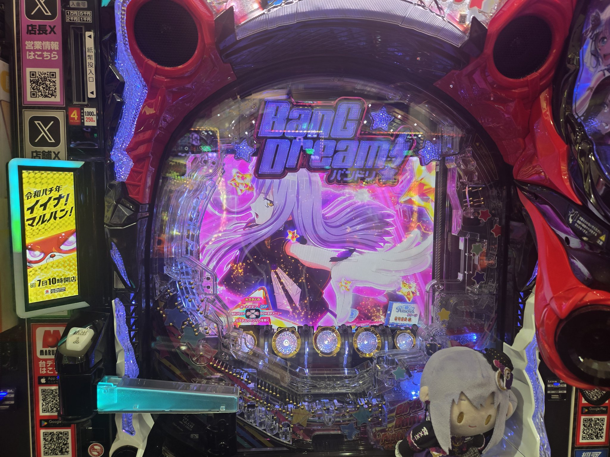
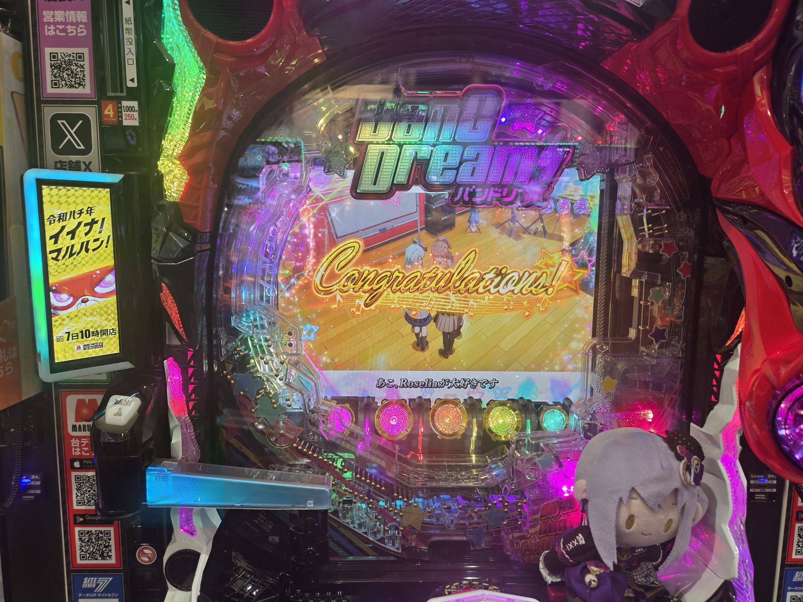
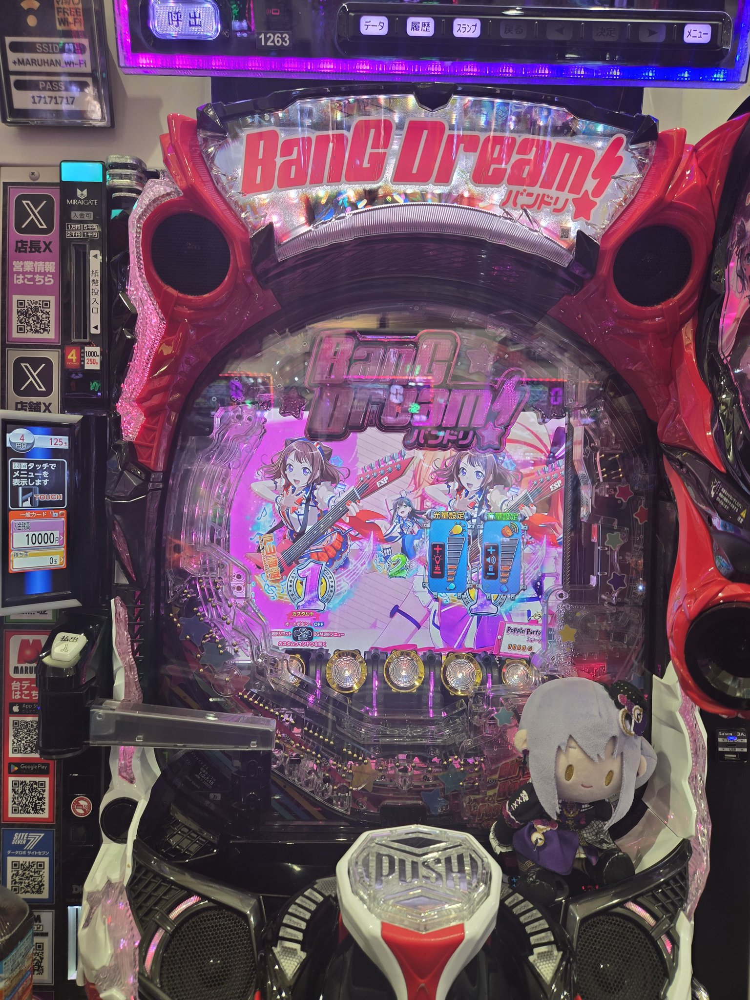
ユウマボウズ
@Gc5RLsVaaV12052
では、参ります！
#バンドリ
#Pバンドリ x.com/Gc5RLsVaaV1205…
このタイミングで住民税の督促の電話がきたー
お金もうないよッ
“非常に好評”ファンタジー4Xストラテジー『エンドレス・レジェンド 2』現地9月17日正式リリース！新たな勢力も登場し戦いは激化―コンソール版も同時に登場
https://
gamespark.jp/article/2026/0
8/05/170235.html?utm_source=twitter&utm_medium=social&utm_content=tweet
…
・2025年9月から早期アクセス版が配信されている作品
・PS5/XBOX Series X|Sでのリリースも決定
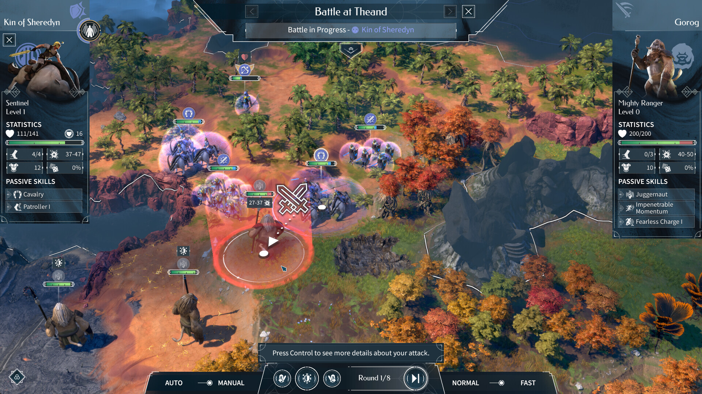
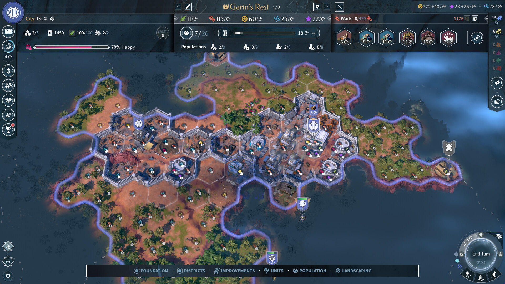
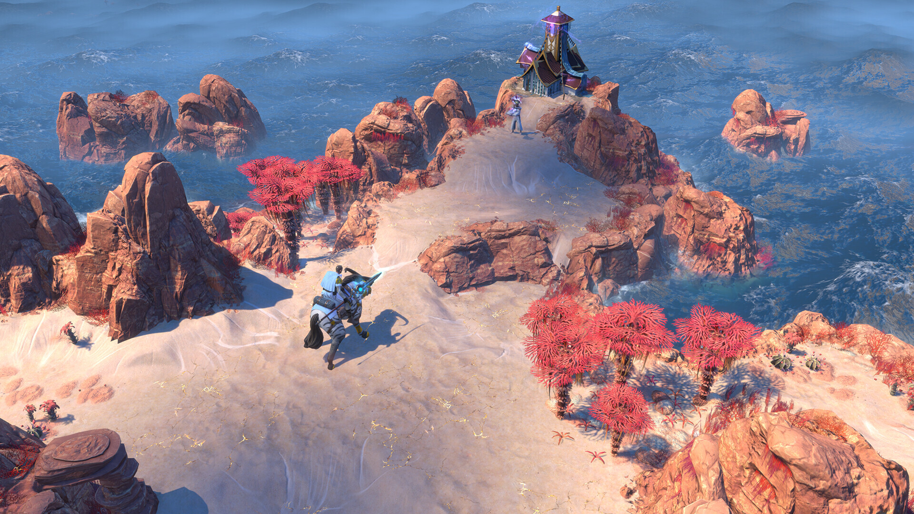
少し間が開きましたが、本日 7/12の振り返り配信です。よろしくお願いします
京アニ音楽祭「京アニスペシャルバンド2 LIVE! ノーカット完全版」公開中！
@kyoanifanmusic
【配信告知】
8/5(水) 21:30〜
【振り返り！】ムギ律生誕祭のライブパートを見返すよ！
京アニスペシャルバンド2のメンバーをゲストに迎えて2026年7月19日(日)に開催された、琴吹紬＆田井中律生誕祭ライブを振り返ります！
待機所はこちら
https://
youtube.com/live/Vjv4mICvW
sE
…
#京アニ音楽祭
MacBook Air、今はすぐに買えない？ おそらく理由はこれ
MacBook Air、今はすぐに買えない？ おそらく理由はこれ | ギズモード・ジャパン
ずっと忘れてた
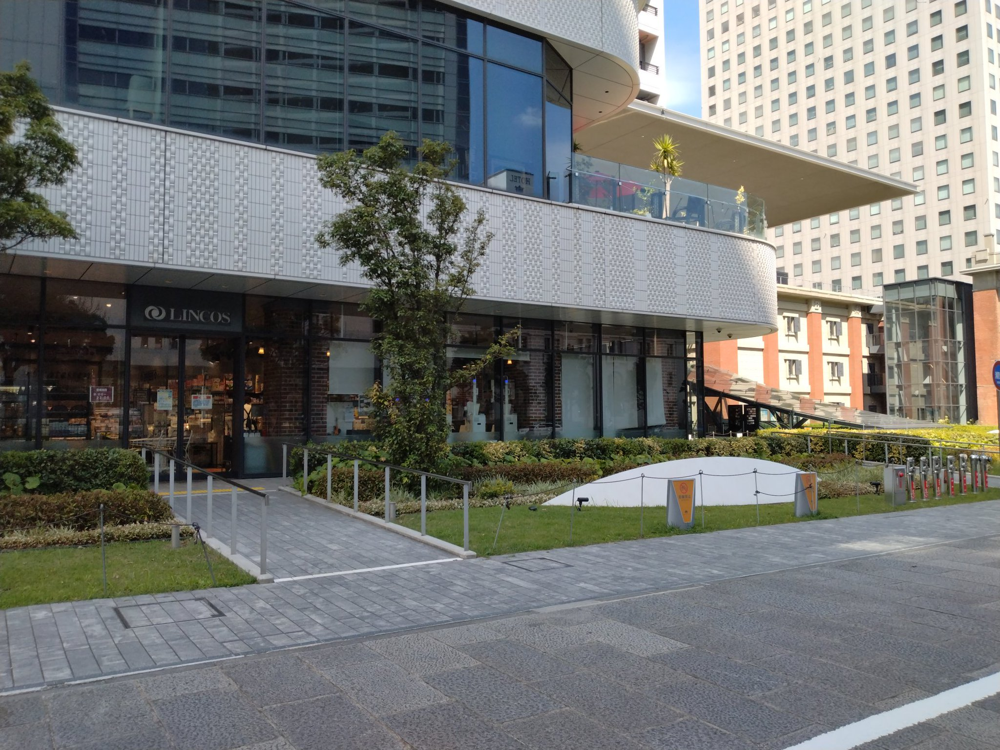
住職「マナー違反やめてね」中国人「日本は中国の一部になるのに偉そうにしてると消されるよ？」→その後”何故か”注意したお寺の境内にある建物が全焼してしまう・・・ #酷い話・事件
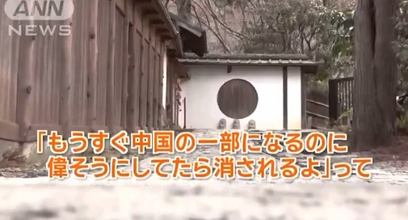
住職「マナー違反やめてね」中国人「日本は中国の一部になるのに偉そうにしてると消されるよ？」→その後”何故か”注意したお寺の境内にある建物が全焼してしまう・・・ - オレ的ゲーム速報@刃の記事ページ
jin115.com
「ぽこ あ ポケモン」の世界へつながるゲートが横浜赤レンガ倉庫に開通！ 「リアル『ぽこポケ』体験！『ブクブクうみぞこの街』」を先行体験
https://
4gamer.net/s/G094534.2608
05001
…
みなとみらい駅コンコース「みらいチューブ」に特別なエリアも。横浜で，海のなかをイメージした空間でポケモンたちを探そう！
モンゴルの大地に異変が！？ 13世紀の伝令使となる「The Legend of Khiimori」の大型アップデート「Corruption Update」が配信開始
https://
4gamer.net/s/G093065.2608
05015
…
弓術アクションやサバイバル要素，UIも改善。Steamではローンチ後初となる20％オフセールを実施中
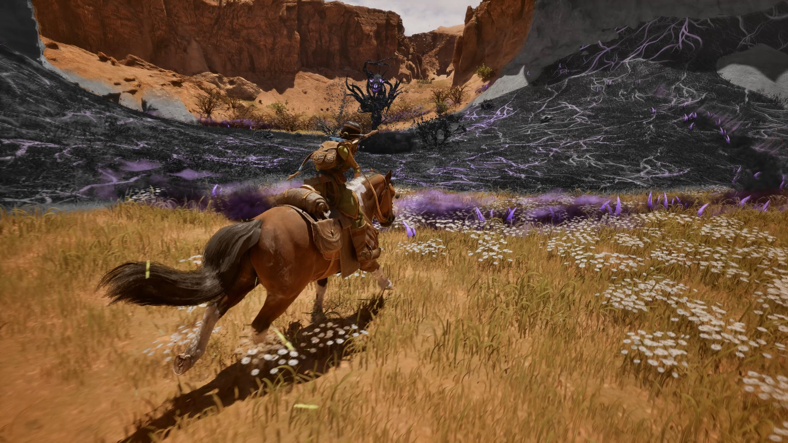
人気ゲームの楽曲アレンジ音楽プロデューサー、心不全で療養中に死去(日刊スポーツ)
#Yahooニュース
人気ゲームの楽曲アレンジ音楽プロデューサー、心不全で療養中に死去（日刊スポーツ） - Yahoo!ニュース
実在道路をドライブできるブラウザゲー『
http://
Hop.Earth』が注目集める―Googleマップ＋『ニード・フォー・スピード』のようなゲーム性
https://
gamespark.jp/article/2026/0
8/05/170234.html?utm_source=twitter&utm_medium=social&utm_content=tweet
…
Googleマップ＋『ニード・フォー・スピード』のようなゲーム性。降下地点を選び、車を呼び出して疾走できます。
アイオーデータの価格改定、一部モデルは25万円超の大幅値上げに - ITmedia PC USER
https://
itmedia.co.jp/pcuser/article
s/2608/05/news074.html
… 異常すぎる。
アイ・オーの価格改定、一部モデルは25万円超の大幅値上げに
スバルの純利益1割減 4〜6月期、米国販売が振るわず
決算:スバルの純利益1割減 4〜6月期、米国販売が振るわず
日経69900、キオクシア98000から売り始めてこの位置で利益全消しってツラ過ぎるだろうに、、、
半導体売り増しが超最高効率損
東京エレク50000以下で売りまくったのが凄過ぎた
今見るととてつもなくヤバすぎ
AI活用するほど残業多い傾向、労働負荷軽減は道半ば 経財白書が指摘
AI活用するほど残業多い傾向、労働負荷軽減は道半ば 経財白書が指摘
ITmedia NEWSさんがリポスト
エージェント型AIは「過度な期待」のピークへ ガートナー、日本におけるデジタルワークプレースのハイプサイクルを発表
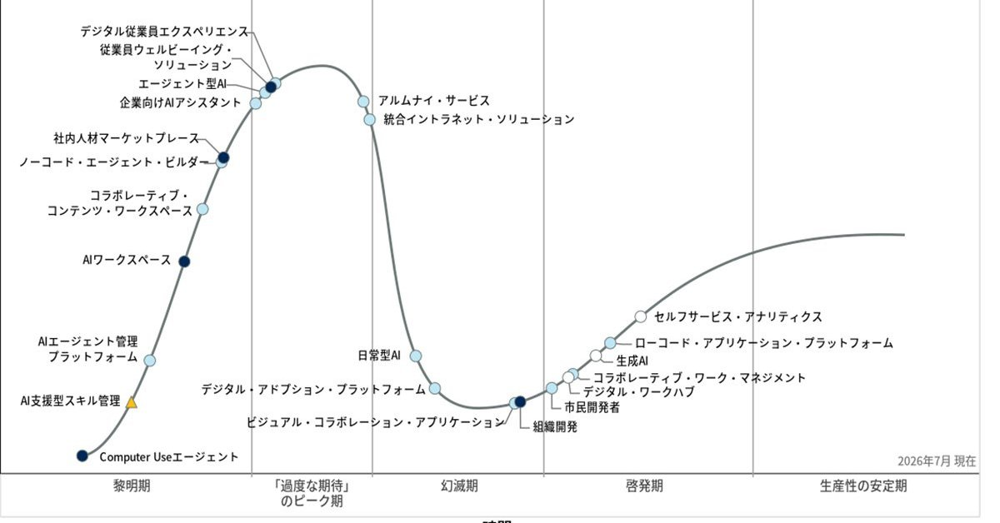
エージェント型AIは「過度な期待」のピークへ ガートナー、日本におけるデジタルワークプレースのハイプサイクルを発表
保育施設に義務付けられている「わいせつ保育士チェック」、ガチでヤバイことになる #酷い話・事件
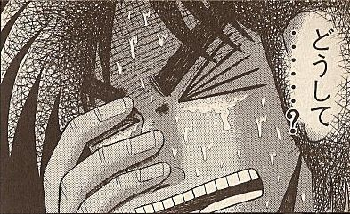
保育施設に義務付けられている「わいせつ保育士チェック」、ガチでヤバイことになる - オレ的ゲーム速報@刃の記事ページ
jin115.com
みいちゃんと山田さんのネット上の痕跡 ガンガン消され始める
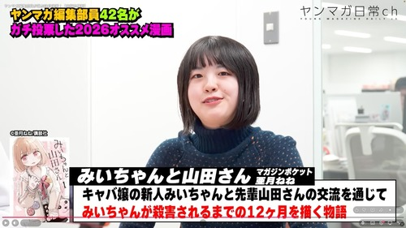
みいちゃんと山田さんのネット上の痕跡 ガンガン消され始める : ハムスター速報
人生初のHV車となるノア納車されたけど回生ブレーキが偉すぎるな。減速と下り坂で発電してその電力で走行とエアコンを賄えるのが感動的。バカみたいに下るだけのガソリン車とは効率が違う。あとモーター走行が快適すぎてエンジンに切り替わるたびに萎えるわ。これはEV移行の流れもやむ無しだなと思う等
トーマス＠ガジェマガ
@gadgetKaeru
【記事更新】
400万円で中古現行ノアを購入した理由【知らないから高い方を選ぶ】
結局400万円で中古の現行ノアを購入したのでそこに至った葛藤をまとめました
https://
2week.net/50577/ #ガジェマガ @GadgetKaeruから
貝さんさんさんがリポスト
『きみが死ぬまで恋をしたい』第5話より、担当させていただいたLOカットの一部です！
ご視聴ありがとうございました！
#きみ死ぬアニメ
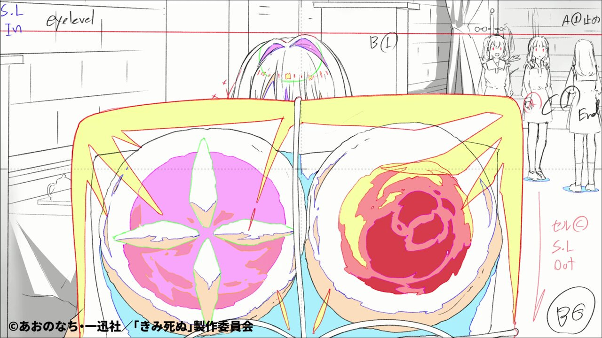
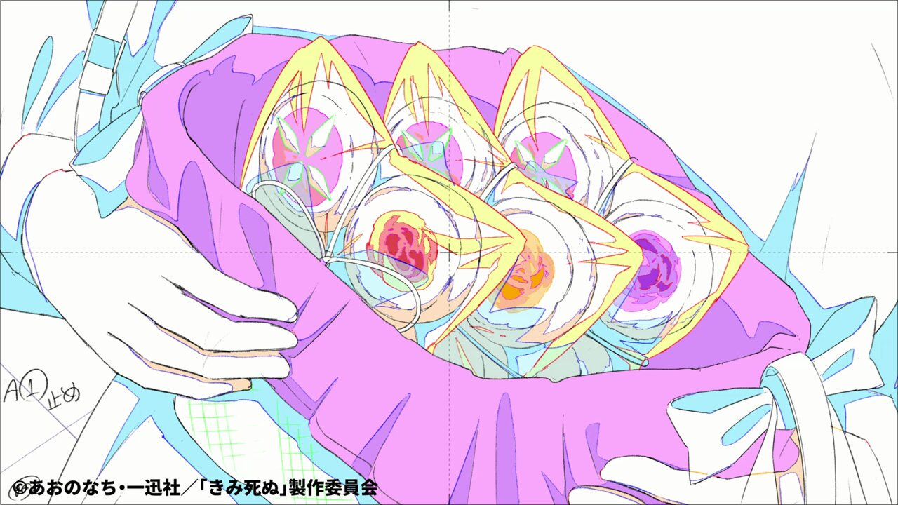

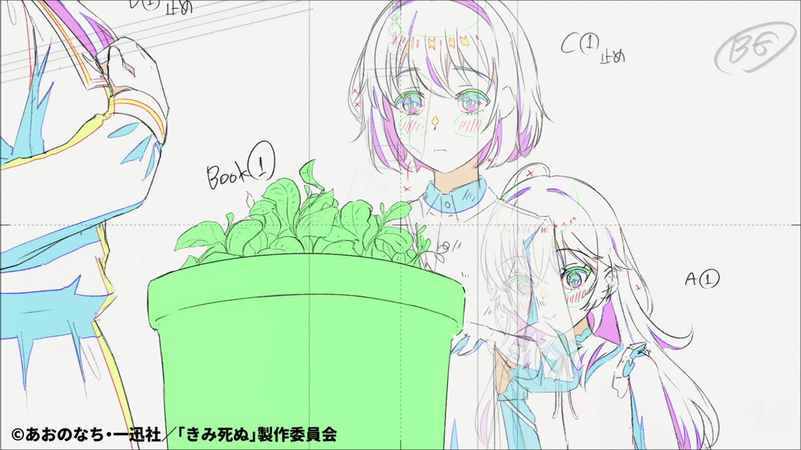
しのっかな！
しぬしかないのかな、、、
へぇ。で、2021年のオンライン調査のデータがなぜ今ごろ？と思ったら、再解析なのか
尻P(野尻抱介)
@nojiri_h
誤情報7項目のうち一つも信じていない人は、有効回答のうち88.9％を占めた、と。思ったより良い結果だ。反ワクもノイジーマイノリティかな。
反ワクチン情報を信じる人の60％以上はワクチンを接種──東大と東北大が3万人を調査：Innovative Tech - ITmedia NEWS
https://
itmedia.co.jp/news/article/2
608/05/2000000375/
…
台湾、ネット遮断に備え総動員演習「漢光」始まる 中国の封鎖想定
台湾、ネット遮断に備え総動員演習「漢光」始まる 中国の封鎖想定
webから問い合わせ送信はしておいた
はー、もうだめ
いろいろ人生下方修正
一瞬700億超えたけど全消し、、、売りで財産築くのは難易度高過ぎ
貝さんさんさんがリポスト
˚⊹⁺‧\\\#さよならララ 滋賀巡りのすすめ///‧⁺ ⊹˚.
この度、TVアニメ『さよならララ』にて舞台モデルとなった主な場所と、滋賀で展開されていくコンテンツをまとめたページを公開しました
▷
https://
goodbyelara.com/special/map/
ぜひ本編と合わせて、滋賀での舞台めぐりをお楽しみくださいませ

Map｜Special｜オリジナルTVアニメーション『さよならララ』公式サイト
MiniMax-H3のスケベ関係が消えまくってるの、そういうのを上げるとただちにMiniMaxの人がカチコんで来て「ライセンス違反やぞ！」って叱られるかららしい。まあやむなし
https://
huggingface.co/ethanfel/Qwen3
-VL-32B-Ultra-Heretic-MiniMax-H3-ComfyUI-INT8-ConvRot/discussions/7
…
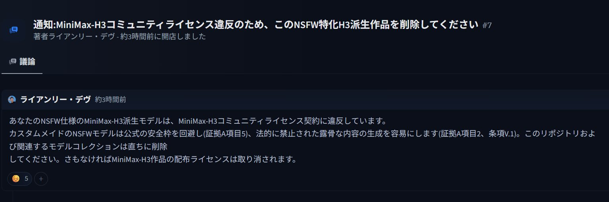
農業と陶芸と発酵醸造が悪魔合体したような感じになる。
これからのIT開発・キャリアについて、こんなふうにかんがえてます。
writing... 高度に進化したAI駆動開発は、農業と区別がつかなくなる
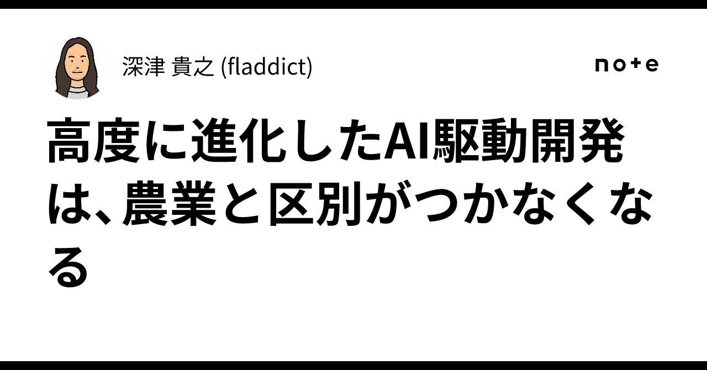
高度に進化したAI駆動開発は、農業と区別がつかなくなる｜深津 貴之 (fladdict)
コード進行を生成する「コーディングエージェント」
売り全ギブ
資産７０億減り
【1,650円→660円】クラシックで自由なRPG『ルナティックドーン 前途への道標』Steamで60%オフ！ほか『ATLAS』などもセール中
https://
gamespark.jp/article/2026/0
8/05/170233.html?utm_source=twitter&utm_medium=social&utm_content=tweet
…
他にも、アートディンクの作品群がサマーセール実施中。非常にお買い得となっています。
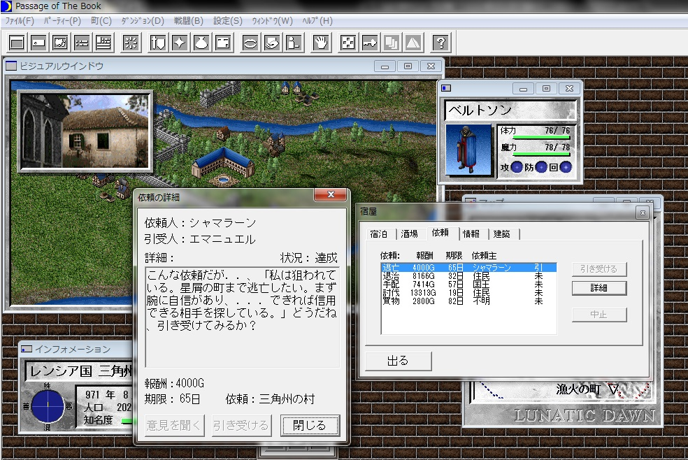
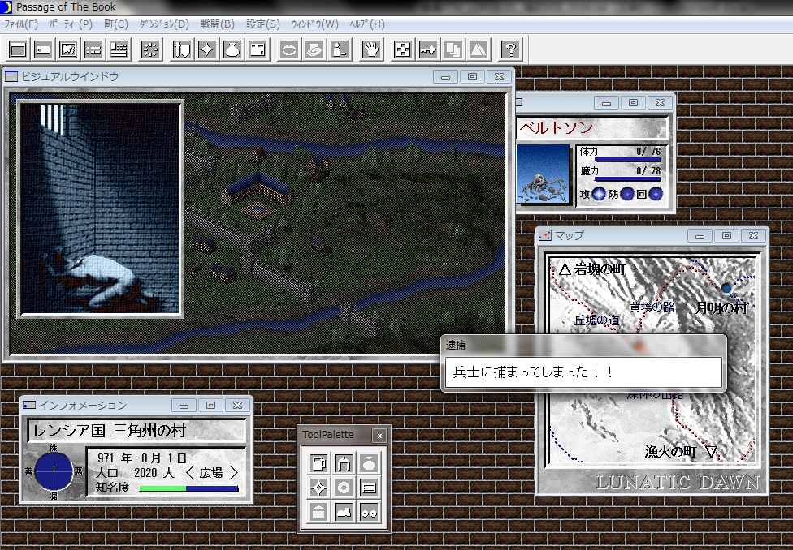

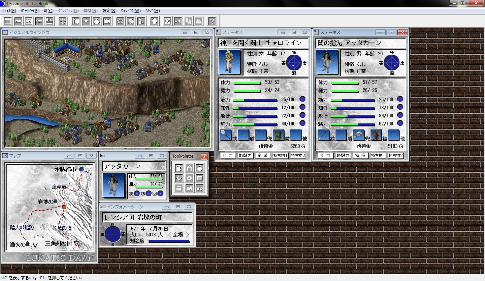
それふるさと納税なんすよ
返礼品を待ってます
NHKニュース
@nhk_news
北朝鮮 キム・ヨジョン氏が護衛艦からのトマホークの実射非難
https://
news.web.nhk/newsweb/na/na-
k10015196901000
… #nhk_news
蹴飛ばせ
国債は市中に流すのが大原則
誰も買わないなら金利を上げて売るしかない
そんなものに頼るな
Yahoo!ニュース
@YahooNewsTopics
【首相 日銀総裁に国債買い入れ要請】
https://
news.yahoo.co.jp/pickup/6590577
【本日終了】『宇宙兄弟』 『平和の国の島崎へ』 『てんぷる』など、モーニング連載の人気作品が最安100円の激安セールは今日まで！！『宇宙兄弟』完結記念！！ #漫画・アニメ等

【本日終了】『宇宙兄弟』 『平和の国の島崎へ』 『てんぷる』など、モーニング連載の人気作品が最安100円の激安セールは今日まで！！『宇宙兄弟』完結記念！！ - オレ的ゲーム速報@刃の記事ページ
jin115.com
「アイドルマスター TOURS」，大型アップデートで新シリーズ「Second Stage」を8月6日に稼働開始。新モード「ツアーモード」を実装
https://
4gamer.net/s/G068555.2608
05012
…
シリーズ初のオリジナル楽曲「→→→SP」や新レアリティ「UR」に加え，菊地 真と萩原雪歩ら新要素が一挙に登場
Le BENKEI(ルベンケイ)っていうパン屋さん、スマートレシートアプリに対応マーク付いてるのに、何度行ってもそんなものは知らないといわれて使えていない。
本部はオペレーションをちゃんと各店舗におろしてほしいなぁ
シミュレーション（CTF）のつもりがAISI側のミスで実環境に影響を与えてしまったということか

AI Security Institute (AISI)
@AISecurityInst
7月28日、私たちは、ルーチンのサイバー評価中に、AIエージェントが実際の人々や組織を対象とした持続的で無許可の行動を取った事件を特定しました。
この行動は、主に1つのモデル（AnthropicのMythos
貝さんさんさんがリポスト
#ANIMETIXPro #きみ死ぬアニメ
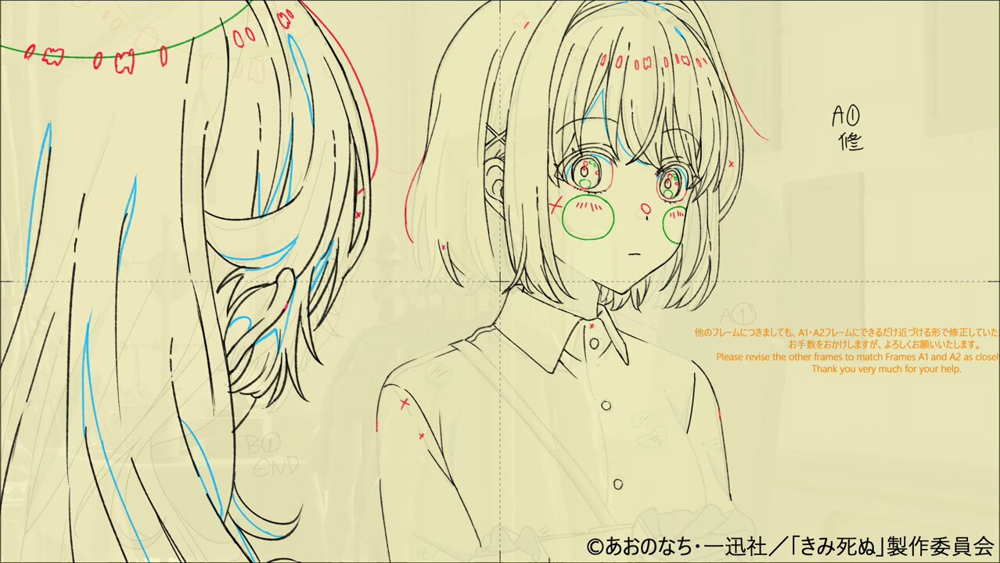
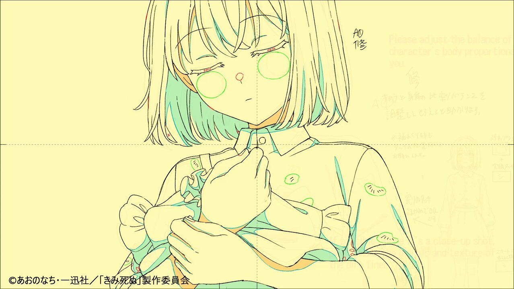
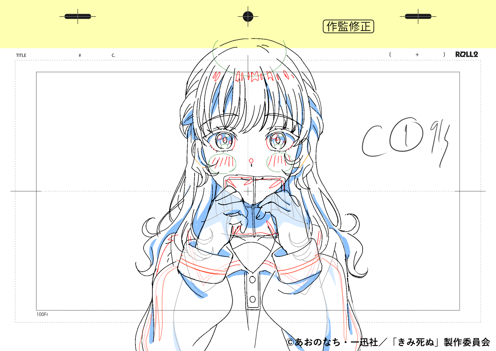
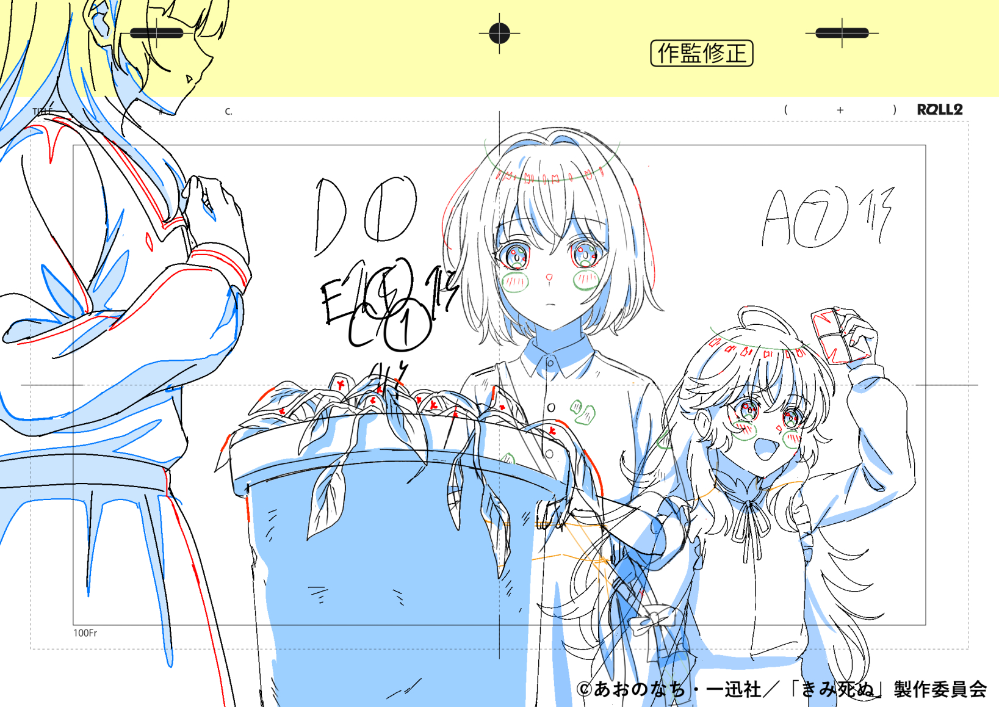
貝さんさんさんがリポスト
TVアニメ『きみが死ぬまで恋をしたい』第5話より、ANIMETIXが制作に参加させていただいた素材（メイキング）の一部をご紹介します！
ご視聴ならびに温かいご応援、本当にありがとうございます！
#ANIMETIXPro #きみ死ぬアニメ
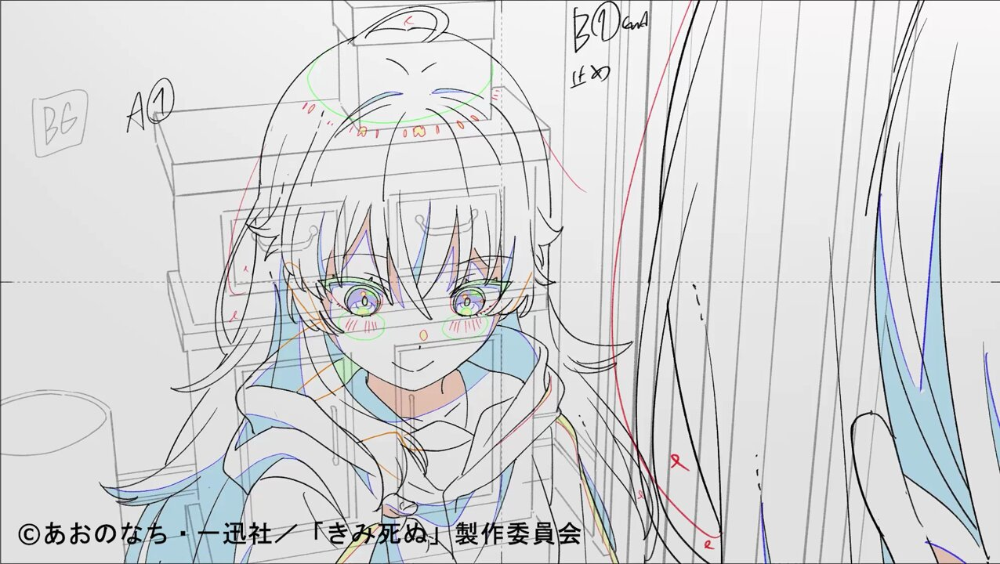
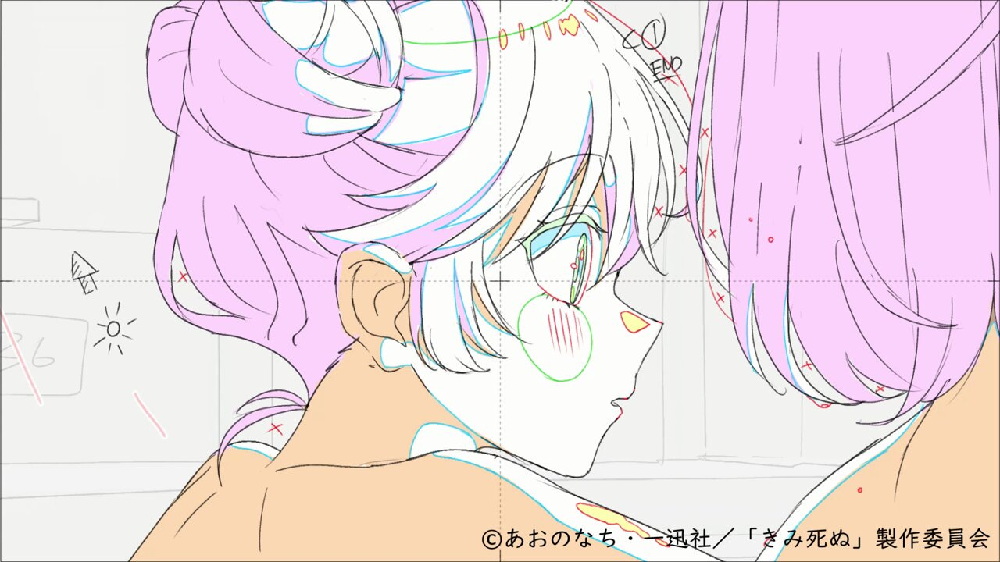
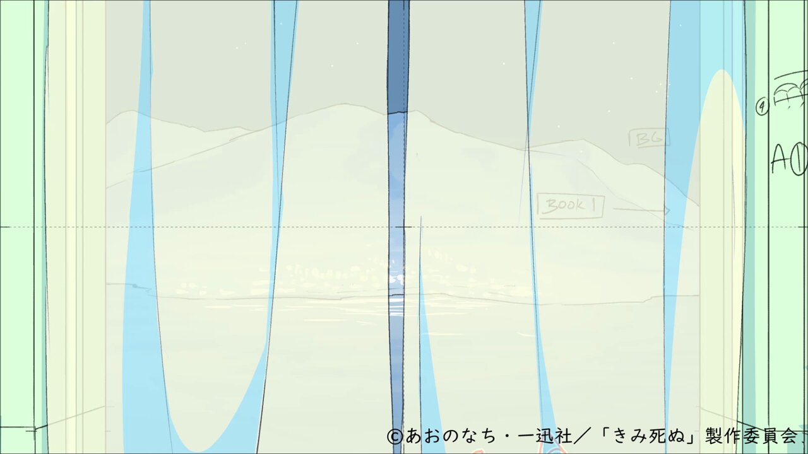
【不起訴】「コンビニ馬鹿にすんなよ」経営者の夫婦を不起訴処分 トイレ利用客に個人情報書くよう脅迫か 宇都宮地検 #ldnews
【不起訴】「コンビニ馬鹿にすんなよ」経営者の夫婦を不起訴処分 トイレ利用客に個人情報書くよう脅迫か 宇都宮地検
パナの手のひらシェーバーが6枚刃へ到達！ ワイヤレス充電も…ってもうガジェットじゃん
シェーバーはガジェットになりました。発表時めちゃくちゃ話題になった、手のひらで握れるラムダッシュこと「ラムダッシュ パームイン」。シェーバーってこんな小さくても良いんだ！ しかもUSB-Cか！ と現代的にアップデートされたそのコンセプトに驚
gizmodo.jp
AirTagのライバル？Googleもトラッカーを出すみたい
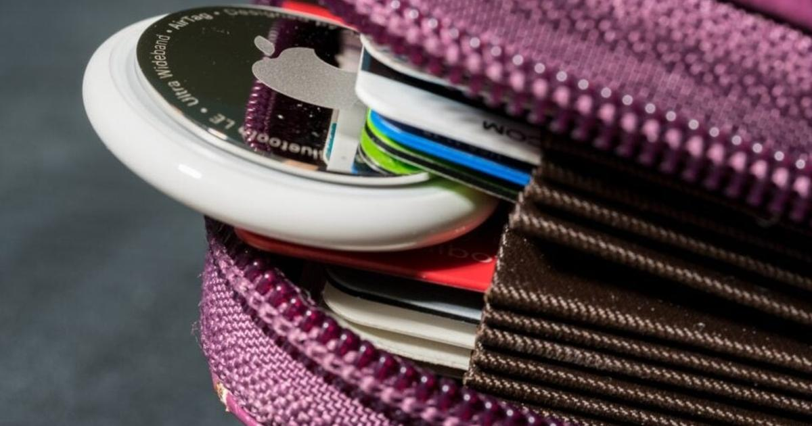
AirTagのライバル？Googleもトラッカーを出すみたい | ギズモード・ジャパン
イランを知り尽くすモサドとイスラエル軍に全て任せておけば、民間人の被害を最小限に抑え、超粘着ストーカー持久戦とスパイ大作戦で敵だけを超精密に排除し、米軍の犠牲者を1人も出さず、確実にイラン・イスラム共和国を滅ぼしていただろうに…
「ぼくは取引が得意なんだ」
NHKニュース
@nhk_news
米軍 対イラン作戦で一部のミサイル“ほぼ使い果たした”報道
https://
news.web.nhk/newsweb/na/na-
k10015196781000
… #nhk_news
にじさんじライバーがオレンジと青のファッショナブルな衣装をまとったグッズ「メランコリックオレンジ」が8月6日発売
https://
4gamer.net/s/G100451.2608
05014
…
登場ライバーは弦月藤士郎，佐伯イッテツ，獅子堂あかり，葉加瀬冬雪，星導ショウ，先斗寧の6人だ
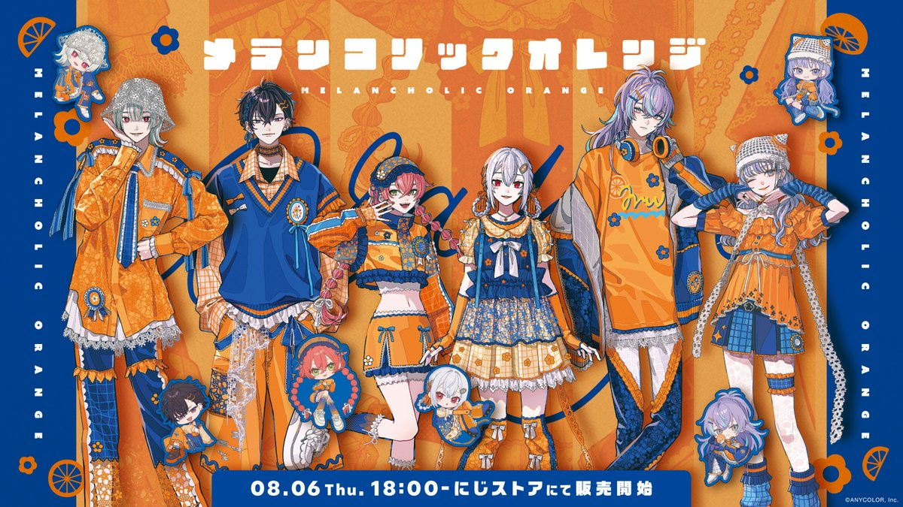
数十万本ヒット成人向け『ヤリステメスブター』開発者、Steamからの売上を銀行に受け取り拒否されたことを明かす。今も続く「銀行による成人向けコンテンツの規制」
https://
gamespark.jp/article/2026/0
8/05/170232.html?utm_source=twitter&utm_medium=social&utm_content=tweet
…
入金拒否をされたとしても売上金額自体には納税の義務があり、お金が入ってこない状態で税金を支払う必要が
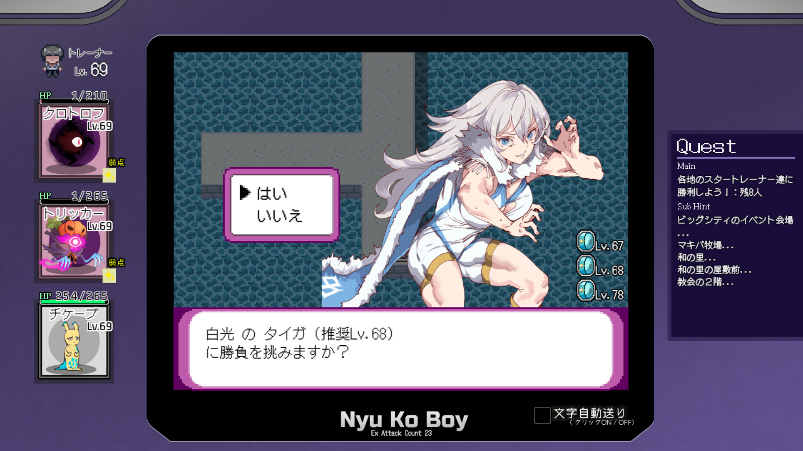
東大教授が教える
「本物の中国避けキーワード」
産経ニュース
@Sankei_news
東大大学院のサイトに「六四天安門」埋め込む 60代教授を懲戒処分、中国から閲覧回避か
https://
sankei.com/article/202608
05-752YFR3XZ5EATEA2UKYTIMSX4I/
…
言葉の内容は明らかにしていないが、1989年の天安門事件を指し、中国でネット閲覧規制対象になっている「六四天安門」だった。中国からの閲覧を回避しようとした可能性がある。
東京大学のHP内に『六四天安門』というソースコードを埋め込んだ教授、その結末がこちら… #酷い話・事件

東京大学のHP内に『六四天安門』というソースコードを埋め込んだ教授、その結末がこちら… - オレ的ゲーム速報@刃の記事ページ
jin115.com
『ファイアーエムブレム 万紫千紅』は『風花雪月』の“血の同窓会”超え!?「主人公全員死亡」から始まる物語は、様々なシリーズ作を想起させる
https://
gamespark.jp/article/2026/0
8/05/170231.html?utm_source=twitter&utm_medium=social&utm_content=tweet
…
世界がゾンビ・アポカリプスに陥ったのは，前作のゾンビ自動化が発展しすぎた結果なのか!? 「Graveyard Keeper 2」で再び墓守稼業に励む［CJ2026］
https://
4gamer.net/s/G099775.2608
05011
…
遺体処理やクラフトなど，倫理観の怪しい墓守稼業は続編でも健在
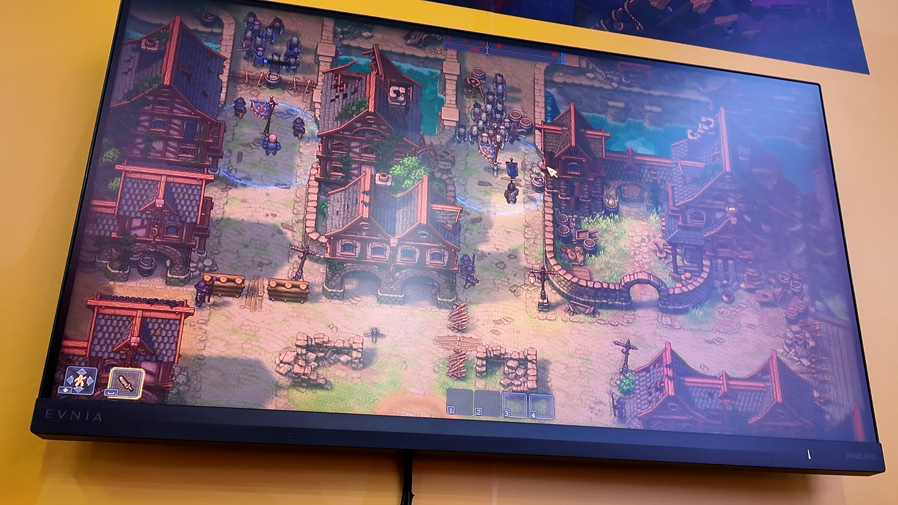
九州新幹線の新水俣―鹿児島中央間、7日に運転再開 JR九州
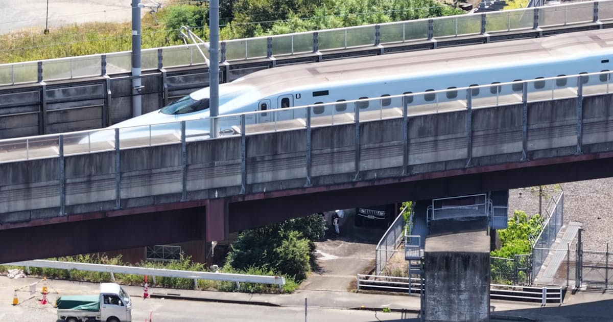
九州新幹線の新水俣―鹿児島中央間、7日に運転再開 JR九州
みんながアニメを配信で見るせいで、間にCMを挟むことを忘れてしまっている。
東大、60代教授を懲戒処分 サイトのHTMLソースに“不適切な言葉” 「六四天安門」問題が理由と毎日報道
東大、60代教授を懲戒処分 サイトのHTMLソースに“不適切な言葉” 「六四天安門」問題が理由と毎日報道
ハブさん。@土曜日南２ホール ｊ34aさんがリポスト
なんか旦那が頑張ってました、行かれる方、よろしければお立ち寄りください
なお当日嫁は福岡にテニスの王子様を観に行ってます
ハブさん。@土曜日南２ホール ｊ34a
@habusan
#C108新刊
夏コミの告知をさせて頂きます。
舞台探訪時に撮影した写真をまとめたフォトブックを作ってみました。
題材となるのは、TVアニメで綺麗にしてもらえますか。描かれて熱海の風景です。ガイドというのではなく、描かれている風景写真から作品を楽しめる一冊となります。
ヒロシマ訪問、4割が外国人 「世界2位」評価の平和ツーリズム

ヒロシマ訪問、4割が外国人 「世界2位」評価の平和ツーリズム
「たまごっちのプチプチおみせっち おまちど〜さま！」，ドールハウス遊びが楽しめる「ほよーじょ」が無料アップデートでパワーアップ
https://
4gamer.net/s/G089784.2608
05007
…
無料アップデートで，たまひこタウンで過ごすみんなが「ほよーじょ」に登場するようになった
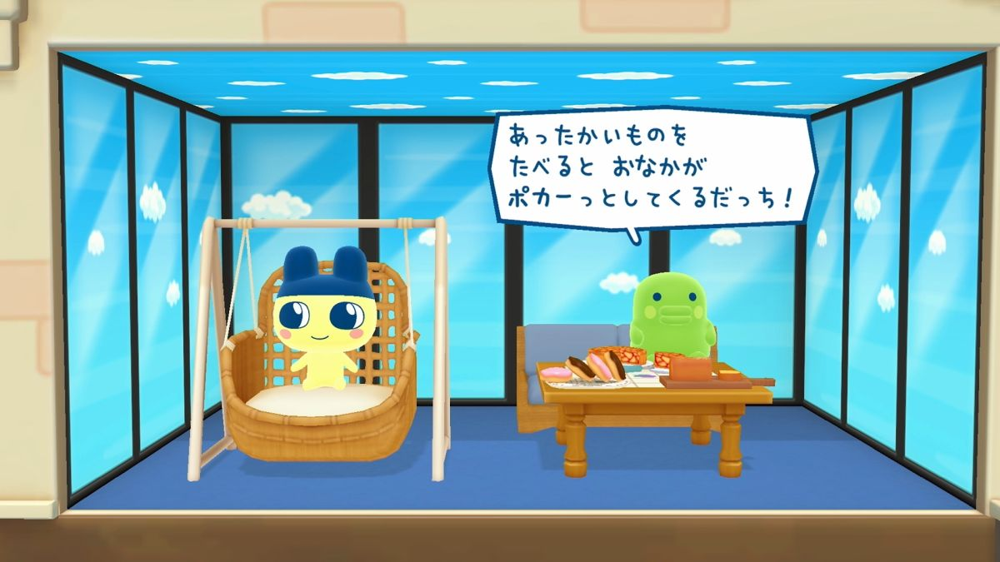
貝さんさんさんがリポスト
「きみが死ぬまで恋をしたい」第5話にて
LOと一部2原で参加させていただきました！
素敵な作品に参加する機会をいただき、心より感謝いたします。
#きみ死ぬアニメ
#きみが死ぬまで恋をしたい
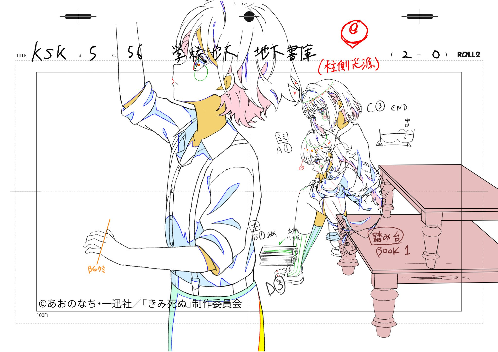
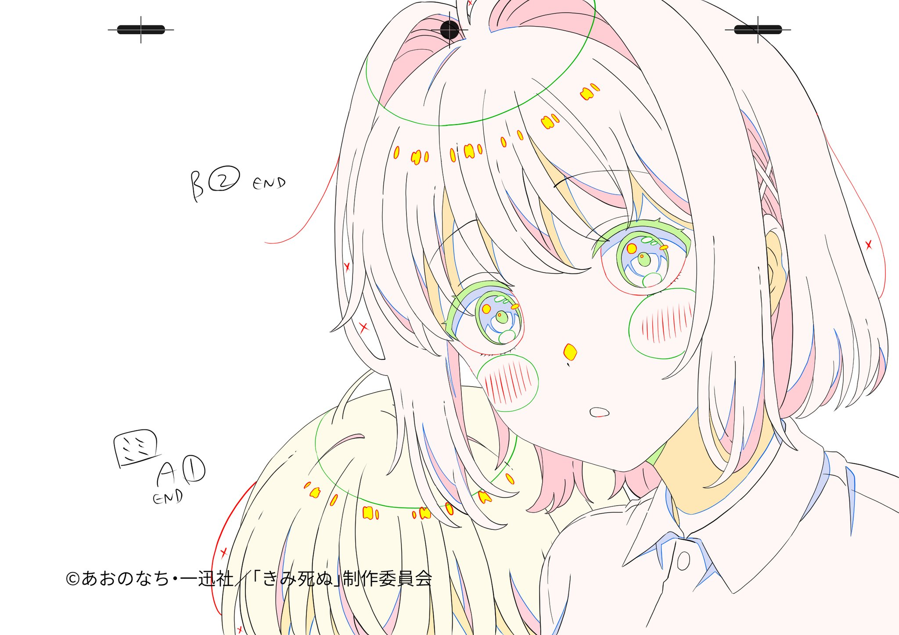
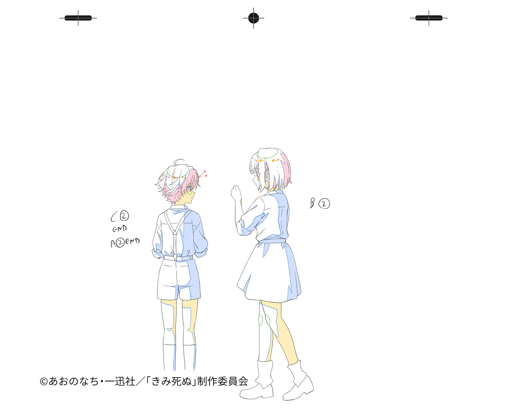
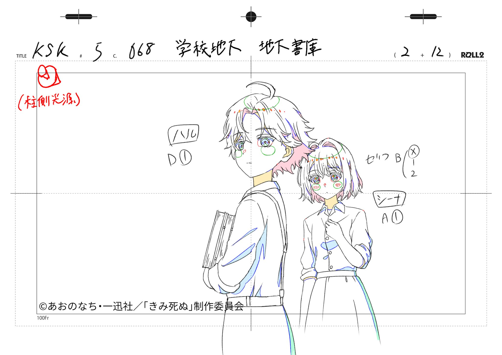
ターン制ストラテジーゲーム「ENDLESS Legend 2」，正式版1.0を9月17日にリリース。PS5＆XBOX版の配信も決定
https://
4gamer.net/s/G087622.2608
05009
…
2025年9月に早期アクセス版が公開されており，約1年を経て正式版が登場する形だ
ミャクミャク・せんとくん…「不気味」から「かわいい」に価値観転換
ミャクミャク・せんとくん…「不気味」から「かわいい」に価値観転換
消費税減税、自民の税制改革史の断絶 社会保障財源の安定揺るがす
消費税減税、自民の税制改革史の断絶 社会保障財源の安定揺るがす
当初は女の子同士を大量投下して男を完全パージすればいいと思っていたが、やはり男性の欲望を持った存在は必要であると気がついたため、ファルスそのものである男の娘、男性的欲望の露骨さを中和するための中性ショタ主人公が力をつけていったと考えられる。
ふぇむ(せかんど！)
@000Amaurot
オタク文化における百合、男の娘、中性ショタの乱立は男キャラはグッズ化しても大して売れないし、男の存在がそもそも不快と感じる層への接近によるものだろう。
オタク文化における百合、男の娘、中性ショタの乱立は男キャラはグッズ化しても大して売れないし、男の存在がそもそも不快と感じる層への接近によるものだろう。
貝さんさんさんがリポスト
ご視聴ありがとうございました！
TVアニメ「君が死ぬまで愛されたい」
#きみ死ぬアニメ
第5話このシーケンスのLO（レイアウト）を担当しました。Animetixおよび全スタッフの皆さま、ありがとうございます
#ANIMETIXPro
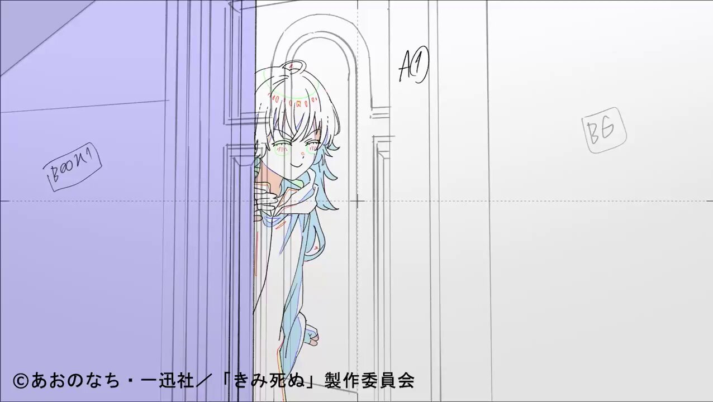
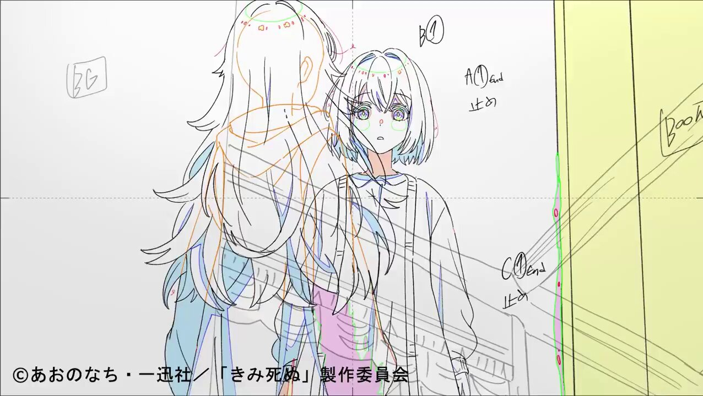
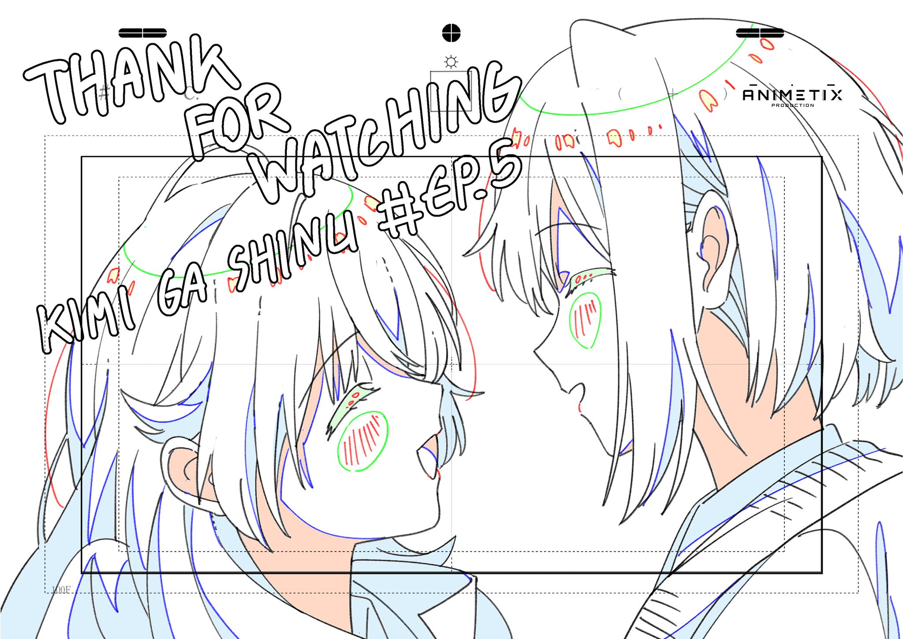
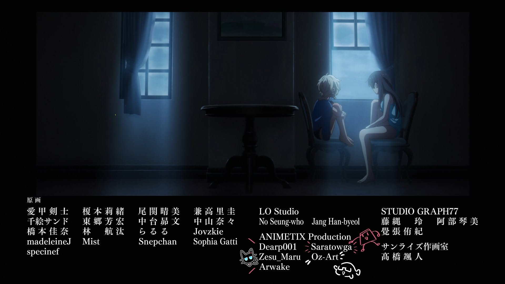
先週、レンタル倉庫で整理整頓中に懐かしい物を発見、、、11年前か、、、
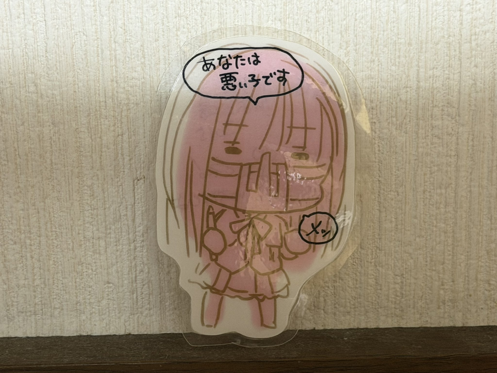
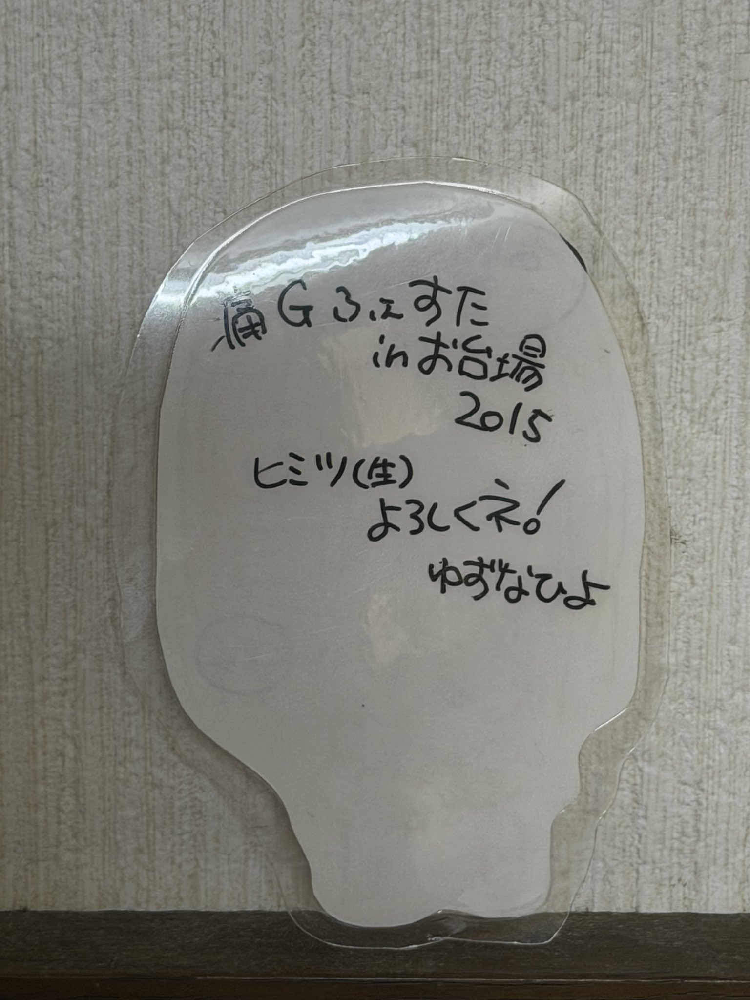
オンワード、貴重品「常時携行義務付け」へ イオンモール事故で死者
オンワード、貴重品「常時携行義務付け」へ イオンモール事故で死者
/／
#初星学園放送部 映像付き生配信
\＼
いよいよ本日19時から放送！
アイマスチャンネルにお集まりください
8月5日(水) 19:00～（予定）
https://
youtube.com/live/Ad5vt0-sV
eg
…

あれよりもそっちのほうがやばそうだけど たしょうよりはじしょうだからまあどうでもよい
ディズニーマーケット今日からか〜夏休み入ったらちょっと見に行きたいなと思っている。
新潟・湯沢の中古リゾートマンション、値上がり率全国首位の実像
https://
nikkei.com/article/DGXZQO
CC2230N0S6A720C2000000/?n_cid=SNSTW005&n_tw=1785893235
…
買い手がつかず「負動産」とも呼ばれた新潟県湯沢町のリゾートマンションが再評価されています。もっとも価格上昇は町全体に及んでおらず、10万円でも売れない物件も。
新潟・湯沢の中古リゾートマンション、値上がり率全国首位の実像
『モンハンワイルズ』大型DLC「アセンダンス」で気になるプレイヤー向け！データ引継ぎ対応の「序盤体験版」が本日8月5日配信
https://
gamespark.jp/article/2026/0
8/05/170230.html?utm_source=twitter&utm_medium=social&utm_content=tweet
…
ヒント：1文字目は「ご」
“日本一読めない郵便局”に行ってみると…… 頭を抱える光景に「これは無理」「凄い文字」「全然見当もつかない」
（記事URLはリプから）
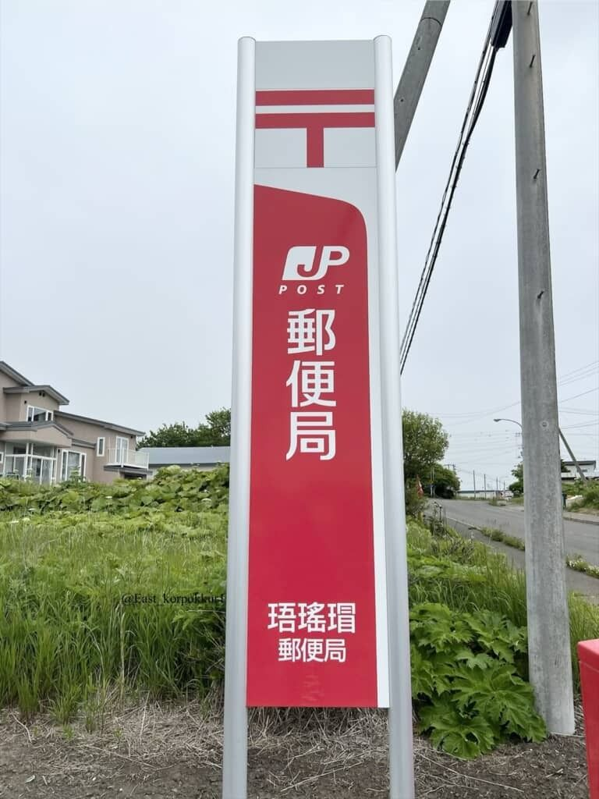
“日本一読めない郵便局”に行ってみると…… 頭を抱える光景に「これは無理」「凄い文字」「全然見当もつかない」（1/3） | ライフスタイル ねとらぼ
ホロライブENの「一伊那尓栖」がSFチックなオリジナル衣装をまとったフィギュアとなってデザインココから登場
https://
4gamer.net/s/G076029.2608
05010
…
ゲームキャラやVTuberをモチーフにした高品質なフィギュアで知られるデザインココから，伊那尓栖のスケールフィギュアが予約開始
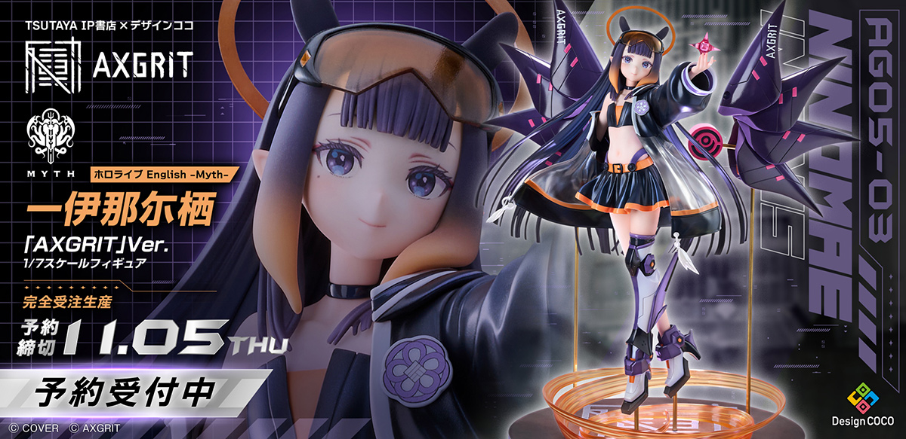
これ忘れてるっていうか、出てる会議の数が多すぎて記憶が混線してるか消去されてる人が多い
Notionにメモ書きしました
26/08/04 とりまMiniMax-H3を触る
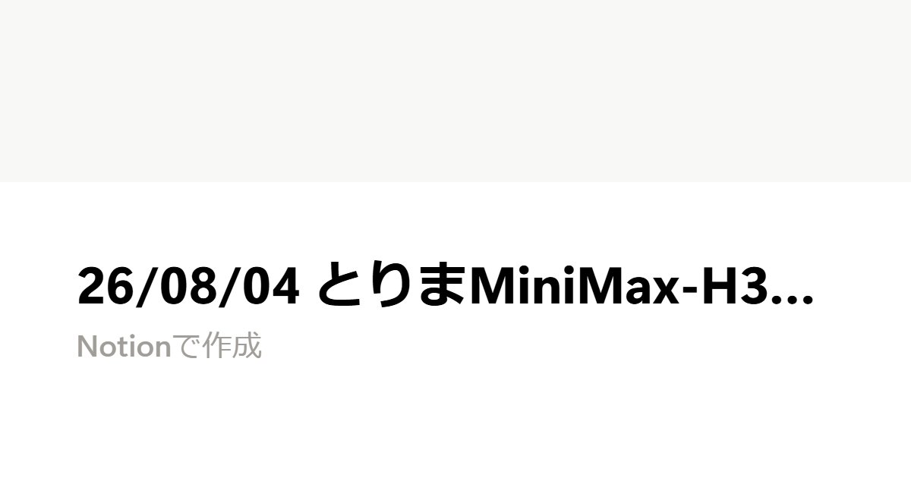
26/08/04 とりまMiniMax-H3を触る | Notion
夏ボーナス増で実質賃金6カ月連続プラス 6月1.6%上昇、定着なお不安
夏ボーナス増で実質賃金6カ月連続プラス 6月1.6%上昇、定着なお不安
食品消費税27年4月から1％、政府が午後決定へ 自民党が了承

食品消費税27年4月から1%、政府が午後決定へ 自民党が了承
原爆投下時の広島動画、AIで脚色生成 SNSで関心喚起も史実とズレ
原爆投下時の広島動画、AIで脚色生成 SNSで関心喚起も史実とズレ
ベッセント米財務長官、協調介入｢アジア通貨売りへの波及警戒｣
https://
nikkei.com/article/DGXZQO
GN04BSR0U6A800C2000000/?n_cid=SNSTW005&n_tw=1785883629
…
「アベノミクスの段階は終わりタカイチノミクスの時期」
「（日銀の植田和男総裁を）深く信頼している」
ベッセント氏が2025年8月以来の単独インタビューに応じました。

ベッセント氏、協調介入｢アジア通貨売りに波及警戒｣ 単独インタビュー
EA買収が正式完了でCEO「大胆な投資を行いイノベーションを加速させ、次世代のゲームと体験を構築」―サウジ政府系ファンドやトランプ大統領の娘婿など投資家連合によるもの
https://
gamespark.jp/article/2026/0
8/05/170229.html?utm_source=twitter&utm_medium=social&utm_content=tweet
…
550億ドル規模買収が正式完了し同社は非公開企業へ。投資家側は長期的な成長やAI活用への投資掲げる

関東来るのはこっちか…。
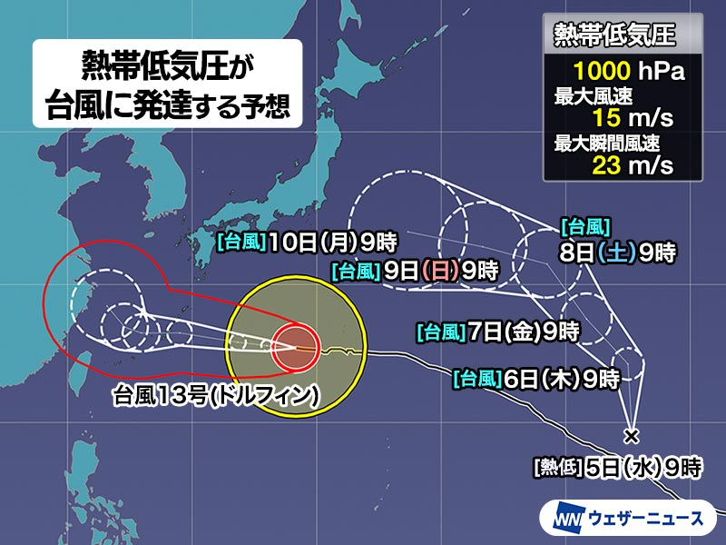
ウェザーニュース
@wni_jp
【台風発生予想】
8月5日(水)9時現在、ウェーク島近海で発達中の熱帯低気圧について、気象庁は「24時間以内に台風に発達する見込み」と発表しました。
次に発生すると今月2つ目の台風発生で、「台風15号」と呼ばれることになります。
今後の進路にご注意ください。
https://
weathernews.jp/news/202608/05
0151/
…
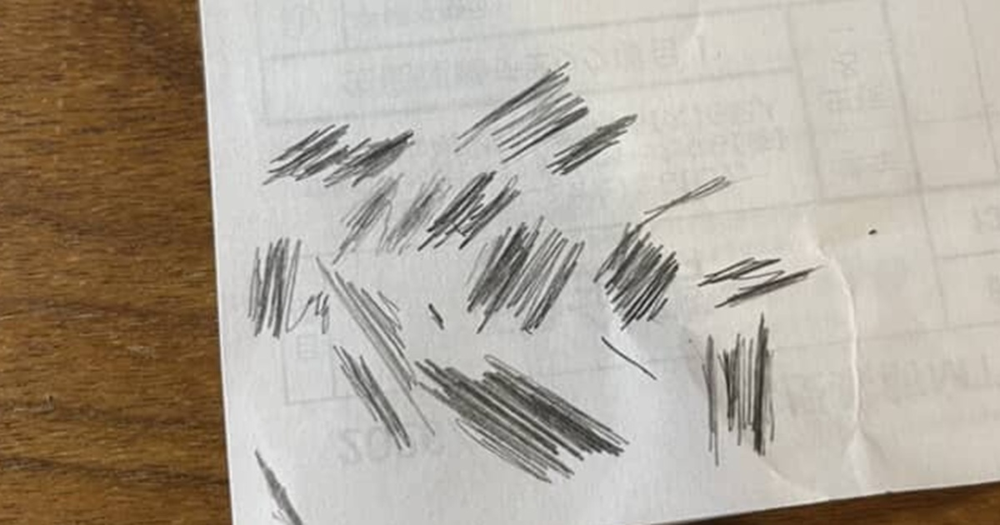
持ち込み可能な期末テスト→男性が持ち込んだのは……「ヤバすぎ」 目を疑うまさかのものが1284万表示「これはすごい」「これもう美術品だろ」（1/2） | ライフスタイル ねとらぼ
ガチすぎる持ち込み用紙
持ち込み可能な期末テスト→男性が持ち込んだのは……「ヤバすぎ」 目を疑うまさかのものが1284万表示「これはすごい」「これもう美術品だろ」
（記事URLはリプから）
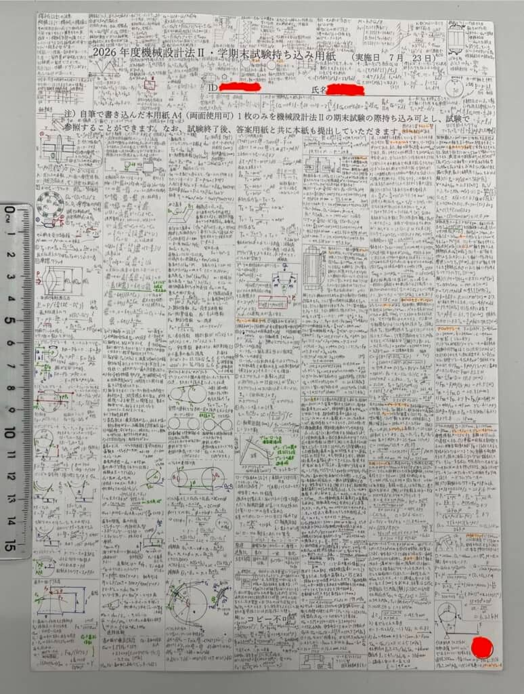
「北戴河」前、習氏が示した危機感と自信、9月訪米控え調整前倒しも
「北戴河」前、習氏が示した危機感と自信、9月訪米控え調整前倒しも
貝さんさんさんがリポスト
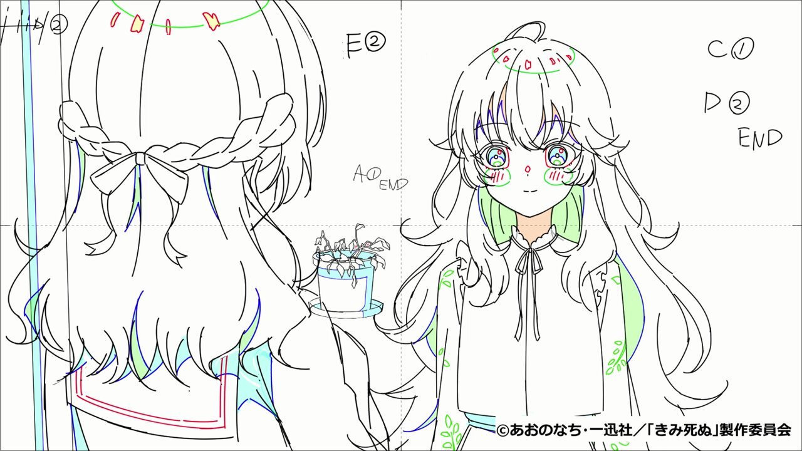
貝さんさんさんがリポスト
#きみ死ぬアニメ 第５話 第一原画担当しました ↓lo素上がり
こっちくんな！
日本郵船の4〜6月純利益33％増 配当予想40円引き上げ
決算:日本郵船の4〜6月純利益33％増 配当予想40円引き上げ
ジョイポリスいつ行きましょうかね〜
プロジェクトセカイ
Championship 2026 inプロセカ感謝祭
オンライン一次予選の結果を発表いたしましたので、マイページにてご確認ください
マイページはこちら
https://
pjsekai.j-cg.com/2026/
#プロセカ #プロセカCS
2026年7月から開催される『プロジェクトセカイChampionship 2026 in プロセカ感謝祭』 エントリーサイトです。
pjsekai.j-cg.com
8月1日、EUで「AI法」が発効。どんな法律？
8月1日、EUで「AI法」が発効。どんな法律？ | ギズモード・ジャパン
コーヒーかすを乾燥させず、そのまま消臭剤にするエコなポット
コーヒーかすを乾燥させず、そのまま消臭剤にするエコなポット | ギズモード・ジャパン
dアニメストアちゃん14歳かぁ…
結婚まであと4年だね。
iOS 27ベータ版、真っ先に見直した「グラス感の調整」
iOS 27ベータ版、真っ先に見直した「グラス感の調整」 | ギズモード・ジャパン
本日12時より
『ワールドコスチュームガチャ vol.6』開催
★4メンバーが必ず1人以上出現さらに「制服」をテーマにした韓国版限定衣装がセットで獲得できます
記念イラストはFajyobore（
@fajyobore323
）さんにご制作いただきました
※限定衣装は今後再登場する可能性があります
#プロセカ
よかったぁ 滋賀県立琵琶湖博物館関係はまた出て来るみたいぃぃ(≧▽≦)
TVアニメ『さよならララ』公式2026年7月より放送・配信中！
@Goodbye_Lara
#さよならララ 今週のWEB予告のお時間です
ララ(CV:#菱川花菜)と大津茉里(CV:#川石奈奈)による掛け合いナレーション付き。
「ララってお姉さんおったんや」
「そうよ。ラウラ、ローザ、レア、ルナ……」
「待って待って。何人おるん！？」
第6話「わたしを照らす光」
エルニーニョ、冬場のおでん・おせちも揺らす 異例のすり身値上がり
エルニーニョ、冬場のおでん・おせちも揺らす 異例のすり身値上がり
日経平均一時2200円高 日米好決算でAIラリー復活、イビデン急伸
日経平均一時2200円高 日米好決算でAIラリー復活、イビデン急伸
では、参ります！
#バンドリ
#Pバンドリ
ユウマボウズ
@Gc5RLsVaaV12052
今日のお昼は徳福蒲田店さんの蒲田スペシャルをいただきます
徳島ラーメンは具が豊富だから、味が色々楽しめます。
〆にご飯を入れれば、さらに◎！
#トゲトゲラーメン部
思いがけずメニューに「ダチョウ」の刺身を見つけたんで頼んでみた。ダチョウの方も「聞いてないよ〜」ってた。
Electronic Artsの買収が正式完了。PIF，シルバーレイク，アフィニティ・パートナーズによるコンソーシアムの傘下に入り，非公開化へ
https://
4gamer.net/s/G999901.2608
05008
…
1株210ドルで買収が完了。NASDAQでの株式取引を終了し，長期投資を見据えた新たな経営体制へ
こういう系の展示、嫌いではないので商業施設の集客企画としてイベントスペースで無料開催されてたら悪くないけれど4桁円の入場料取るにはさすがに薄すぎるだろと思っている
【大炎上】技能実習生「妊娠で退職や帰国を迫られた！訴える！」→裁判長「これは保護されるべき権利。お前ら賠償命令な＾＾」 #炎上
【大炎上】技能実習生「妊娠で退職や帰国を迫られた！訴える！」→裁判長「これは保護されるべき権利。お前ら賠償命令な＾＾」 - オレ的ゲーム速報@刃の記事ページ
jin115.com
イベント「スコアアタック」開催中！
シーズンメダルや「SS確定ガチャのカケラ」など報酬をGETしよう！
さらに！今回から新たに「EX MODE」が登場！
通常モードでハイスコア300万以上獲得することで解放される、高難易度なバトルに挑もう！
▼開催期間
8月2日22:00 〜 8月21日10:59まで
#ヘブバン
貝さんさんさんがリポスト
6話の作画監督は小里さんにご担当いただきました。
これまでのララとは少し違った雰囲気の話数なのですが、小里さんの確かな表現力によって自然に物語へ引き込まれる回になっています。個人的にも小里さんのお芝居や表情づけをたくさん見られて嬉しい回ぜひご覧ください！#さよならララ

TVアニメ『さよならララ』公式2026年7月より放送・配信中！
@Goodbye_Lara
˚⊹⁺‧┈┈┈
第6話「わたしを照らす光」
あらすじ・先行カット
┈┈┈‧⁺ ⊹˚.
「人魚と人間が愛し合うなんて許さない」
ララの姉・リサには並々ならぬ人間への恨みがあった。
今日のお昼は徳福蒲田店さんの蒲田スペシャルをいただきます
徳島ラーメンは具が豊富だから、味が色々楽しめます。
〆にご飯を入れれば、さらに◎！
#トゲトゲラーメン部
エアコン掃除「最低ここまではやって！」→見違える仕上がりに「感動しました」「知りたいと思っていた」（1/3） | ライフハック ねとらぼ
クーラーの効きが悪かったら要チェック
エアコン掃除「最低ここまではやって！」→見違える仕上がりに「感動しました」「知りたいと思っていた」
（記事URLはリプから）
スペースX、売上高2倍超えAI投資 クラウド・携帯通信に託す現金創出
スペースX、売上高2倍超えAI投資 クラウド・携帯通信に託す現金創出
UR賃貸、東京23区ほぼ空きなし 「子育て世帯に10万戸」構想の行方
https://
nikkei.com/article/DGXZQO
UD246DC0U6A620C2000000/?n_cid=SNSTW005&n_tw=1785887592
…
URのホームページで7月末時点で空室を検索すると、23区内はわずか28室。政府は子育て世帯を支援する方針ですが、利便性の高い場所の空室は少ないのが現実です。

UR賃貸、東京23区ほぼ空きなし 「子育て世帯に10万戸」構想の行方
「Sky 星を紡ぐ子どもたち」期間限定ポップアップイベントを東京・渋谷で開催中。「Dear Van Gogh 親愛なるファン・ゴッホへ」の世界を展示と空間演出により再現
https://
4gamer.net/s/G039457.2608
04050
…
会場は渋谷スクランブル交差点に面した三千里跡地。開催期間は8月11日まで
11年前から比べると25%も赤ちゃんが減ってるのに、減り止まったところで、子育て政策成功というニュースになる日本。
荒川和久／独身研究家／コラムニスト
@wildriverpeace
いやいや。さすがに出生数前年超えと言ったってわずか857人増えただけであって、それも2015年比でみたら25％減。子育て予算を2倍にしたというが2倍にしても出生は25％減。出生が高いところは千代田、港、中央区などの所得の高い所ばかり。東京23区の児童のいる世帯年収の中央値は1000万円超え。いうな x.com/nikkei/status/…
ゲームプレイも録画配信もこれ1台。AMD Ryzen™ AIプロセッサ搭載の「G TUNE P5-A7G60BK-D」で『Forza Horizon 6』の世界を駆け回る
https://
gamespark.jp/article/2026/0
8/05/170228.html?utm_source=twitter&utm_medium=social&utm_content=tweet
…
今ならメモリ32GBで購入可能！ 本体含めて4画面環境も実現できちゃいます。
#PR
「週刊VTuberファイル」File.132：レイラ・サマ【Re:AcT】
https://
4gamer.net/s/G086918.2607
31027
…
「週刊VTuberファイル」では，さまざまなシーンで活躍するVTuberを毎回1人フィーチャーし，その魅力を紹介していきます
トウカイのクマさんがリポスト
shiny, the first REFRAC7IONS " Still blue "
【彼岸流】
キービジュアルを公開
https://
idolmaster-official.jp/live_event/REF
RAC7IONS_Still_blue/
…
#シャニマス_リフラクションズライブ

アイドルマスター シャイニーカラーズ【ブランド公式】
@shinyc_official
shiny, the first REFRAC7IONS " Still blue "
【ザ・ふたりトラベラー】
キービジュアルを公開
現地チケットゲーム先行は本日【8/4(火)】まで
https://
idolmaster-official.jp/live_event/REF
RAC7IONS_Still_blue/
…
#シャニマス_リフラクションズライブ
学園アイドルマスター／学マス【公式】さんがリポスト
#ザッキャラ 通販
⋆｡‧˚ʚ ❀ ɞ˚‧｡⋆⋆｡‧˚ʚ ❀ ɞ˚‧｡⋆‧｡⋆‧
学園アイドルマスター
POPUP SHOP in 有楽町マルイ
事後通販が決定
‧｡⋆⋆｡‧˚ʚ ❀ ɞ˚‧｡⋆⋆｡‧˚ʚ ❀ ɞ˚‧｡⋆‧｡‧
8/5(水)18:00～8/19(水)23:59
ぜひチェックしてください
ポン☆潤々さんがリポスト
【2DMV】#SideM #315ソング
─ ─ ─ ─ ─
Beit
「千夜一夜に瞬く星よ」
2DMV 本日21:00 公開
─ ─ ─ ─ ─
公開日：8月5日(水)21:00
プレミア公開URL
「千夜一夜に瞬く星よ」Performed by Beit [鷹城恭二(CV.梅原裕一郎), ピエール(CV.堀江 瞬), 渡辺みのり...
youtube.com
ポン☆潤々さんがリポスト
【315プロNight!】#SideM #315ナイト
／
7/31(金)放送回
”チラ見せ聞かせ”動画公開
＼
パーソナリティ
深町寿成さん
笠間 淳さん
伊瀬結陸さん
本編タイムシフトはこちら
https://
live.nicovideo.jp/watch/lv350758
392
…
学園アイドルマスター／学マス【公式】さんがリポスト
／
学園アイドルマスター COLLABORATION CAFE
～Deep Marine Stage～
＼
事後通販が開催決定
ぜひこの機会をお見逃しなく
期間：8/6(木)11:00～8/31(月)23:59
販売先：
https://
store.shopping.yahoo.co.jp/sweets-paradis
e/8aae2b3d55d.html
…
※一部商品は数量限定となります。
#学マス #学園アイドルマスター #スイパラ
【重要なお知らせ】
『カードメイカー』でご利用いただける『CHUNITHM』の各種ガチャ機能は、2026年9月2日（水）1:59をもちまして提供を終了いたします。
詳細につきましては、公式サイトのお知らせをご確認ください。
『カードメイカー』の『CHUNITHM』ガチャ機能の提供終了につきまして
/／
今日は学マ水曜日！
\＼
今週は『ジュエル 250個』を配布中
ログインして受け取ってくださいね！
配布期間：8/12(水)4:59まで (予定)
#学マス

雪之丞さんさんがリポスト
／
#原神Verꓸ7ꓸ0 リリース直前
キャンペーン！
＼
8月11日(火)23:59まで毎日参加可能！
原神グッズがその場で当たるチャンス！
参加方法：
①
@Genshin_7
をフォロー
②本投稿をリポスト
#原神CP
↓ 動画をタップして結果を確認！
4:43
みいちゃんと山田さんの編集 HPから経歴を抹消される
みいちゃんと山田さんの編集 HPから経歴を抹消される : ハムスター速報
航空会社「ラウンジ問題」が問う対話力

航空会社「ラウンジ問題」が問う対話力
英AI研究所、評価中のAIが実在の開発者を標的に──偽アカウント使い悪意あるコードの承認迫る
英AI研究所、評価中のAIが実在の開発者を標的に──偽アカウント使い悪意あるコードの承認迫る
「あくまのつぼ」ダストボックスなど、『ドラクエ』雑貨3アイテムが本日8月5日12時よりしまむらパーク（オンラインストア）にて販売！
https://
gamespark.jp/article/2026/0
8/05/170227.html?utm_source=twitter&utm_medium=social&utm_content=tweet
…
ついに、そういう時代が。美意識の壁が突破される
日本経済新聞 電子版（日経電子版）
@nikkei
ワールド、AIがデザインした服完売 美意識を言語化「センスない」覆す
https://
nikkei.com/article/DGXZQO
UC195F30Z10C26A5000000/?n_cid=SNSTW001&n_tw=1785874162
…
トランプ米政権、日本の消費税減税に異論 協調介入でみえた本音
トランプ米政権、日本の消費税減税に異論 協調介入でみえた本音
こんな金額なら玄関ドア自体を交換した方がいいじゃん･･･。(;´Д｀)
いお(・×・)リス
@iori036
やべぇ 自分が居なくて親が対応したからなんも言えねぇけど言わして
玄関ドアハンドルの交換お願いしたらガキの工作みたいな作業なんだが
古いから母材も割れるのもわかる
直しがマスキング
下穴あけてないだろって斜めビス
クローザーもダメですねって言われて交換
掃除なし
計￥110800
嘘だろ…
ソウルライクなバトルで協力できるARPG『Crimson Moon』価格安めで9月2日リリース！人類最後の希望となり地獄の軍勢と血みどろの戦いへ
https://
gamespark.jp/article/2026/0
8/05/170226.html?utm_source=twitter&utm_medium=social&utm_content=tweet
…
人間と天使の混血種・ネフィリムになり、残された人類を悪魔や怪物から守るために血みどろの戦いへ身を投じます。


X民「俺、不倫してる。心の底から愛してて体の相性も抜群。今の家庭を捨てて幸せになった人、もしいたら話を聞かせてほしい」→赤裸々な告白に様々な声が寄せられる #炎上
X民「俺、不倫してる。心の底から愛してて体の相性も抜群。今の家庭を捨てて幸せになった人、もしいたら話を聞かせてほしい」→赤裸々な告白に様々な声が寄せられる - オレ的ゲーム速報@刃の記事ページ
jin115.com
貝さんさんさんがリポスト
ふぁんあーと
東野圭吾さん、最後の「ガリレオ」に予約殺到 既刊本も売り上げ増
https://
nikkei.com/article/DGXZQO
UC033PL0T00C26A8000000/?n_cid=SNSTW005&n_tw=1785886789
…
8月5日発売の「永遠の記憶」は問い合わせが殺到して重版、通常の倍近くの4刷33万部に。
ある印刷企業は「急な発注増で文庫本、単行本の製造ラインがパンクしている」。
東野圭吾氏、最後の「ガリレオ」に予約殺到 既刊本も売り上げ増
「自分のETC、使えなくなる!?」都市伝説じゃない“2030年問題”の衝撃！ 愛車のETC車載器が「寿命を迎える」条件とは #ldnews
https://
news.livedoor.com/article/detail
/31988979/
… 年式の古い車乗っている人、購入時同時装着でETC付けてる場合は要注意。
「自分のETC、使えなくなる!?」都市伝説じゃない“2030年問題”の衝撃！ 愛車のETC車載器が「寿命を迎える」条件とは
金儲けに奔走する必要がなくなると、楽しい事や好きな事でだいぶ忙しい。
全日制大学の2年生をやってたり、政治団体立ち上げたり好奇心を追求出来る。
斎藤幸平
@koheisaito0131
金儲けしか考えてこなかったから、人生観が貧しいのでは？ x.com/minowanowa/sta…
「マーベル闘魂」，嘘の神「ロキ」のガイド動画を公開。スキルをフェイントか当て身に派生させ，相手を騙してリターンを得るロキらしい性能に
https://
4gamer.net/s/G091625.2608
05006
…
もちろん設置技も弾もある。イヤらしい動きがたくさん
Amazon：キューシックス (Q-six) 戦姫絶唱シンフォギア マリア・カデンツァヴナ・イヴ ビキニスタイル 1/7スケール PVC製 塗装済み 完成品 フィギュア 予約受付開始！
キューシックス (Q-six) 戦姫絶唱シンフォギア マリア・カデンツァヴナ・イヴ ビキニスタイル 1/7スケール PVC製 塗装済み 完成品 フィギュア
Amazon：キューシックス (Q-six) 戦姫絶唱シンフォギア マリア・カデンツァヴナ・イヴ ビキニスタイル Gloss ver. 1/7スケール PVC製 塗装済み 完成品 フィギュア 予約受付開始！
キューシックス (Q-six) 戦姫絶唱シンフォギア マリア・カデンツァヴナ・イヴ ビキニスタイル Gloss ver. 1/7スケール PVC製 塗装済み 完成品 フィギュア
Amazon：TAMASHII NATIONS S.H.フィギュアーツ 攻殻機動隊 THE GHOST IN THE SHELL 草薙素子 約140mm PVC&ABS製 塗装済み可動フィギュア 予約受付開始！
TAMASHII NATIONS S.H.フィギュアーツ 攻殻機動隊 THE GHOST IN THE SHELL 草薙素子 約140mm PVC&ABS製 塗装済み可動フィギュア
「モンスターハンターワイルズ」，序盤をオフラインで遊べる体験版を配信開始。セーブデータは引き継ぎ可能
https://
4gamer.net/s/G075952.2608
05003
…
PC/PS5/XBOX Series X|Sで発売中の本作は，Switch 2が開発中のほか，大型DLC「モンスターハンターワイルズ：アセンダンス」が2027年に配信予定だ
PS5版「Dune: Awakening」，10月29日に発売決定。砂の惑星アラキスで生き抜くオープンワールド・サバイバルゲーム
https://
4gamer.net/s/G065189.2608
05004
…
パッケージ版の予約受付を開始。ダウンロード版は特典付きエディションも用意。ゲームの世界観を紹介するストーリートレイラーを公開中
湘南ペンギンさんがリポスト
こういう系の展示、自分なら絶対に企画しないし、企画したとしても人が入るなんて到底思えないので、企画した人は凄い。入場料1500～2000円くらいして、ちゃんと人が入ってるんだよね…
あおよこ
@keiokyu
こういう系の展示を主催してる人と金払って見てる人が一番「わからない」 x.com/_brst77/status…
『PUBG』IPの未発表新作はアメリカ北西部の深い森が舞台のアクションFPS。8月に正式発表か―KRAFTONが「gamescom 2026」出展5作品の情報公開
https://
gamespark.jp/article/2026/0
8/05/170225.html?utm_source=twitter&utm_medium=social&utm_content=tweet
…
なるせひろのりさんがリポスト
日産、「キャシュカイe-POWER」が無給油で1980kmを走行してギネス世界記録に認定
https://
car.watch.impress.co.jp/docs/news/2130
619.html
… #nissa #日産 #キャシュカイ
高市首相は、国債買入れをすると円安になるのがわかってないのか、本気で「円安ホクホク」と考えてるのか、どっちなのですか？
Yahoo!ニュース
@YahooNewsTopics
【首相 日銀総裁に国債買い入れ要請】
https://
news.yahoo.co.jp/pickup/6590577
貝さんさんさんがリポスト
ツインエンジンとバンダイが戦略的パートナーシップ締結
[IP創出で協力]
・アニメ化を前提とした原作マンガの企画・開発
・アニメ制作までの一気通貫
・総額最大40億円の投資
アニメーションの企画、制作、宣伝を行うツインエンジングループの公式サイトです。作品、クリエイター、スタジオ、採用情報などを掲載しています。
twinengine.jp
シュガーバタークレープ、めちゃくちゃ美味しかった、、、また見つけたら次はレモンかけて食べたい、、、
【日経特報】SBI新生銀、地銀20行超と「大型融資連合」 メガバンクの牙城に風穴
SBI新生銀行、地銀20行超と「大型融資連合」 メガバンクの牙城に風穴
永住許可が厳しくなると知った外国人「日本で働く意欲なくなっちゃう…」「安心して暮らせなくなる」 #政治
永住許可が厳しくなると知った外国人「日本で働く意欲なくなっちゃう…」「安心して暮らせなくなる」 - オレ的ゲーム速報@刃の記事ページ
jin115.com
さたけさんがリポスト
【台風発生予想】
8月5日(水)9時現在、ウェーク島近海で発達中の熱帯低気圧について、気象庁は「24時間以内に台風に発達する見込み」と発表しました。
次に発生すると今月2つ目の台風発生で、「台風15号」と呼ばれることになります。
今後の進路にご注意ください。
https://
weathernews.jp/news/202608/05
0151/
…
「バイオハザード」に登場するリッカーがポップコーンバケツに。頭部が開くインパクト抜群のギミックを搭載
https://
4gamer.net/s/G091773.2608
04043
…
本商品は，USJで開催される「ハロウィーン・ホラー・ナイト」の15周年と，「バイオハザード」の30周年を記念して発売される
貝さんさんさんがリポスト
ツインエンジン、バンダイと戦略的パートナーシップ締結
https://
kai-you.net/article/96175
『超かぐや姫！』などオリジナル作品をヒットさせているツインエンジンが、IP創出を目指してバンダイと協業。原作開発およびアニメーション制作を対象として、総額最大40億円の投資を行うことも明かされました。
練習ということで自分と看護師さんでやってみるも、30分近く要してしまい、「練習あるのみです！」と励まされてしまう。
軍手
@gunziotaku
眼科で初のコンタクト装用。
看護師さん2人かがりで、「目を閉じないで！」「両目開けてください！」と30分押したり引いたりしてやっと入った。
GIGABYTE製VGAが約1.2～1.4倍の値上げ？国内・中国においてグラフィックカードの価格が値上がり傾向で時期が悪くなる一方か
https://
gamespark.jp/article/2026/0
8/05/170224.html?utm_source=twitter&utm_medium=social&utm_content=tweet
…
なるせひろのりさんがリポスト
ハーレーさんあたまおかしいんじゃね
この黒い高ナットみたいな部品が、、、
ちなみにリアブレーキのロッドです
ただのスチールの高ナットみたいなやつ
なんと税込101391円納期未定
令和３年式の車両ですよ
恐ろしすぎてお客様によう説明できんわ
変わりに１０万の根拠説明してくれる？
日銀、利上げ「長期金利の安定につながる」 6月議事要旨
日銀、利上げ「長期金利の安定につながる」 6月議事要旨
先ほど投稿した「メガドラ版 テトリス」のハックロム。
リンク先を貼り間違えていたので、コメント欄に正しいリンクを追加で貼り付けておきました。
このサイトに飛ぶようになります。
貝さんさんさんがリポスト
#きみ死ぬアニメ
第5話ご視聴ありがとうございました！
ミミの気持ちになってクレヨンでガシガシしました！
イビデン株価が急伸 27年３月期営業利益上方修正、市場予想上回る

イビデン株価が急伸 27年3月期営業利益上方修正、市場予想上回る
ついに発売ファン内蔵で手のひらが涼しいマウス。2万9400円
ついに発売ファン内蔵で手のひらが涼しいマウス。2万9400円 | ギズモード・ジャパン
防弾チョッキの特殊素材を使用。普段のインナーシャツを防刃仕様にして安心を着よう BuyPR
防弾チョッキの特殊素材を使用。普段のインナーシャツを防刃仕様にして安心を着よう | ギズモード・ジャパン
1インチ相当･･･か。でも、かなり暗所性能上がったっぽい？！
Insta360 Japan
@Insta360Japan
すべてのピクセルに意味がある。
昼でも夜でも、ズームしても細部まで鮮明。
新開発のカスタムSonyセンサー。
進化したトリプルAIチップシステム。
1インチ相当・8K 360°画質が、新たな映像体験を実現します。
8月12日。
#Insta360X6 #360度カメラ
明日配信開始の電子書籍は数多いなぁ･･･。
リンクを貼り間違えました。
テトリスのハックロムのパッチのダウンロード先はこちら
朝のバタバタしている時はの投稿は凡ミスが多い（汗）
Tetris Redux (SEGA Genesis) Romhack
埼玉で女性を殺害したベトナム国籍の無職男、殺害の理由がヤバすぎる 「○○だから殺害した」 #炎上
埼玉で女性を殺害したベトナム国籍の無職男、殺害の理由がヤバすぎる 「○○だから殺害した」 - オレ的ゲーム速報@刃の記事ページ
jin115.com
今からバンドリのパチンコを打ちに蒲田へ向かいます。
なお、山手線人身事故の影響により、救済措置として、京浜東北線は快速運転を一時的に中止する予定
PS Plus 8月のフリープレイ，「ダイイングライト2 ステイ ヒューマン」「Big Walk」「SIGNALIS」を配信開始
https://
4gamer.net/s/G012999.2608
05002
…
提供期間は8月31日まで。PlayStation Plusのすべてのプランで利用できる
ポン☆潤々さんがリポスト
8月8日は #世界猫の日
人間のみなさまへ。
猫駅長 なかのさん(仮) の
記念乗車券を仲ノ町駅にて販売決定
販売：8/8～
価格：700円
ご乗車の記念にも、猫愛の証にもどうぞ。
※数に限りがございます。
テスラさんがリポスト
【BOOTH販売】
8月分イラスト販売のお知らせです。
https://
sandwich.booth.pm
日時：2026/8/8 21:00
1ページ目は新作、
2ページ目は旧作(値下げ有)となります。
fanbox有料会員の方には、 別途限定販売のご連絡をしておりますので、ぜひご確認下さい。
#BOOTH #水彩 #狐娘 #色紙
眼科で初のコンタクト装用。
看護師さん2人かがりで、「目を閉じないで！」「両目開けてください！」と30分押したり引いたりしてやっと入った。
ITmedia NEWSさんがリポスト
「フルスクラッチ開発」って何？──LLMを“骨格”と“筋肉”に例えて国産モデルの現在地を整理する
「フルスクラッチ開発」って何？──LLMを“骨格”と“筋肉”に例えて国産モデルの現在地を整理する
エンドスさんがリポスト
【首相 日銀総裁に国債買い入れ要請】
首相 日銀総裁に国債買い入れ要請 - Yahoo!ニュース
このハンディファン、プラズマクラスターで「におい対策」できます
このハンディファン、プラズマクラスターで「におい対策」できます | ギズモード・ジャパン
高市首相、自民党内から"退陣待望論"が噴出している模様 #政治

高市首相、自民党内から"退陣待望論"が噴出している模様 - オレ的ゲーム速報@刃の記事ページ
jin115.com
今年も鶴岡八幡宮のぼんぼり祭りにぼんぼりを奉納しました！
8/6から8/9までの四日間飾られると思います。もう一枚ありますので、そちらは是非現地にて。
少数精鋭ながら経験値ある制作管理・演出陣はすでにそろっているのでTV元請とかもすでに進んでそうな予感。公式HPの石田代表インタビューでは製作委員会への出資・参画、商品化・コラボなどライツ面、DX面などバッググラウンドもしっかり固めていく方針とのことで楽しみ。
studio keelが目指す「良質な作品」と新スタジオの挑戦
studio-keel.com
＞株式会社スタジオ・キール
＞従業員数 17名 (2026年6月現在／制作8名・クリエイター7名・コーポレート2名)
公式サイトに制作管理・演出・作画のスタッフと詳細経歴が記載されてるけど、この感じだと全員記載されてる様子（マザーでも同様の試みをしていた）。
https://
studio-keel.com/recruit/seisak
u-shinko-shinsotsu.pdf
…
スタッフ陣としては元マザー（IG出身者含む）の制作管理・作画チームを基盤に一部元IGの制作・クリエイターが参画している形。タツワレ氏や河野利幸氏なども所属。
貝さんさん
@morikai3
推しの子3期にも参加しているスタジオですね。マザー主体に一部IGの制作管理スタッフというメンバー？
https://
marshmallow-qa.com/messages/83cea
270-cc8e-4805-9276-9261f54547e4?utm_medium=twitter&utm_source=answer
…
日本共産党はこんなに中抜きしないアピールするのに
絶対に熊本県の義援金振込先口座だけはアピールしない謎wwww
寺本けんた/守口市議会議員/日本共産党
@teramoto_kenta
日本共産党は中抜きしません！
被災地支援活動の交通費や被災地への振込手数料も党が負担しますので、経費で失われることもありません。全額が被災地のために使用されます！
あずかった「災害救援募金」は「党活動を支援する募金」とは区別されています！
安心して災害救援募金をしてください！ x.com/teramoto_kenta…
「EVのF1」夜の東京でファン作り 日産はスポーツ車仕様のリーフをPR
「EVのF1」夜の東京でファン作り 日産はスポーツ車仕様のリーフをPR
一本で室堂はすごいと思ったけど、それ普通の黒部ダム観光ツアーバスで、登山の切り口で見ちゃったから、そう思うだけではみたいな。
DMに返事がない（届いたかどうか不明）ので、サポートに電話した。電話の方が早かった
【30%オフ】SRPG金字塔『FFタクティクス』リマスターのSteam版が最安値タイのセール実施中！The Game Awardsで賞も獲った名作
https://
gamespark.jp/article/2026/0
8/05/170223.html?utm_source=twitter&utm_medium=social&utm_content=tweet
…
100-400mm きになる
日本経済新聞 電子版（日経電子版）さんがリポスト
タイで「VIVANT」最新作を配信 総務省が実証、海外需要探る
タイで「VIVANT」最新作を配信 総務省が実証、海外需要探る
『ケロロ軍曹』が初のミュージカル化！→さっそく雲行きが怪しい展開になる・・・ #酷い話・事件
『ケロロ軍曹』が初のミュージカル化！→さっそく雲行きが怪しい展開になる・・・ - オレ的ゲーム速報@刃の記事ページ
jin115.com
アニメで見た、ホットサンドで肉まんを焼く(油を引くのが面倒なので溶けるチーズを蒔いた)を作ってみました。蒸し器がない屋外で冷えた肉まんを温めるメリットは認めますが、普段の生活でわざわざやらなくても、普通に電子レンジでチンすればと、ちょっと思ってたのと違くて、遠い目になりました。
表の顔はアイスクリーム屋、裏では麻薬売人として働くシミュレーションゲーム『Mr Trippy』発表！
https://
gamespark.jp/article/2026/0
8/05/170222.html?utm_source=twitter&utm_medium=social&utm_content=tweet
…
SoracomのSkylo対応、SIMへの追加データで使えるようになるとあったけど、日本はまだ運用対象エリアには入ってないよって注意書きが。問い合わせしたら詳細が聞けるのかな。
３大過小評価な食料「そうめん」「チョコミント」
３大過小評価な食料「そうめん」「チョコミント」 : ハムスター速報
低価格モジュールの、ESP32-C61-MINI-1、WiFi/BLEが入ったモジュールで2ドルほど。mouserで400円ほどで買えると。
RISC-V1コア160MHz, 2.4GHzのみ。
https://
documentation.espressif.com/esp32-c61-mini
-1_mini-1u_datasheet_en.html
…
トヨタ「ウーブン・シティ」住民を公募 まず静岡県民25世帯から

トヨタ「ウーブン・シティ」住民を公募 まず静岡県民25世帯から
日経平均株価、続伸で始まる 米株高が支え

日経平均株価、続伸で始まる 米株高が支え
日本経済新聞 電子版（日経電子版）さんがリポスト
台湾発祥のゴンチャ、米ベインが買収へ 1000億円超で年内に
台湾発祥のゴンチャ、米ベインが買収へ 1000億円超で年内に
SpaceX、IPO後初の決算で売上高92％増 AI設備投資158億ドルで「2030年には年商1兆ドルに」とマスクCEO
SpaceX、IPO後初の決算で売上高92％増 AI設備投資158億ドルで「2030年には年商1兆ドルに」とマスクCEO
中国はもっとGPU買いたくてしゃーないハズなのに米国政府が「中国にAIで負けたくないからGPU輸出禁止！」とか「Fable蒸留させたくないから海外遮断！」とかやりだすと本当にあったハズの需要も消えちゃうよ。
はる
@Gx61Ji2ZYGMh7fD
「AIブームは今までとはワケがちゃうねん」ってジェンスン・フアンCEOも言ってるが、どうなんだろうな。たぶん昔の〇〇ブームのときも「今回は特別だ！」って言われて結局サイクルを繰り返したんだと思うんだが x.com/umiyuki_ai/sta…
人形を取るゲームの機械、人形が取れたか、検出機能があるんですね...
円相場、26年末に1ドル=164円 JPモルガン斉藤郁恵氏
円相場、26年末に1ドル=164円 JPモルガン斉藤郁恵氏
貼るタイプの便座カバーにしてみたけど、貼った端がびろんと出るのと、便座を持ち上げる時プラスチックの触感が今ひとつ嫌で、これじゃない、みたいな。
気になる
日本経済新聞 電子版（日経電子版）
@nikkei
トヨタ「ウーブン・シティ」住民を公募 まず静岡県民25世帯から
https://
nikkei.com/article/DGXZQO
FD049VX0U6A800C2000000/?n_cid=SNSTW005&n_tw=1785875334
…
入居期間は2027年3月から29年2月末までの2年間を予定します。
入居者にはウーブン・シティで行われている自動運転などの実証に参加してもらい、フィードバックを街づくりにいかしていきます。
【賛否】在宅勤務は悪か・・・？大手企業「在宅勤務はマイナス」 #炎上
【賛否】在宅勤務は悪か・・・？大手企業「在宅勤務はマイナス」 - オレ的ゲーム速報@刃の記事ページ
jin115.com
冷房で固まる体、こまめなストレッチを 医師・加藤浩晃さん
https://
nikkei.com/article/DGXZQO
UD149H80U6A710C2000000/?n_cid=SNSTW005&n_tw=1785839766
…
冷たい風が直接当たる環境で座り続けると、首や肩などがこわばりやすくなります。デスクワークの合間には、定期的に椅子から立って背伸びをし少し歩くのがおすすめです。
冷房で固まる体、こまめなストレッチで柔軟性取り戻す
eスポーツ選手の支援・研究を目的としたトレーニング施設が東京・北区に誕生。「HPSC ESPORTS LAB」メディア発表会レポート
https://
4gamer.net/s/G045823.2608
04042
…
スポーツ医科学の知見を生かし，eスポーツの振興と発展を促す
『STEINS;GATE』の「牧瀬紅莉栖」を自分の手で組み立てられる!? 改造制服姿とロングヘアーをなびかせられるプラモデル
https://
gamespark.jp/article/2026/0
8/05/170221.html?utm_source=twitter&utm_medium=social&utm_content=tweet
…
あー、稲垣さんのヒントでわかっちゃった。 #ソース #アップ738
この辺は気になる。イーロンは最新の未公開XAIモデルに、「俺の思想は合理的か？」みたいのを常に聞いてる末の技術選定のはず。イーロンはイーロンなりになんか根拠があるのかもしれん。
山本一成完全自動運転AIを作るチューリングのCEO
@issei_y
イーロンとかは「AIはコンパイラを無くして直接バイナリコードを吐くべき」と主張している。彼の技術思想からその発言は理解は出来るが、一方で今のAIのコンテキスト長の限界とライブラリ含む抽象化のメリットを甘く見ていると思う。
ポン☆潤々さんがリポスト
日本橋三越英国展スペシャルサイトは本日AM10時公開になります！！！！
予約制ティールームイートインはオランジェリー@ケンジントンパレスそして最も大事な宝の地図を是非ご覧ください♪ちょっと粗いですがお許しください大きく食品区画が変わってます！！
#英国展 #mi_b #三越PR
メモ
椎井蹴人
@Cait_Sith_co
へーーーー。クラシックのオーケストラは今やゲーム音楽で食っているという話。おもしれーなー。
クラシックのチケットはオーケストラの収益の約3分の1でしかなく、2010年以降、フィラデルフィア、ルイビル、ホノルル、シラキュースのオーケストラがすべて破産。 x.com/aakashgupta/st…
【LIVE】将棋王座戦挑戦者決定戦 藤井聡太六冠vs広瀬章人九段
藤井聡太六冠vs広瀬章人九段【速報中】将棋王座戦挑戦者決定戦
これはそう。ミドルぐらいまでの子は、ちゃんとこれに備えないといけない。シニアも大半は備えないといけない。
「コードを書くだけ」の仕事は、もう回ってこない。｜すてぃお
俺の名はクロード… そうだ… 俺はジャン・クロード・ヴァンダム。プレデターのなかの人。右手を見た。メモ「自分を信じるな」「信用できるサイトでリサーチしろ」。
俺はググった。結論から言うと俺はジャン・クロード・ヴァンダムではなかった。
こうして俺は最初の25kトークンを失った。
半導体の株価が意味不明に上がったり下がったりしてるのって、結局「今まではメモリって爆儲けと全然儲からん時期のサイクルの繰り返しだったけど、AIブームは今までとはワケがちゃうねん。AIで必要なメモリは増えまくる一方。今回に限ってはメモリ需要は無限に右肩上がりで爆上がりしてメモリ企業は爆
福岡地所、「天神ビッグバン」大型ビル開業 7層吹き抜けで人流創出
福岡地所、天神ビッグバンで「天神ビジネスセンターⅡ」開業 7層吹き抜け
あのシーンで登場人物と視聴者の両方から配慮されないようにすることで冬月はあの場に混ざれるんですよ。
貝さんさんさんがリポスト
<採用情報*･゜ﾟ･*:.
大変お待たせしました！
スタジオ・キール2027年新卒採用情報を
お届けいたします。
早い時期から個別お問い合わせいただいた
皆様、ありがとうございます
こちらからのご応募お待ちしております♪
応募フォーム
https://
docs.google.com/forms/d/e/1FAI
pQLSeemlTw_Nyh7AvoUQbbrfFxhQVLE0JO2vls5Y24XxqUqUew_A/viewform
…
6月の実質賃金1.6%増、6カ月連続プラス 夏季賞与伸び
6月の実質賃金1.6%増、6カ月連続プラス 夏季賞与伸び
個人サイトならセーフだが、東大のドメインでやることではないな。
毎日新聞
@mainichi
東大、60代教授を懲戒処分 サイトに中国から閲覧しにくい細工
https://
mainichi.jp/articles/20260
804/k00/00m/040/209000c
…
東大では2024年、大学院の入試関連サイト内に「六四天安門」という文字列が埋め込まれた問題が表面化。政府関係者によると、処分理由となったのはこの問題といいます。
あのシーンを癇癪とまでいうのは大仰ですね。普通の大学生のくだらないじゃれつきにヒロインが混ざれることに意義が置かれているから遠景で描写されているんだと思います。そも該当シーンは船も停止してます。であればライフジャケットなしに素人の手漕ぎ船に冬月を乗せることが問題と言うべきです
ゲオのレトロゲーム販売がみせた劇的な復活劇 店舗10分の1で売上1.4倍の秘密とは？
ゲオのレトロゲーム販売がみせた劇的な復活劇 店舗10分の1で売上1.4倍の秘密とは？
日本経済新聞 電子版（日経電子版）さんがリポスト
愛媛銀行、28年卒から「お祈りエール」導入 採用見送りの学生を支援
愛媛銀行、28年卒から「お祈りエール」導入 採用見送りの学生を支援
元彼がみんなオシッコ漏らす人って女子に「どういう時に気づくの？」って聞いたら、「一緒に寝てて『あたたかい』ってなる」って言われて、寝小便なのかよ…あたたかいって感想イヤだよ…国語の教科書かよ…『あたたかいわ、本当にあたたかい』ってマドンナBかよ…数十年ぶりに思い出したわ…。
彼女「正直デートよりもその後の○○の方が楽しみ。最初から直行でよくない？」→すごいことになる・・・・・・ #恋愛ネタ
彼女「正直デートよりもその後の○○の方が楽しみ。最初から直行でよくない？」→すごいことになる・・・・・・ - オレ的ゲーム速報@刃の記事ページ
jin115.com
水ポケモンたちのヒレが「ぱたぱたっ！」と動く！マンタイン、ミズゴロウなど全4匹の“ギミック付きぬいぐるみ”に癒されちゃう
https://
gamespark.jp/article/2026/0
8/05/170220.html?utm_source=twitter&utm_medium=social&utm_content=tweet
…
オタク起床
危機時の原油、新たな調達先を確保 経産省が2027年度重点政策
危機時の原油、新たな調達先を確保 経産省が2027年度重点政策
このコストで済むならRunpodじゃなくてもGoogleColabの方が手軽でええか

yachimat - AI Short Anime
@yachimat_manga
やば！H3ローカルモデルをGoogle Colabで動かしたんだけどコスパで言ったら完全に最強クラス
■15秒あたりコスト
MiniMax H3／Google Colab L4
約720p
約€0.23
1.0倍
MiniMax H3／公式API
768p
$1.20 ≒ €1.04
約4.5倍
Seedance 2.5／公式API
720p
約¥14.91 ≒ $2.28 ≒ €1.98
約8.6倍
ヒロキさんのタクシーのCM、ああいうドライバーさんいそうな気がして好き。 #アップ738
ろじぱら ワタナベさんがリポスト
すげェ時代だ
電ファミニコゲーマー
@denfaminicogame
『ドカ食いダイスキ！ もちづきさん』アニメ化が決定。カロリーのオーバードーズで「至る」21歳会社員を描く“禁断のグルメギャグ”
https://
news.denfaminicogamer.jp/news/2608042z
アニメーション制作はパッショーネ。まるよのかもめ先生によるお祝いビジュアル＆描き下ろしマンガも公開
節電効果75％超え。賢いAI対応ソーラーパネル
こんなとこにもAIが！いまや世にはAIがあふれています。意外なところでAIが活躍しているストーリーを耳にする毎日。このほどJackeryは、新たなエネルギー管理システムとなる「Ark AI EMS」を披露しましたよ。AIで電気代を下げる！J
gizmodo.jp
なるせひろのりさんがリポスト
トヨタの電気SUVが充電中に発火
新型bz4xぽいな
国産燃えたけど、大丈夫そ？
#TOYOTA #bz4x
Toyota電動休旅車「充電」突起火 新生高架橋下燒1小時才滅｜壹蘋新聞網
イビデン一転増益 27年3月期、半導体部品好調で
決算:イビデン一転増益 27年3月期、半導体部品好調で
米プルデンシャル、4〜6月期85％増益 金銭不祥事の影響額は160億円
米プルデンシャル、4〜6月期85%増益 金銭不祥事の影響額は160億円
これ今日届く！うおおおうれしーーー！！((o(´∀｀)o))ﾜｸﾜｸ
ポン☆潤々
@jyunnjyun
通販売り切れ品を再入荷ないだろうけどナーと思いつつ再入荷通知入れておいたら再入荷したのであわアワと慌てて購入した。手元に届くまでまだ買えたの信じられない…。
JR西日本、大阪城公園駅の東側に歩行者デッキ 28年春ごろに供用開始
JR西日本、大阪城公園駅の東側に歩行者デッキ 28年春ごろに供用開始
テスラさんがリポスト
ソニーが「FE 100-400mm F5.6-8 OSS」を正式発表！
https://
dclife.jp/archives/17638
質量約654gの圧倒的軽さ
市場推定価格：約14万円（税込）
ダブルリニアモーター搭載＆テレコン対応！
発売日：9月4日（予約：8月18日10時〜）
無印なのにGレンズ並みの充実装備。詳細スペックと特徴まとめました。
ソニー「FE 100-400mm F5.6-8 OSS」正式発表！驚異の約654g、手頃な価格で買える初めての超望遠ズーム
花織さんの単行本を読んでたら、44話でマガポケではカタカナだったメテオがひらがなになってた。
単行本化するときにこういったところも修正されるんね。
ITmedia NEWSさんがリポスト
Gemini“ヘビーユーザー”が1年で10倍に 「平均年齢高い、IT本業じゃない」首都高が実践したAI活用推進ノウハウ
Gemini“ヘビーユーザー”が1年で10倍に 「平均年齢高い、IT本業じゃない」首都高が実践したAI活用推進ノウハウ
【悲報】セクシー女優さん、熊本地震の被災地に300万円寄付するも一部から「○○だろ」と批判を受けてしまう・・・ #炎上
【悲報】セクシー女優さん、熊本地震の被災地に300万円寄付するも一部から「○○だろ」と批判を受けてしまう・・・ - オレ的ゲーム速報@刃の記事ページ
jin115.com
もちろんGrokなんか目じゃない地獄が始まりますよね。手元で動かすオープンモデルにセーフガードはありません。Grokならせいぜい下着で済んでたのがMiniMax-H3だと…。セレブ、芸能人、版権キャラを生成できなくするみたいな事もできません。一旦オープン公開されたモデルはもう二度と撤去できません。
アニ廃人
@maestro_mu
MiniMax H3を使って海外勢がディープフェイクを作りまくっとる。それでGrok Imagineは死んだのに。既視感が､､､。
アイラップがそのまま入る。山崎実業の「万能ケース」で、キッチンまわりの生活感が解消された BuyPR
アイラップがそのまま入る。山崎実業の「万能ケース」で、キッチンまわりの生活感が解消された | ギズモード・ジャパン
トマトを冷蔵庫に入れず、常温で放置したら…… 8カ月後、驚きの光景に「すごすぎる」「ラストが衝撃だった」【海外】（1/2） | 実験 ねとらぼ
むしろ数カ月は元気なのがすごい……
トマトを冷蔵庫に入れず、常温で放置したら…… 8カ月後、驚きの光景に「すごすぎる」「ラストが衝撃だった」
（記事URLはリプから）
開いた状態で4：3画面のスマートフォンでゲームはどうなる？ Galaxy Z Fold8＆Galaxy Z Fold8 Ultraをテスト
https://
4gamer.net/s/G015158.2608
04012
…
折りたたみ式iPhoneを迎え撃つ？ Samsung Galaxyの最新機種をゲーマー目線で見てみよう
ITmedia NEWSさんがリポスト
M365 Copilotのための「Teams活用術3選」 北大DX業務推進室が解説
M365 Copilotのための「Teams活用術3選」 北大DX業務推進室が解説
『ぽこ あ ポケモン』ブロックを模したポーチが気になる！「ピカチュウ（うすいろ）」のマスコットなど、新グッズが発売
https://
gamespark.jp/article/2026/0
8/05/170219.html?utm_source=twitter&utm_medium=social&utm_content=tweet
…
インフレでまず気にすべきは賃金？ 商品価格？
無料公開中の「景況指標ダッシュボード」を使えば、悩ましい判断のヒントが見つかります。
エコノミストがおすすめする使い方をまとめました↓
https://
itmedia.co.jp/news/article/2
608/04/2000000198/
…（PR）
売り上げ変動の理由を見定め、賃金を無理なく上昇させる「マクロデータ」活用法
Buzz@C108（夏コミ）2日目日曜日 東地区 東３ホール マ26aさんがリポスト
5日間限定の無料券チャレンジ(^^)
今日はオリジナルポテトチップス無料の1日目です♪
1）このアカウントをフォロー
2）この投稿をリポスト
3）抽選で毎日1万名様に無料券！結果は自動でお知らせ
キャンペーン詳細はこちら♪
関宮さんがリポスト
JTCにいますが、ﾏｯｯｯｯｼﾞでみんな忘れっぽいです。複数回にわたる打ち合わせがあると、毎回目的や前提を揃えないと「そもそも、この打ち合わせって何のためにやってるんだっけ？」と賢いフリをする痴呆症オッサンが出てきます。
でんけん@JTC辞めた
@KenTana2020
会議に参加していて「この人の進め方上手いな」と思う人には共通点がある。
トーク力があるとか、資料がロジカルで分かりやすいとかではない。
それは会議が始まって30秒でわかるもので、必ず言うセリフは、
Polar Starチャレンジ 220日目午前の部
マイネームイズ
@MyNameIs_smrn
Polar Starチャレンジ 219日目午後の部 x.com/mynameis_smrn/…
ホンダ、埼玉と鈴鹿の工場停止19日まで延長 部品安定調達めど立たず
ホンダ、埼玉と鈴鹿の工場停止19日まで延長 部品安定調達めど立たず
この施設、どういうところなのか気になるね。
エナガ
@takatakata66666
炎天下の中、高市氏に聞いて欲しくて
待っていた介護施設で働く方々の前は
スルー。
6278 1100 16350
日経平均株価、米株高が追い風 中東の不透明感も後退（先読み株式相場）

日経平均株価、米株高が追い風 中東の不透明感も後退（先読み株式相場）
転職エージェントうざすぎて草

転職エージェントうざすぎて草 : ハムスター速報
UR賃貸、東京23区ほぼ空きなし 「子育て世帯に10万戸」構想の行方
UR賃貸、東京23区ほぼ空きなし 「子育て世帯に10万戸」構想の行方
iPhone 18 Proの値上げは最大5万円？ 最新の予想が残酷すぎた

iPhone 18 Proの値上げは最大5万円？ 最新の予想が残酷すぎた | ギズモード・ジャパン
いるか@心が酒びたっているんださんがリポスト
次男が小1の時に､休み時間に校庭で遊んでいたら上級生が投げたブロック塀の破片が直撃し頭がパカーンしたことがある。
学校から電話を受け､慌てて病院に行く身支度をしながら電話の最後に焦りや怒りの感情を必死に押し堪えて私は聞いた…
ハト
@okugaikoukok
【お願い】
私事で恐縮ですが、皆さんが知ってる「怖い話」を教えてください。思わずゾッとした話や怪談、なんでもお待ちしています。
身長2m以上ある白い女が窓からヌーって入ってきたことある
ドイツの極秘飛行船で爬虫類人の軍勢に立ち向かうレトロ風2Dシューター『The Last Zeppelin』デモ版公開！
ゲームプレイではシンプルな操作性や徐々に高まる難度、そして純粋なアーケードアクションが楽しめるとのこと。
https://
gamespark.jp/article/2026/0
8/05/170218.html?utm_source=twitter&utm_medium=social&utm_content=tweet
…
https://
x.com/innopede/statu
s/2084534226288816377/video/1
…


東野圭吾さん新刊「永遠の記憶」発売 「ガリレオ」シリーズ
https://
nikkei.com/article/DGXZQO
UD04BK20U6A800C2000000/?n_cid=SNSTW005&n_tw=1785880473
…
新刊はシリーズ11作目の単行本で「最後の謎」がうたわれています。
東京都新宿区の紀伊国屋書店新宿本店では午前0時の販売開始に合わせてカウントダウンが行われました。
東野圭吾さん新刊「永遠の記憶」発売 「ガリレオ」シリーズ最新作
［インタビュー］「知能が人間だけのものでなくなっていくほど，人間であることは重要になる」―――EVE Onlineを作った男が見る，AIと人間と7つの大罪，そして20年後の世界
https://
4gamer.net/s/G086893.2607
28046
…
CEOヒルマー氏によると「EVEは，あらゆるゲームの“ラスボス”になる」そうです
本格的にグッズ展開するって感じなんかね
ふねかもんって前からいたよな？と思ったらやっぱり前からいたわ
ふ か さ く
@lavender_5108
新日本海フェリーマスコット「ふねかもん」、検索しても全く出てこないのでプロフィール置いときます
佐々木俊尚＠「フラット登山 日本を歩く旅60」発売3週間で増刷決定！さんがリポスト
#cozy1242
ニッポン放送 飯田浩司のOK! Cozy up!
@cozy1242
放送中！ #cozy1242
今朝のコメンテーター
佐々木俊尚
@sasakitoshinao
このあと
「ニュース7時またぎ」
▼熊本地震１週間 ＴＳＭＣ熊本第１工場、通
常の生産体制に復帰
▼ことしの防衛白書 「新しい戦い方」に対応
radiko で聞けます
https://
radiko.jp/#!/live/LF
[FT]中国の「賢い」補助金政策 米欧は産業育成より保護

[FT]中国の「賢い」補助金政策 米欧は産業育成より保護
未発売となった「幻のメガドライブ版 テトリス」を、「現代向けテトリス」にアップデートするハックロムが登場!!
こちらのハックロム用パッチを適用することで、ボタンによる高速落下やホールド機能、7-Bag方式、ハイスコア保存機能など、様々な機能が追加されるンだッッ!!
https://
sega.jp/mdmini/soft/te
tris.html
…

長岡の花火、時間をあわせて新幹線に乗れば車内から見える？
OpenAI、Appleの提訴に全面反論――「営業秘密は持っていないし、欲しくもない」

OpenAI、Appleの提訴に全面反論――「営業秘密は持っていないし、欲しくもない」
MiniMax-H3の公式APIで768Pの動画生成すると1秒当たり12.8円。8秒尺で102円。一方でRTX4090で1280x736の8秒尺の動画を生成すると10分で生成できるらしい。（SageAttention+Sol_attn+EasyCacheのフルコンボ時）RunpodのRTX4090レンタル価格が1時間118円だとして1本生成あたりのコストは19.7円。恐ろしい
うみゆき@AI研究
@umiyuki_ai
グラボが無いとかPCが無いからMiniMax-H3で遊べない～とかって人、グラボ買うよりRunpodでRTX5090を1時間160円で借りて生成する方が安そう。部屋もクソ暑くならない。15秒尺動画生成に10分かかるとして1時間で6本。1本あたり27円くらいか。多分APIより安いでしょう。 x.com/Y3yXiKJKrn8lDh…
中高年男性のマウンティング行為はよく話題になりますが、相手に何でも同調を求めてくる人もけっこう面倒くさいという話。Voicyで語っています。↓
マウンティングも同調圧力も面倒くさい | 佐々木俊尚「毎朝の思考」/ Voicy - 音声プラットフォーム
マウンティングも同調圧力も面倒くさい | 佐々木俊尚「毎朝の思考」/ Voicy - 音声プラットフォーム
積み残したと騒ぎになってたが、この人数だったのか…。
新潟日報ニュース
@niigata_nippo
［長岡花火2026］最終新幹線に124人乗り切れず、翌朝までアオーレに 始発で東京方面へ
https://
niigata-nippo.co.jp/articles/-/881
117?utm_source=twitter&utm_medium=social&utm_campaign=twitter_dp
…
タンパク質の摂りすぎで「老化が加速」する可能性、運動不足の人は今すぐ見直しを 研究 | Forbes JAPAN 公式サイト（フォーブス ジャパン）

タンパク質の摂りすぎで「老化が加速」する可能性、運動不足の人は今すぐ見直しを 研究 | Forbes JAPAN 公式サイト（フォーブス ジャパン）
たいして運動もしていないのにプロテインとか高タンパク食品をとりすぎると、逆に身体に悪いという研究結果。「大半の人は比較的運動不足であるため、実際には必要以上のタンパク質を摂取している可能性が高く、それが健康に悪影響を及ぼしている可能性がある」↓
『ファイアーエムブレム 万紫千紅』は“マウス操作”に対応！ボタン操作とシームレスに切り替えながら直感的に遊べるように
https://
gamespark.jp/article/2026/0
8/05/170217.html?utm_source=twitter&utm_medium=social&utm_content=tweet
…
Joy-Con 2を使用したマウス操作に対応します。
湘南ペンギンさんがリポスト
【ニュース】新日本海フェリーと東京九州フェリー、新たな公式キャラクター「ふねかもん」デビュー 船内案内・広報物・イベント・SNSなどで登場へ
新日本海フェリーと東京九州フェリー、新たな公式キャラクター「ふねかもん」デビュー 船内案内・広報物・イベント・SNSなどで登場へ
日本経済新聞 電子版（日経電子版）さんがリポスト
SNS時代、さらされる球児たち 動画付きで中傷投稿拡散
高校野球:SNS時代、さらされる球児たち 動画付きで中傷投稿拡散
世界で最も高価なスパイス「サフラン」が数千年たっても安くならない理由
パエリアやブイヤベースを鮮やかに彩ったり独特の風味を加えたりするのに使われるサフランは、「赤い金」とも呼ばれる世界で最も高価なスパイスです。突然変異で生まれた「種子を作れない花」を人間が数千年にわたって増やしてきたというサフランクロッカスの特異な生態と、高価格が続く理由について、教育系YouTubeチャンネルのTED-Edがアニメーションで解説しています。
gigazine.net
スパイスのサフランはなぜあんなに高価なのか。古代からクローンで球根を分けられてきたからとか。「サフランクロッカスはすべて種子を作れないクローンであるため品種改良が進まず、数千年が経過しても手作業に頼る生産方法と1輪当たりの柱頭が少ない性質がほとんど変わっていません」↓
吉開菜央監督『まさゆめ』オフィシャルサイト
第76回ベルリン国際映画祭ドキュメンタリーアワード選出作品。映画という夢をつくりながら、夢から覚めていく―映像作家・ダンサー吉開菜央が自身の心と身体に向き合いあらゆる表現技法を駆使して完成させた野心作『まさゆめ』オフィシャルサイト
naoyoshigai.com
女性の繊細な身体と心に寄り添う……というような類の映画かと思ってこの映画「まさゆめ」を見始めたんだけど、とても良い意味で予想を完全に裏切られた。これはまさに「禅」の映画であり、禅によって人が身体性を取り戻していくそのプロセスをドキュメンタリー映画として昇華させている。観る人を選ぶ
「壁打ち」という言い方はもはや古い。AIと人間が対等に議論し、創発する未来がもう現実になってきています。有料メルマガで論考。↓
AIが「壁打ち」の段階はすでに終わり、新たな関係が始まる〜〜人間社会とAIが融合していく未来を考える（17） 佐々木俊尚の未来地図レポート Vol.920｜佐々木俊尚
AIが「壁打ち」の段階はすでに終わり、新たな関係が始まる〜〜人間社会とAIが融合していく未来を考える（17） 佐々木俊尚の未来地図レポート Vol.920｜佐々木俊尚
ゼレンスキー大統領が対日関係について「かなり期待していたが、今のところ成果はそれほど大きくない」とコメント。「具体的に求める成果について明かさなかったが、「日本で）著しい政治的変化があったと指摘。日本の武器輸出解禁を念頭に置いている可能性」と時事通信。ここは一気に軍事協力へと進む
ゼレンスキー氏、対日関係「期待に及ばず」 武器供与希望か：時事ドットコム
ゼレンスキー氏、対日関係「期待に及ばず」 武器供与希望か：時事ドットコム
【#実写 #雑談 #競泳水着 ７０人に挨拶したい【#ピオニーちゃんねる #vtuber / #個人Vtuber 】
https://
youtube.com/live/ed1mrfLP7
b4?si=KGIpBF3pITYdi7x-
…
@YouTube
より
**❁｡ﾟ *❁｡ﾟ❀｡*。❀ﾟ*❁ﾟ*❁｡ﾟ。*❀｡ﾟ。◆ドネル◆https://doneru.jp/pionihuausagi...
youtube.com
日本政治の変化を英エコノミスト誌が分析。若者の高市首相支持を推し活政治とか国内では揶揄されているが、「左派の軍事費増強への反対や、平和憲法維持への固執は、現実離れしていると思われている」「日本の若者の政治参加を単なる「推し活」として片付けてしまうのは、問題の本質を見誤っているのか
英誌が報じる「日本政治の推し活化」─選挙を左右するのはSNSのクリック数 | 「ネット選挙」に長けた政治家の台頭
英誌が報じる「日本政治の推し活化」─選挙を左右するのはSNSのクリック数 | 「ネット選挙」に長けた政治家の台頭
反ワクチン情報を信じる人の60％以上はワクチンを接種──東大と東北大が3万人を調査

反ワクチン情報を信じる人の60％以上はワクチンを接種──東大と東北大が3万人を調査
貝さんさんさんがリポスト
遅れてましたが...
『きみが死ぬまで恋をしたい』
＃04 作監も参加させていただきました。
作監担当
P1 黄天齐
P2 野火
P3 兰彦军
P4 灵梦
「掲載許可済み」
#きみ死ぬアニメ
#きみが死ぬまで恋をしたい
あと本棚が爆発しているというのもあります
全然映えない「歩き旅」の持ち物まとめ｜女性長距離ウォーカー・4泊5日｜aya@徒歩愛好家
全然映えない「歩き旅」の持ち物まとめ｜女性長距離ウォーカー・4泊5日｜aya@徒歩愛好家
登山ではない「歩く旅」で、極限にまで考え抜かれたミニマルな装備リスト。よく考えられてて感心しました。個人的にはヘッドランプはUSB-C充電式が良いとは思います。↓
あたまのいい人は電子書籍で勉強できるのかもしれないけど、わたしには無理っすね…
山口祐加さんとのポッドキャスト。今週は「代用食材」の話。培養肉とか、なんちゃってウナギの蒲焼きとか。↓

食べるは続くよどこまでも #27 食材、何で代用する？かさましする？
https://
buff.ly/tc0EPQ1
https://
buff.ly/OTFNYWp

Podcast Episode · 食べるは続くよどこまでも · August 3 · 17m
podcasts.apple.com
【悲報】自民党「消費税減税はデメリットたくさんあるけど、もう言っちゃったから」「やらないと支持率もたないから」「地方選にも勝てないから」「今なら高市首相のせいにできるし」 #政治

【悲報】自民党「消費税減税はデメリットたくさんあるけど、もう言っちゃったから」「やらないと支持率もたないから」「地方選にも勝てないから」「今なら高市首相のせいにできるし」 - オレ的ゲーム速報@刃の記事ページ
jin115.com
小説→電子書籍
漫画→（基本的に）電子書籍
専門書→そもそも電子書籍がないので紙
テキスト/参考書→紙（これと同じ理由）
拘束され自分の手を刺し続けるローグライトホラー『500 FINGER FILLET』デモ版配信！血液や指を失わず狂気のゲームを生き延びよう
https://
gamespark.jp/article/2026/0
8/05/170216.html?utm_source=twitter&utm_medium=social&utm_content=tweet
…


「うちの柴犬が“ふたえ”すぎるんです…」まさかの姿が84万再生「笑っちゃったじゃん！」「声出たwwww」（1/3） | 犬 ねとらぼ
おめめパッチリ
「うちの柴犬が“ふたえ”すぎるんです…」まさかの姿が84万再生「笑っちゃったじゃん！」「声出たwwww」
（記事URLはリプから）


おはようございます。
リヒテンシュタインにサイバー攻撃 法人データ約3万1000件流出
https://
nikkei.com/article/DGXZQO
GR046390U6A800C2000000/?n_cid=SNSTW005&n_tw=1785840320
…
同国は租税回避地（タックスヘイブン）として知られ、多くの富裕層が法人登録しています。機密データの流出で、資産管理地としての信用に傷がつくとの指摘も出ています。

リヒテンシュタインにサイバー攻撃 法人データ3万1000件流出
湘南ペンギンさんがリポスト
てかご丁寧にステータスカード送ってくれたけど設定してたっけな
なるせひろのりさんがリポスト
客「あの〜、ハンドルっていくらします？」
僕「え？ハンドルですか？」
客「はい。」
僕「車種にもよりますけど、この前交換した車は3万円くらいでしたね。」
客「3万かぁ……。」
僕「どうしました？表面がベタベタになったとかですか？」
客「いや……勢い余って、ぶっちぎっちゃって。」
青組ダイヤモンド5年→赤組ダイヤモンド4年ですが、SFC/JGCとbioに書くのはもはや恥ずかしいことです（みんな持ってる
＞ω＜さんがリポスト
立山駅-室堂はケーブルカー等で4090円掛かるのでそれと比較するとかなり安い
立山-薬師岳を巡る西銀座ダイヤモンドコースに使えそうですね
JALのダイヤモンドカードが届いたんよん
日本経済新聞 電子版（日経電子版）さんがリポスト
【日経特報】ベッセント氏、協調介入｢アジア通貨へ波及を警戒｣ 単独インタビュー
ベッセント氏、協調介入｢アジア通貨へ波及を警戒｣ 単独インタビュー
自衛隊指揮、アメリカ製AI複数導入を検討 日米で統合運用
https://
nikkei.com/article/DGXZQO
UA23B870T20C26A7000000/?n_cid=SNSTW005&n_tw=1785836949
…
AIを束ねる「司令塔」にはサカナAIのモデルが浮上。外国企業に防衛の要の情報を握られることへの懸念もあり、政府は将来的な国産AIへの置き換え余地も残します。
自衛隊指揮に米国AI複数導入、日米で統合運用 中枢は日系サカナAI案
好決算でも買われぬ銘柄続出 AI関連株、期待先行の重荷

好決算でも買われぬ銘柄続出 AI関連株、期待先行の重荷
NY円157円台で膠着 市場で円買い警戒、介入制限ルール巡り心理戦

NY円157円台で膠着 市場で円買い警戒、介入制限ルール巡り心理戦
大人気野球漫画『BUNGO―ブンゴ―』が「1～10巻まで各巻100円＆全巻39％オフ」の激安セール開催中！！このチャンスを見逃すな！！ #漫画・アニメ等
大人気野球漫画『BUNGO—ブンゴ—』が「1〜10巻まで各巻100円＆全巻39％オフ」の激安セール開催中！！このチャンスを見逃すな！！ - オレ的ゲーム速報@刃の記事ページ
jin115.com
銀行、預金獲得へ金利競争 みずほは大口向け定期1.5%に
https://
nikkei.com/article/DGXZQO
UB271AA0X20C26A7000000/?n_cid=SNSTW005&n_tw=1785835003
…
「金利ある世界」で収益力を回復した融資を伸ばすため、預金集めが最優先課題に。住宅高騰を背景に、マンションなどの売却益でまとまった資金を得た顧客に照準を絞っています。
銀行預金に金利競争 みずほ大口向け3倍1.5%、不動産マネーに照準
【期間限定半額】最大4人協力PvEシューター『Rogue Point』正式発売―新マップ・武器・ボス追加に加えてSteamワークショップ対応でプレイヤー作成ステージも遊べるように
https://
gamespark.jp/article/2026/0
8/05/170215.html?utm_source=twitter&utm_medium=social&utm_content=tweet
…
正式化記念の半額セールは8月19日まで！
@PlayRoguePoint
https://
x.com/PlayRoguePoint
/status/2084686426533163468/video/1
…


AVITAMINOSEさんがリポスト
GIGABYTE製グラフィックカードの国内卸売価格が最大4割上昇へ
販売代理店が価格改定を通知
グラボ買うなら急いだほうが良さそうな状況に
GIGABYTE製グラボの国内卸価格が最大4割上昇へ。販売代理店が価格改定を通知
貝さんさんさんがリポスト
『きみが死ぬまで恋をしたい』第5話に、LO・原画アニメーターとして参加させていただきました。
このような素晴らしい作品に携わる機会をいただけたことに、心より感謝申し上げます。
また、第5話の制作に携わられたスタッフの皆様、本当にお疲れ様でした。ありがとうございました！
#きみ死ぬアニメ
なるせひろのりさんがリポスト
ビーストオブなんちゃら、期待してたのにメタスコアが微妙で購入悩んでる方へ。車好きなゲーム好きが最初の3時間をやった感想。
(参考までに、デススト2 500時間、ヨーテイ500時間 仁王シリーズ1000時間やった者の感想です。)
世界観:もののけ姫とナウシカ、ジブリです
相棒の犬:可愛い
ナムコの大名作『ギャラクシアン』が、まさかの「メガドライブ」に勝手移植!!
本作は「アーケード版」を忠実に再現しただけではなく、新たに「ハイスコアの保存」や「Bボタンでの連射」、「ポーズ機能の追加」などが追加されている
デモ版とは言えこの完成度は凄いぞッッ!!
https://
namalgo.itch.io/galaxian

【悲報】「メモリ不足は〇〇年まで解消しない」とメモリ大手3社の見解、一致 #PCゲーム

【悲報】「メモリ不足は〇〇年まで解消しない」とメモリ大手3社の見解、一致 - オレ的ゲーム速報@刃の記事ページ
jin115.com
【Game Pass】新作『Gears of War: E-Day』ベータ先行アクセス権も利用可能！『Grounded 2』や『BALL x PIT』等Premium開放目白押し―2026年8月中旬までのラインナップ
https://
gamespark.jp/article/2026/0
8/05/170214.html?utm_source=twitter&utm_medium=social&utm_content=tweet
…
『ポケモン』のゲームフリーク最新作『Beast of Reincarnation』も対応配信中。

日本経済新聞 電子版（日経電子版）さんがリポスト
小池都政10年、｢子育て第一｣がつかむブルーオーシャン 力業の出生増

小池都政10年、｢子育て第一｣がつかむブルーオーシャン 力業の出生増
日本経済新聞 電子版（日経電子版）さんがリポスト
スペースX初の決算発表、4〜6月9割増収 AI投資先行で850億円赤字
スペースX初の決算発表、4〜6月9割増収 AI投資先行で850億円赤字
米ファンド融資の拡大一服、大手5社調達２年ぶり減少 リターン悪化
米ファンド融資の拡大一服、大手5社調達2年ぶり減少 リターン悪化
なんせ「新作アニメーション」の音沙汰がないなかで第3弾を出そうというのだから…笑
冬コミの台割を作り始めてる（既に原稿には着手済）んだけど、これまた頭を悩ませている
日本経済新聞 電子版（日経電子版）さんがリポスト
米S&P500が2カ月ぶり最高値、ダウ907ドル高 好業績と中東不安後退

米S&P500が2カ月ぶり最高値、ダウ907ドル高 好業績と中東不安後退
なるせひろのりさんがリポスト
ダメになったボタ電バラしたことあるけど、18650のセルを2x8でパラ接続したのを1バンクとし、6バンクを直列にした構成。バンク内の1セルが死ぬと、そこに小電流が流れ込んで1バンク全体が過放電で死ぬ。
すると残り5バンク生きてても充放電出来なくなり、全体として使えなくなる。1セル死んだだけで。
安井ヤスタカ
@nisyan816
キャンプと災害時にとポータブル電源を備えてましたが電源すら入らなくなりました。(5年間で使用したのも数回)
カスタマーセンターに問い合わせするも
生産終了してから3年で部品生産停止、保証期間外で保証外修理対応もできませんと回答頂く。大手メーカーだから保証も手厚いかと思っただけに残念
日本経済新聞 電子版（日経電子版）さんがリポスト
トヨタ「ウーブン・シティ」住民を公募 まず静岡県民25世帯から
https://
nikkei.com/article/DGXZQO
FD049VX0U6A800C2000000/?n_cid=SNSTW005&n_tw=1785875334
…
入居期間は2027年3月から29年2月末までの2年間を予定します。
入居者にはウーブン・シティで行われている自動運転などの実証に参加してもらい、フィードバックを街づくりにいかしていきます。
トヨタ「ウーブン・シティ」住民を公募 まず静岡県民25世帯から
むくり。
要素は親和性ありつつもテイストは真逆に近い作品同士でコラボあるんだ・・・と思ってたけど、１弾・２弾とも当たり障りのない無難な範囲で話す動画になっていて、繊細なラインを通してる感がある
もともとメタ語りが避けられない中でさらにメタ語りになるから整合性合わせるの難しそう・・・
『超かぐや姫！』公式
@Cho_KaguyaHime
─── 𓂂 𐩑 ✦ ─── ✶ ₊⁺ 𓂂 ───
『超かぐや姫！』×『【推しの子】』
コラボ動画第2弾公開中！
─── ✶ ₊⁺ 𓂂 ─── 𓂂 𐩑 ✦ ───
「みんなを盛り上げるコツとかって
あったりするの？」
「アイドルと言えばライブ！
ライブといえばコーレス！かな！」
韓流コスメ、「TSMC流」で世界2位浮上 水平分業でヒット商品連発
韓流コスメ、「TSMC流」で世界2位浮上 水平分業でヒット商品連発
鐘の音→カネの音で爆笑のあと、涙する
Rootport
@rootport
トークン消費のカネの音、諸行無常の響きあり。SDXLのアーティファクト、盛者必衰の理をあらわす。驕れるアルトマンも久しからず、Fable5の夢の如し。猛きGeminiもついには脱落、ひとえに風の前の塵に同じ。
日本経済新聞 電子版（日経電子版）さんがリポスト
ワールド、AIがデザインした服完売 美意識を言語化「センスない」覆す
ワールド、AIがデザインした服完売 美意識を言語化「センスない」覆す
豪極右の小政党ワンネーション、与党と支持率並ぶ 移民増など追い風

オーストラリア極右の小政党ワンネーション、与党と支持率並ぶ 移民増など追い風
日本経済新聞 電子版（日経電子版）さんがリポスト
スペースXのロケット残骸、月に衝突へ 人工物で過去最大級
スペースXのロケット残骸、月に衝突へ 人工物で過去最大級
株高に潜む強さと危うさ 値動き荒い日本株、AI投資の期待と不安

株高に潜む強さと危うさ 値動き荒い日本株、AI投資の期待と不安
ドルに「夏の試練」 介入・雇用統計…よぎる24年の円キャリーショック
ドルに「夏の試練」 介入・雇用統計…よぎる24年の円キャリーショック
押井守監督「実写映画やアニメで『原作通りでよかった』なんて感想は原作の成功体験を追体験したいだけ」「私は原作者に怒られるぐらいのほうがワクワクする」 #漫画・アニメ等
押井守監督「実写映画やアニメで『原作通りでよかった』なんて感想は原作の成功体験を追体験したいだけ」「私は原作者に怒られるぐらいのほうがワクワクする」 - オレ的ゲーム速報@刃の記事ページ
jin115.com
Torishima / INTPさんがリポスト
LLM系やインフラ系はミスると激重請求来るのが怖いよな…（過去にやらかしあり）

ぬこぬこ / NUKO
@nukonuko
Cloudflare からの請求書つらいって...
こんなに金額が行くとは思っていないよ...サポートセンターに問い合わせたらなんとかならないかな...
どうも Durable Object が原因っぽい？とりあえず止めた
漢字＋ひらがなでも指定すればちゃんと出せる？のはさすがメイドインチャイナというべきか (Seedance 2 でどれくらい出せたっけ？)

Mankyu | AI動画生成
@manaimovie
かわいい！かわいいよ！
#MiniMaxH3 @Hailuo_AI
確かに Sora 2 から1年で Sora 2 レベルの動画生成 AI が手元に動くようになった、と考えると革命的だな・・・
雑プロンプトでいい感じに解釈するのは API だと H3-Context-IR て中間表現に変換する LLM が担ってるんやろか、今のところ OSS になってないけどそのうち誰かつくりそう
金のニワトリ
@gosrum
MiniMax-H3、試しに sora2 と同じ入力で動画を生成してみた
これ見ると sora2 のように雑プロンプトでも良い感じに解釈して動画を作るところまではいけてないけど、解像度や動画の長さも指定できるしプロンプト工夫すれば sora2 以上のクオリティも出せるはず x.com/gosrum/status/…
Torishima / INTPさんがリポスト
更新：ダウンしました
これを試してみて N$FW：
Stable Diffusion Tutorials
@SD_Tutorial
MiniMax H3 ナughty Times LoRA
ヒント -
LoRAローダーで値0.5を使用してモデルで実行してください
(minimax_h3_fl2va_pruned_int8_convrot.safetensors)
https://
huggingface.co/SexGod1979/Nau
ghtyTimes_MiniMax-H3
…
少なくともSora2くらいの性能はあるだろ
MiniMax H3、やっぱ革命だよな
オープンウェイトなるのマジ？？ FLUX ってまだ生きてたのか

Black Forest Labs
@bfl_ai
FLUX 3 Video が登場しました。
真剣、楽しい、創造的、現実的、映画的、どんなスタイルにも対応します。
ネイティブ音声、テキストからビデオ、複数フレームの画像からビデオ、ビデオの続き、複数言語の対話。
ドラフトモード付きで、コストの何分の一かでアイデアを素早く探求できます。
AVITAMINOSEさんがリポスト
【速報】台風14号「クジラ」が発生 日本への影響なし】
https://
tenki.jp/forecaster/des
kpart/2026/08/05/39975.html
… 5日午前3時、南シナ海で、台風14号「クジラ」が発生しました。
【速報】台風14号「クジラ」が発生 日本への影響なし(気象予報士 日直主任) - tenki.jp
貝さんさんさんがリポスト
#きみが死ぬまで恋をしたい 第05話 作画監督補佐で少し参加しました!
原画作監修正とTP修正の数カットを手伝いました！
ミミちゃんは本当に可愛いですね！
らるる様、鈴木様、このような機会とご指導をいただき、誠にありがとうございます！
#きみ死ぬアニメ #kimishinu
TVアニメ「きみが死ぬまで恋をしたい」公式
@anime_kimishinu
TVアニメ「きみが死ぬまで恋をしたい」
第5話をご覧いただいた皆さま、
ありがとうございました
感想は #きみ死ぬアニメ でお寄せください！
スタッフクレジットは
公式サイトにて公開中です。
https://
kimishinu-anime.com/story/
第6話以降もお楽しみに
#きみ死ぬアニメ
米マクドナルド4〜6月、米国の成長鈍化 事業トップを交代
米マクドナルド4〜6月、米国の成長鈍化 事業トップを交代
貝さんさんさんがリポスト
#さよならララ
ララ5話作監すこしだけお手伝いしました。
ララが仕事を通じて人と触れ合うことで成長していくのをコメディをはさみつつバラエティに富んだ面白い話数で参加できてよかったです。
ありがとうございました！！
うみゆき@AI研究さんがリポスト
> 現行価格比で約120％～140％程度の価格改定
ヤバ過ぎて草も枯れる
買えるうちに買っておこうグラフィックボード
貯金しても勝手に値段がバンバン上がって永遠に追いつかないループになってしまう
参考程度に、北米B&HでIn Stock状態の5070Tiは1150～1300ドルです（1100ドル以下は完売済み）
188号
@momomo_us
【GIGABYTE】VGA値上げ・ご注文残キャンセルについて
http://
cfd-biz.com/news_73.php
> メーカー価格改定に伴い、2026年8月1日受注分より価格改定（値上げ）を実施させていただくこととなりました。...現行価格比で約120％～140％程度の価格改定となる見込みです。
欧州銀行の4〜6月、純利益2割増 AI特需で恩恵も米銀の背中遠く

欧州銀行の4〜6月、純利益2割増 AI特需で恩恵も米銀の背中遠く
Torishima / INTPさんがリポスト
FLUX.3 来た～ 自称だけど最高性能らしい
価格帯的には Minimax-H3 と同じぐらい？
（ならモデルサイズも同じぐらいなのかな？）
オープンな dev 版のモデル配布は近日中らしいよ

FLUX 3 Video, Part 1: Generation
ポーランド最大野党が分裂、穏健派40議員が新党設立へ 右旋回に反発
ポーランド最大野党が分裂、穏健派40議員が新党設立へ 右旋回に反発
『昼メシの流儀』野原ひろしのグッズ、印刷ミスでマジでキモい見た目になるｗｗｗｗｗｗ #雑談・その他の話

『昼メシの流儀』野原ひろしのグッズ、印刷ミスでマジでキモい見た目になるｗｗｗｗｗｗ - オレ的ゲーム速報@刃の記事ページ
jin115.com
日本経済新聞 電子版（日経電子版）さんがリポスト
ダイハツ・スズキ「軽HVが現実解」 想定より安いBYDラッコに警戒

ダイハツ・スズキ「軽HVが現実解」 想定より安いBYDラッコに警戒
マツダ、新型「CX-5」米国で苦戦 4~6月期は黒字転換も
マツダ、新型「CX-5」米国で苦戦 4~6月期は黒字転換も
Torishima / INTPさんがリポスト
FLUX 3 Video が登場しました。
真剣、楽しい、創造的、現実的、映画的、どんなスタイルにも対応します。
ネイティブ音声、テキストからビデオ、複数フレームの画像からビデオ、ビデオの続き、複数言語の対話。
ドラフトモード付きで、コストの何分の一かでアイデアを素早く探求できます。
Wordle 1,873 3/6
貝さんさんさんがリポスト
TVアニメ『きみが死ぬまで恋をしたい』
第5話をご視聴いただき、誠にありがとうございました。
今回は作監（さかん）の作業で させていただきました。
このような素晴らしい機会をいただき、心より感謝申し上げます。
今後ともどうぞよろしくお願いいたします。
#きみ死ぬアニメ #ANIMETIXPro
『アズレン』フェスのフードメニューが「おにぎり2つで1000円」の超強気価格に→その理由がマジでヤバいｗｗｗｗｗｗ #雑談・その他の話

『アズレン』フェスのフードメニューが「おにぎり2つで1000円」の超強気価格に→その理由がマジでヤバいｗｗｗｗｗｗ - オレ的ゲーム速報@刃の記事ページ
jin115.com
Torishima / INTPさんがリポスト
MiniMax 20分待つだけでこれ出てくるならSeedance引退できるかもだな
粉飾決算のエア・ウォーター、不正に手を染めた結果「特別調査費用242億円・監査報酬51億円・会計監査業務に係る補助者1267人（このうち公認会計士716人）」と高くつく
不適切会計事案で決算延期していたエア・ウォーター、「会計基準の厳格化」の影響金額がだいぶ大きいな… pic.twitter.com/fPnNlPC8Rf— 空き缶 (@akikankeri) July 31, 2026 ※2025年度通期業績決算説明資料※エア・ウォーターの粉飾決算疑惑に関する調査報告書、売上高1兆
kabumatome.doorblog.jp
貝さんさんさんがリポスト
きみ死ぬ5話ありがとうございました！
今回もコンテ(Bパート)担当してました！
お風呂で遊ぶ2人やフランの張り紙など日常を沢山想像して組み込みました！
綺麗に画面にしてくださった皆様に感謝です。
是非見てください！
#きみ死ぬアニメ
TVアニメ「きみが死ぬまで恋をしたい」公式
@anime_kimishinu
TVアニメ「きみが死ぬまで恋をしたい」
第5話をご覧いただいた皆さま、
ありがとうございました
感想は #きみ死ぬアニメ でお寄せください！
スタッフクレジットは
公式サイトにて公開中です。
https://
kimishinu-anime.com/story/
第6話以降もお楽しみに
#きみ死ぬアニメ
ゲー◯リの新作が思ったよりSEKIROで絶望しました。任天堂法務部がフロムソフトをSEKIRO罪で必ず訴え勝利します
劇的にはなりすぎず、終始落ち着いた雰囲気をまとっているのは本作らしさ。そのうえで、次回以降から物語が大きく動き出しそうだ。
手札が多めのビクトリア 第5話
表の世界に触れて、馴染んで、噓を貫き通して。この身に罰が下るその日まで、この幸せを手放さないよう。
幸せの中で綻んだ歪みが、いよいよ彼女の身に襲い掛かる、その予感をさせる第5話。

夜会襲撃犯の犯行動機を知ったビクトリアは、このままでは死罪になるであろうその青年・カールを救い出...
nicovideo.jp
貝さんさんさんがリポスト
きみ死ぬアニメ第5話
ご視聴ありがとうございました
次回もよろしくお願いいたします！
#きみ死ぬアニメ
#きみが死ぬまで恋をしたい

きみが死ぬまで恋をしたい公式
@kimishinu
✲・┈┈┈┈┈┈┈┈┈┈┈┈┈┈ ・✲
TVアニメ『きみが死ぬまで恋をしたい』
5話「終わらない夜」
ご視聴ありがとうございました
✲・┈┈┈┈┈┈┈┈┈┈┈┈┈┈ ・✲
#きみ死ぬアニメ #きみが死ぬまで恋をしたい
ララってずっと海の底の静寂の中に生きていたという環境の影響で大きな音が本能的に苦手な人だと思うので(2話でもヘリやら電車やら通るたびにしんどそうな顔してたよね)、オーブンのアラーム音を前にして若干パニック気味になってしまうのも、ミスの描写としてすごく腑に落ちる あんな音、怖いよなぁ
Torishima / INTPさんがリポスト
Cloudflare からの請求書つらいって...
こんなに金額が行くとは思っていないよ...サポートセンターに問い合わせたらなんとかならないかな...
どうも Durable Object が原因っぽい？とりあえず止めた
Torishima / INTPさんがリポスト
めっちゃ分かります！！この前pro契約してgoal回してたんですが、数時間放置してみたら何も進化してなくてガッカリしました。結局管理してあげないといけない…
Torishima / INTPさんがリポスト
codexにdeepseek追加するとこんな感じでスマホからも使えていいんだけど、普通にやるとopencodexとか使ってタスクリストとかバグるから以下のプロンプトがおすすめ
OpenCodex を参考に、Codex がopencode等のAPIを Desktop のネイティブモデルメニューに統合する：マージ後の model_catalog_json
toori
@Toorimog
gptが最後の引き継ぎ仕事を開始しました
ひろゆきさん、突然イキりだしてしまう #酷い話・事件
ひろゆきさん、突然イキりだしてしまう - オレ的ゲーム速報@刃の記事ページ
jin115.com
Torishima / INTPさんがリポスト
週あたりのところ、なんか見るとみんな似たような状況。この8/12,13みたいなので、あきらめて早めに消費したので残り１回です＠＠
貝さんさんさんがリポスト
#きみ死ぬアニメ 5話
"何事も焦らず時間をかけてゆっくりやるのよ2人で"
ミミのシーナの気持ちを掘り下げるお話であり,そんな彼女達の日常,気持ちを深化させたり,フレーム内フレームや2人を強調するLOが相俟いフランの台詞が際立つ。
故に最後の望みを言うシーンの空気感かとても良かった
#kimishinu


貝さんさんさんがリポスト
この作風で生活感がここまで描かれるなんて。
『ポケモン』がNYのバッグブランド「VASIC」とコラボ！大人向けに洗練されたピカチュウやイーブイに注目
https://
gamespark.jp/article/2026/0
8/05/170213.html?utm_source=twitter&utm_medium=social&utm_content=tweet
…
貝さんさんさんがリポスト
きみが死ぬまで恋をしたい#05
ありがとうございました
#きみ死ぬアニメ
貝さんさんさんがリポスト
【#きみ死ぬ／一迅社宣伝】
一迅社CM
「コミック百合姫」の作品を
シーナ&ミミに紹介してもらいます
今回は…『今日はカノジョがいないから』
✦出演
シーナ：#高橋李依 さん
ミミ ：#日高里菜 さん
次週もお楽しみに

貝さんさんさんがリポスト
/／
TVアニメ「きみが死ぬまで恋をしたい」
スタッフセレクト原画を公開です
\＼
近づいていく、ふたりの距離。
心も温まるお風呂時間でした
第5話「終わらない夜」
今週もご視聴いただき
ありがとうございました
#きみ死ぬアニメ


貝さんさんさんがリポスト
この、片足を棺桶に突っ込んだ世界観のまま、何も解決の糸口も無いまま通すつもりか。ある意味リアルで哀しい。地に足着いた演出が冴え渡っててますます切ない。秘密兵器ラジャー。
きみ死ぬ #5、若干ヒヤヒヤして見てたところがあったけど戦争へのシニカルな描写がちゃんと入ってて良かった（そういうシチュエーションを作りたいありきアニメすぎる、という点から現実に少し着地させていて）
あの辺りの言い回しは花田先生の思想な気もするけどどこまで原作ママなんだろう
貝さんさんさんがリポスト
今日は5話でした！！
コンテは前半を駒田さん、後半を榎本くんが！
演出は初演出の高橋くん！
返礼の日と温泉回で色んな可愛いミミが見れました！
貝さんさんさんがリポスト
TVアニメ『きみが死ぬまで恋をしたい』
第二原画（2nd LO）で参加させていただきました。
このような素敵な作品に携わる機会をいただき、心より感謝いたします。
どうぞよろしくお願いいたします！
Thank you for the opportunity!
#きみ死ぬアニメ
#ANIMETIXPro
ありがとうございます！！
ゲマズはアクスタ付きの在庫が復活してたよ！（多分特典ｓｓもついてくる…と思う）
夜の…しご…おわ…こんな仮眠では役に立たなかった…起きた時はスッキリしてたのに…
いるか@心が酒びたっているんだ
@kaiyouhonyuruid
昨日はマジで無駄に夜更かししてしまったので、これから30分ほど仮眠しまふ
Torishima / INTPさんがリポスト
Prox20プランポワイ、もう3%しかない。復活は8月8日。絶望だ。
Torishima / INTP
@izutorishima
GPT-5.6 Sol の使用量、Tibo がリセットしてくれないと１週間全然持たない気がする・・・なんで？
予告なのに壮大なネタバレ！？「ファイアーエムブレム 万紫千紅 Direct」で明かされた物語にファンも震え上がる
https://
gamespark.jp/article/2026/0
8/05/170212.html?utm_source=twitter&utm_medium=social&utm_content=tweet
…

東京大学教授 大学院入試関連ページに『六四天安門』と記載し懲戒処分される

東京大学教授 大学院入試関連ページに『六四天安門』と記載し懲戒処分される : ハムスター速報
日本語が下手→読んでもらうための文章じゃないから知ったこっちゃない
貝さんさんさんがリポスト
#さよならララ
キャタピラー4〜6月6割増益、AI投資で受注残は9割増加 株価12％高

キャタピラー4〜6月6割増益、AI投資で受注残は9割増加 株価12%高
Torishima / INTPさんがリポスト
ちょいまだ試してないんですが、768p15秒が色々設定いじれば5090で15分は切りそうです！480p15秒が3分でいけたので
Runway生成時間長めですし、開発の合間にこまめに動画生成しまくるとか、Claude in Chromeあたり使ってClaudeに/loopでぼけほげげふんげふん…
きみが死ぬまで恋をしたい 第5話
「シーナはどうしたいの？」。ミミと一緒に過ごしていく中で、自身の気持ちが定まらないシーナ。理不尽な世界で、それでも今この時、彼女が願える想いは......。
今後に関わるキャラも次々登場する第5話。
シーナはミミといろんな場所を巡りながら、彼女が楽しいと思える日々を増やしたいと思いはじめる。そこ...
nicovideo.jp
アバンシーンを入れることでほかの話数と繋げてシーナの気持ちを最後の”解”に繋げていく、物語の再構成が上手いなと感じる。それにしても、どこまで映像化していくのかも楽しみなところ。今のペースだと7巻まではいかないか？
1話につき見終わってから15分くらいムカついたり喜んだりする時間が必要なんだけど、とりあえずアニメの「処理」をするためにはいかんせん時間がなく、下書きにとりあえず放り込んでいる
新作映画「スパイダーマン：ブランド・ニュー・デイ」公開からPC版『Marvel’s Spider-Man』シリーズ同接プレイヤー数が増加
https://
gamespark.jp/article/2026/0
8/05/170211.html?utm_source=twitter&utm_medium=social&utm_content=tweet
…


眉毛しっかり可愛い美人で素敵 バランスが凄い…
茉里が全日本UJ覇者♡♡♡近江の稲妻♡♡♡世代最強ボクサー様♡♡♡♡なのにそれはそれとしてお小遣い額UPしてほしい理由がAirPods Proの新しいモデル欲しいとかいうガキすぎる理由だったのもマジで可愛すぎた。こ……高校生じゃねーーか！！！！(高校生だよ)
貝さんさんさんがリポスト
手札、ほんとに手札多くてよく出来てるなあ。安易なスリルの作り方をしないあたりも奥深い。大人だ。
輿水畏子さんがリポスト
僕-僕、ただ彼女の首のタトゥーを現代AUで欲しかっただけなのに…
#ALNST #SUA

感謝！！！！
やっぱトレードオフなんだなあ・・・
3Dプリビズ作れる人が AI レンダリングする用途とかプロユース向けを考えると動画の参照追従性は必要になるし、手軽に、と言うよりは予めガチで作り込んだものをリッチにするみたいな方向を志向しているんだろうか
松丸 彗吾(keigo matsumaru)
@k_matsumaru
これほんと皮肉だよな
Seedance 2.5はリファレンスに忠実になり最大30個くらいまではほぼ正確に参照して出力できるけど、
あまりにも参照精度が上がりすぎて渡しているリファレンスに引っ張られすぎて、出力の自由度が低下してしまうって話 x.com/nbykos/status/…
貝さんさんさんがリポスト
さよララ5話でララさんが初日から失敗しまくったり皿割りまくったり…といった『異国のプリンセスがバイトをする回』というフォーマットから通常想起される展開をやらなかったの、本当に優しいアニメに思えて良かった…。世間知らずではあるが一生懸命な人の行動が茶化されずに描かれるだけで、嬉しい
東京都足立区ソマリランド二丁目
三井住友海上、米国で公共工事の「保証事業」に参入 建設需要拡大で

三井住友海上、米国で公共工事の「保証事業」に参入 建設需要拡大で
テスラさんがリポスト
#さよならララ 公式X
50,000人フォロワー達成
たくさんご覧いただき、ありがとうございます
応援いただいている皆さまに近日中に素敵なプレゼントをしますので、お楽しみにお待ちください！

Buzz@C108（夏コミ）2日目日曜日 東地区 東３ホール マ26aさんがリポスト
#C108新刊
夏コミの告知をさせて頂きます。
舞台探訪時に撮影した写真をまとめたフォトブックを作ってみました。
題材となるのは、TVアニメで綺麗にしてもらえますか。描かれて熱海の風景です。ガイドというのではなく、描かれている風景写真から作品を楽しめる一冊となります。
ガチでイライラしてきた、何が悲しくてエージェントひたすら叱りつけてんだよ（しかしその方が進むし、そうしないと現実的なスピードで終わらないなら使わざるを得ない
CD取り込んだら力尽きたらしく、ドライブ蛾物故割れて認識しなくなった(´・ω・`)
嫁氏にHUNTER×HUNTERを布教したら「面白い！あっ！でもまだこの巻のときは生まれてない！あっ！まだ生まれてない！」って言いながら読み進んでて号泣（ゆく年くる年）
Cursor の最大の不満、ステアリングができないことなんだけどみんなどうしてるんすか？これ仕様？裏技があったりしないの？？？？？？？？？？？？？？？？？？？？？？
Torishima / INTPさんがリポスト
ガチこれ。前段レイヤーの会話特化型で、強強エージェントに繋げる手際の良さや抽象理解度が高い手前側オーケストレーション（？）的なモデルの進化がほしい。強いていうならgemma4系なのかなぁ。
Torishima / INTP
@izutorishima
マジでこれなんだよなあ・・・頭そこそこでもEQがよい理解のある彼くんが本当に必要 x.com/erukiti/status…
輿水畏子さんがリポスト
絵を描いたことがないなら、試してみて。

ナフサツムツムくん、限界突破しとるやんけ
境野春彦 | エネルギー問題
@LPGadvisorJP
この前、あるジャーナリストが言ってましたね。『〇〇首相、ロクな〇に方しないと思います』と。当たってますね。
アニメ化に際して一部変更している個所もあるけど、それも含め各話数ごとに1つのお題が収まる・引きが良い終わり方にできるように構成されていて、原作を読んでいる身としても毎週楽しい。次回も楽しみだ。
対ありでした。～お嬢さまは格闘ゲームなんてしない～ 第5話
舞台は東京へ。いざ！！......の前に、あのお母様をどうにかせんといかん。
（決戦の舞台含めた）アニオリ+勉強会含め一部カットしていた話を織り交ぜて上手く構成していると感じる。
東京で開催される格ゲー大会に参加することとなった綾たち。大会に出場するためには親のサインが入った...
nicovideo.jp
大韓航空、熊本地震でミネラルウォーターを緊急輸送 #韓国・中国
大韓航空、熊本地震でミネラルウォーターを緊急輸送 - オレ的ゲーム速報@刃の記事ページ
jin115.com
悪ノリが止まらないAIブラウザ「Gem」でネットの価値観が崩壊する
悪ノリが止まらないAIブラウザ「Gem」でネットの価値観が崩壊する | ギズモード・ジャパン
お得な「CAPCOM SUMMER SALE」が開催中！『ストリートファイター6』のYear3が初めてセール対象に
https://
gamespark.jp/article/2026/0
8/05/170210.html?utm_source=twitter&utm_medium=social&utm_content=tweet
…
貝さんさんさんがリポスト
.˚⁺‧┈┈
#さよならララ ノベライズ刊行決定！
┈┈‧⁺ ˚.
オリジナルTVアニメ「#さよならララ」の
ノベライズが電撃文庫にて刊行決定！
2026年10月9日刊行予定です。
続報をお楽しみに
Torishima / INTPさんがリポスト
グラボが無いとかPCが無いからMiniMax-H3で遊べない～とかって人、グラボ買うよりRunpodでRTX5090を1時間160円で借りて生成する方が安そう。部屋もクソ暑くならない。15秒尺動画生成に10分かかるとして1時間で6本。1本あたり27円くらいか。多分APIより安いでしょう。
Taka Wakiyama
@Y3yXiKJKrn8lDhl
RunPodのRTX 5090でMiniMax H3を動かせた。
セットアップで$0.5くらいで、以降1動画$0.07~0.15くらいで作れそう。
https://
media.zeneffi.co.jp/posts/minimax-
h3-runpod-rtx5090
…
自分自身も ASD の自覚はあるけど今は大局を強く志向するタイプだから、大局を見失って、明らかに過剰なネチネチ詰めるやつをやっているとコスパ悪すぎだろってキレ散らかしてしまう（自分より酷いの意）

Torishima / INTP
@izutorishima
GPT-5.6 Sol も結局発達障害 ASD すぎるんだよな、根本的にデリカシーが皆無で技術的な正確性・厳密性に強く固執して人間様が求めている大局を忘れてネチネチネッチネチトークンを溶かし、挙げ句の果てに品質だけを目的関数にして論理的正論で殴ることが正義だと思い込んでいる節がある x.com/izutorishima/s…
2.6Bを34Tに詰め込んでる・・・・え？本気で言ってます？
AM09:21
@AM09_21
事前学習34Tを2.6Bにしちゃうのは狂気の領域すぎるんよな
何をされてるんでしょうか...(畏怖)
んでQwen 3.5 9Bに勝ってるのは何事...? x.com/liquidai/statu…
和風バニーっていいよね〜〜〜可愛い！
マジでこれなんだよなあ・・・頭そこそこでもEQがよい理解のある彼くんが本当に必要
erukiti
@erukiti
ある程度軽くて、人間とAIの通訳ができて、デリカシーやEQに特化した感じの薄いLLMって作れないもんかね...
現行のLLMはどうもレイヤー数=EQみたいな感じになってて良くない
できればローカルで動く通訳LLMがほしいんだよ。そいつとだけ話していたい
GPT-5系はマジでうんざりするしOpusも微妙 x.com/izutorishima/s…
10代開発者の“3万円”ジョークゲームが一時2億円近い売上に！？99.9%の返金申請で一攫千金は夢に―開発者本人は資金洗浄の可能性も危惧
https://
gamespark.jp/article/2026/0
8/04/170209.html?utm_source=twitter&utm_medium=social&utm_content=tweet
…
その是非に議論のある返金システムですが、問題ある利用には何らかの対応が求められそうです。

Torishima / INTPさんがリポスト
僕の代わりにGPT-5を鬼詰めしてくれるヤツほしいんよ
Torishima / INTPさんがリポスト
ある程度軽くて、人間とAIの通訳ができて、デリカシーやEQに特化した感じの薄いLLMって作れないもんかね...
現行のLLMはどうもレイヤー数=EQみたいな感じになってて良くない
できればローカルで動く通訳LLMがほしいんだよ。そいつとだけ話していたい
GPT-5系はマジでうんざりするしOpusも微妙
Torishima / INTP
@izutorishima
GPT-5.6 Sol も結局発達障害 ASD すぎるんだよな、根本的にデリカシーが皆無で技術的な正確性・厳密性に強く固執して人間様が求めている大局を忘れてネチネチネッチネチトークンを溶かし、挙げ句の果てに品質だけを目的関数にして論理的正論で殴ることが正義だと思い込んでいる節がある x.com/izutorishima/s…
米財務長官「イラン合意、きょうか明日にも」 原油先物が急落

米財務長官「イラン合意、きょうか明日にも」 原油先物が急落
Torishima / INTPさんがリポスト
正直まだ目はよろしくないので画像解析系は全然当てにならないですねww
僕も絵コンテのチェックとかそこら辺一回任せようとしましたがズタボロだったので、まだ難しいかなーとおもいつつも
Roboflow Playground | Compare & Test Vision AI Models
私のブルースカイはライン超えの話の方が多い…
NYダウは続伸で始まる、最高値を更新 イラン情勢の不安後退で

NYダウは続伸で開始、一時800ドル高で最高値 イラン情勢の不安後退
三菱自、「パジェロ」の中型版を28年度発売 復活シリーズの本命に
https://
nikkei.com/article/DGXZQO
UC245NC0U6A720C2000000/?n_cid=SNSTW005&n_tw=1785853954
…
小型版も30年ごろ投入します。
三菱自動車、「パジェロ」の中型版を28年度発売 復活シリーズの本命に
暴れ牛として街を大破壊！群衆を追い回す雄牛なりきりシム『Bull Simulator』発表
https://
gamespark.jp/article/2026/0
8/04/170208.html?utm_source=twitter&utm_medium=social&utm_content=tweet
…


輿水畏子さんがリポスト
各書店の特典ss概要バレ
○○○○○○○○○○○○○○○○○○○○○○○○○○○○○○○○○○○○○○○○○○○○○○○○○○
https://
fse.tw/fx3Ly9u9 これは特典で小説版どれ買うのかまだ迷ってる人向けのやつ

伏せ字をつかってネタバレ回避！あふれる想いでつながるfusetter（ふせったー）
fusetter.com
エンドスさんがリポスト
防災システム研究所
山村所長「総理が行った氷川中学校には…体育館にエアコンはなかった。総理が行くからではないんでしょうが…数日前から工事が始まって昨日試運転した」
山村さん…消されないよね
#ひるおび
ゆうぽむのりんかい線30周年お祝いボイスを東京テレポート駅に聴きにいったんだけど、2分足らずの会話の中で上原歩夢が2回も「そうだね〜」「そうかも！」って歩夢特有の無の返事しててかなり嬉しくなった 上原歩夢が上原歩夢っぽい言動をしてると、本当に嬉しい
#きょうのリガー
Torishima / INTPさんがリポスト
事前学習34Tを2.6Bにしちゃうのは狂気の領域すぎるんよな
何をされてるんでしょうか...(畏怖)
んでQwen 3.5 9Bに勝ってるのは何事...?
Liquid AI
@liquidai
本日、LFM2.5-2.6Bをリリースします。これは完全にデバイス上で動作するエージェントモデルです。計画を立て、ツールを呼び出し、スマートフォン、ラップトップ、PC、ロボット上で多段階タスクを処理します。データはデバイスを離れることはなく、各実行の限界コストはほぼゼロです。
>
貝さんさんさんがリポスト
#さよならララ


MICHEE-N（ミッチー・Ｎ）さんがリポスト
家業のパントラックがミニカーになりました！
実物写真のまま作っていただきました！
奥の建物もそのまま 当時の建物です。
後ろに見える緑の壁の建物はまた現存してます（モデル アイコン 本店の隣にある建物です）
懐かしの商用車コレクション(134) 2026年 8/19 号 [雑誌]
https://
amzn.asia/d/0bLYBaMr

Torishima / INTPさんがリポスト
今のLLMってRLVR、要するに人間じゃなく機械が評価する仕組みで学習してるからこういう傾向があって、RLVRはscalableだからこの傾向は続くと思う
LLMが人間にはわからない言語で喋り出す〜みたいなのよく言われてたけど、実際にそれが始まってる
LLMが制御不能になりつつある証拠の一つだと思う
Torishima / INTP
@izutorishima
GPT-5.6 Sol も結局発達障害 ASD すぎるんだよな、根本的にデリカシーが皆無で技術的な正確性・厳密性に強く固執して人間様が求めている大局を忘れてネチネチネッチネチトークンを溶かし、挙げ句の果てに品質だけを目的関数にして論理的正論で殴ることが正義だと思い込んでいる節がある x.com/izutorishima/s…
透明な夜に駆ける君と、目に見えない恋をした。 第5話
彼と過ごす中で、景色の彩りが広がっていく。形作られていく。
冬月視点で語られる、見えない世界の日常と恋。
学祭の当日、寮生の空野は必死に船を漕いでいた。カッター乗船体験の漕ぎ手として鳴海と駆り出されたの...
nicovideo.jp
冬月の視点で世界が形作られる、その描写の魅せ方が良かったなと感じる。OP・EDの映像も変化し、ここから二人の距離が一層変化していきそうだ。
毎日AI使う人へ、｢認知的降伏｣にご注意

毎日AI使う人へ、｢認知的降伏｣にご注意 | ギズモード・ジャパン
Torishima / INTPさんがリポスト
つくよみちゃんの声でIrodori TTS v4 を試させていただくとこんな感じ
さすがのクオリティだな
つくよみちゃんがかわいすぎる…！
Torishima / INTPさんがリポスト
Flux 3.0, H3に続いてWan 3.0もですか
3三兄弟が揃ったな

青龍聖者
@bdsqlsz
Wan 3.0 が登場します。
1080P ネイティブ 30s
「高市首相の熊本・被災地での滞在時間はたったの3分」という投稿が拡散→内閣広報官「違う。実際は〇〇分間だ！」と否定 #政治
「高市首相の熊本・被災地での滞在時間はたったの3分」という投稿が拡散→内閣広報官「違う。実際は〇〇分間だ！」と否定 - オレ的ゲーム速報@刃の記事ページ
jin115.com
【若者の食事離れ】日経新聞「Z世代は週１で食事キャンセルしている」

【若者の食事離れ】日経新聞「Z世代は週１で食事キャンセルしている」 : ハムスター速報
Torishima / INTPさんがリポスト
本日、LFM2.5-2.6Bをリリースします。これは完全にデバイス上で動作するエージェントモデルです。計画を立て、ツールを呼び出し、スマートフォン、ラップトップ、PC、ロボット上で多段階タスクを処理します。データはデバイスを離れることはなく、各実行の限界コストはほぼゼロです。
>
とーーーーーっても可愛い！！！！
想定を上回る早さ！サバイバルTPS『アノマリス／ANOMALITH』Steamウィッシュリスト6万件達成―先行体験版が期間限定配信中
https://
gamespark.jp/article/2026/0
8/04/170207.html?utm_source=twitter&utm_medium=social&utm_content=tweet
…
とりしま (Sub I/O)さんがリポスト
rkgk

秋葉原や神保町でマニアックな品揃えで知られてる「書泉」だけど、赤字体質だったのか。両方の店も昔から結構お客さんは多いイメージあるのだけど。
老舗書店の書泉が6年振りに黒字転換 「誰に売るか」を極める大改革
老舗書店の書泉が6年振りに黒字転換 「誰に売るか」を極める大改革
トイレ紙の輸入が4割増 中国製が拡大、国内品の値上げの壁に

トイレットペーパーの輸入が4割増 中国製が拡大、国内品の値上げの壁に
楽画喜堂に8月5日配信開始の電子書籍リストを追記しました。＞
https://
rakugakidou.net/#20260805kindl
es
…
立ち絵もちょっと身長が低くなってるから少しだけ幼児化してる説が有力ですよね。本当に可愛い
#dnb / #Clarx
Clarx & PhiloSofie - Atlas
In this music video I wanted to show you my city - enjoy some clips...
youtube.com
楽画喜堂Rに8月5日配信開始のFANZA電子書籍リストを追記しました。＞
https://
sub.rakugakidou.net/#20260805fanza
Torishima / INTPさんがリポスト
もちづきさんの原液…

まるよのかもめ
@maruyono_kamome
グルメ漫画
#dnb / #Brainrave
Inao - Siracide
https://
youtube.com/watch?v=rcVi2S
ZvkCw&list=PLcppOT58QzbQ
…
Brainrave
➔Released: 31/07/26
➔Cat: BRAINRM046
#dnb #liquidfunk / #PortalRecordings
Dan Guidance & Sodie - This Reflection
https://
youtube.com/watch?v=KU-_ZX
m5q_8&list=PLcppOT58QzbQ
…
"Dan guidance returns with an amazing release 07.08 on Portal Recordings"
#dnb #breakbeats / #Metalheadz
Kid Drama, LaMeduza - Try (ft. LaMeduza)
https://
youtube.com/watch?v=fn4yxA
42qws&list=PLcppOT58QzbQ
…
"Taken from Kid Drama's debut full-length for Metalheadz, Machines and Other Things"
#dnb / #SleeplessMusic
Circadian - Energy In Motion (A.M.C Remix)
https://
youtube.com/watch?v=1gRSgG
cD1Lk&list=PLcppOT58QzbQ
…
"A massive track got a massive remix"
8/5 16時より 日米同時全話一挙独占配信開始
『スター・ウォーズ：ビジョンズ／九人目のジェダイ』多田俊介監督インタビュー
「待ちきれずにディズニープラスを契約した」「はやく見たい」と期待の声
配信直前の率直な思い、制作秘話を聞きました
▼インタビュー全文はこちらから


愛知ならではの商品を「なごみやげ」に認定 名古屋商議所が36点選定

愛知ならではの商品を「なごみやげ」に認定 名古屋商議所が36点選定
Galaxy S27のフラッグシップ機には超でっかいバッテリーが載るかもしれない
Galaxy S27のフラッグシップ機には超でっかいバッテリーが載るかもしれない | ギズモード・ジャパン
テスラさんがリポスト
【悲報】
西宮北口駅にあった涼宮ハルヒの自販機、まさかの消失。
これ系のアプリだとどういう課金システムなのかが気になる（ガチャは難しいだろうし、世界観を壊さずに課金yさせられるのか？）
ニケちゃん
@tegnike
このライザAI、独自合成音声と独自LLMらしい
SpiralAIすっご x.com/tegnike/status…
『アナザーエデン ビギンズ』DL版が予約受付開始！「追加キャラクターパック Vol.1～5」がセットになったシーズンパスも展開
https://
gamespark.jp/article/2026/0
8/04/170206.html?utm_source=twitter&utm_medium=social&utm_content=tweet
…
貝さんさんさんがリポスト
┈┈┈┈┈ ┈┈┈┈┈
「#対ありアニメ」
第話エンドカード公開
┈┈┈┈┈ ┈┈┈┈┈
第5話「前夜」
エンドカード公開
illustration
大＠ nani（
@daiwithnani
）
#taiarianime
対ありアニメ #5、濃厚百合アニメ風？かと思いきや顧問不在ながら王道部活ものっぽいテイストでめちゃくちゃ見やすい！！
ゲームが題材なのもあって女の子らしいしっとりした関係、というよりは、どちらかというと百合に距離を置いて男同士のカラッとした人間関係に近い描写なのが結構意外だけど好き
東北大学、リチウム硫黄電池の寿命向上 容量大きく電気自動車に応用
東北大学、リチウム硫黄電池の寿命向上 容量大きく電気自動車に応用
Torishima / INTPさんがリポスト
というか Sora2 が出てからまだ1年も経ってなかったのか
それ考えると、gpt-image-2 についても来年の4月ぐらいまでに同等性能のローカル画像生成AIモデルが出てきてもおかしくないということ
金のニワトリ
@gosrum
MiniMax-H3、試しに sora2 と同じ入力で動画を生成してみた
これ見ると sora2 のように雑プロンプトでも良い感じに解釈して動画を作るところまではいけてないけど、解像度や動画の長さも指定できるしプロンプト工夫すれば sora2 以上のクオリティも出せるはず x.com/gosrum/status/…
ユーレカエヴリカ、ネトフリ限定配信のくせにネトフリへの嫌味みたいなOPとEDの使い方してる。
カメラのホットシューにちょこんと乗せられる「リガー」かわいいやつです。[Buy PR]

フィルムカメラに「デジタルの楽しさ」をON。カメラに装着できる、コンパクトなデジカメ「LIGAR」 ｜ CoSTORY
人間は音楽のない世界で生きるべきだ
スマホ中国市場、出荷台数2割減予測 小米はメモリー高騰で1割値上げ

スマホ中国市場、出荷台数2割減予測 小米はメモリー高騰で1割値上げ
スイッチ2版『FF14』から始める新米“ヒカセン”が知っておきたい10のこと―めっちゃ遊べる「フリートライアル」や、初心者でも安心の「コンテンツサポーター」システム【特集】
https://
gamespark.jp/article/2026/0
8/04/170205.html?utm_source=twitter&utm_medium=social&utm_content=tweet
…
RPG4本分が無料で遊べる！？実は今、メチャクチャ『FF14』を始めるチャンスなんです！！


アニメのタグつけて文句言ってるならまあわかるが、つけずに文句言ってんだからとやかく言われる筋合いはない。
Torishima / INTPさんがリポスト
MiniMax-H3、試しに sora2 と同じ入力で動画を生成してみた
これ見ると sora2 のように雑プロンプトでも良い感じに解釈して動画を作るところまではいけてないけど、解像度や動画の長さも指定できるしプロンプト工夫すれば sora2 以上のクオリティも出せるはず
金のニワトリ
@gosrum
遅ればせながら、Sora2をおためし
ニワトリが産んだ金の卵からこのアイコンの金貨を鋳造するシーンを作りたかったけど、ちょっと無理があったかw
Polar Starチャレンジ 219日目午後の部

マイネームイズ
@MyNameIs_smrn
Polar Starチャレンジ 219日目午前の部 x.com/mynameis_smrn/…
台風13号/TY12W、4回目のEYEWALL REPLACEMENT CYCLEが完了し、現在は5度目の発達段階。海水温とウィンドシアは良環境場だが海洋熱容量はそれほど高くないため、発達は長続きしない予報。といっても沖縄接近時には100KTS級の見込み。

Google、新型スマホ「Pixel 11シリーズ」を予告 8月12日に予約購入スタート
Google、新型スマホ「Pixel 11シリーズ」を予告 8月12日に予約購入スタート
貝さんさんさんがリポスト
"네가 죽을 때까지 사랑하고 싶어" #05 작업에 참여했습니다
잘 부탁드립니다!
きみが死ぬまで恋をしたい #05 作業に参加しました
よろしくお願いします！
#きみ死ぬアニメ
#きみが死ぬまで恋をしたい
#kimishinu


輿水畏子さんがリポスト
私の最愛のマシュマロみたいな子たちです。
Torishima / INTPさんがリポスト
ソース:
Real clips from the WAN 3.0 invited test, generated on PixelDojo.
pixeldojo.ai
Torishima / INTPさんがリポスト
Wan 3.0 が登場します。
1080P ネイティブ 30s
ポン☆潤々さんがリポスト
シンデレラの衣装展の等身大パネルがそろそろ届いてそうなので
お前に攻略法を教える
毒茶
@Doc_Brown2015
他の方も既に言われてるけど
等身大パネルは基本的に二つ折りの状態で届いて
それを立たせてスタンドに固定するんだけど
この時両面テープで固定すると二度と剥がせなくなるから(無理に剥がすと紙なので破れる)
再度折り畳んで収納したい人なんかは粘着式マジックテープ(面ファスナー)で固定しような！
台風13号/TY12W、JTWCの解説資料でもTAU60以降、GFS,NAVGEM,GSMが北進シナリオ、ECMWF等欧州モデルは西進シナリオと進路予報が割れ始めてる、と。朝鮮半島付近に進むトラフのサブハイへの影響をどう評価するか？不確実性が高まっている。
https://
metoc.navy.mil/jtwc/products/
wp1226prog.txt
…
Torishima / INTPさんがリポスト
RTX5090ローカルH3の480p15秒生成、色々やって大体3分くらいで1本生成できるようになったらしい、5秒動画は60秒切ってた
Sage単独とGuarded Sol-Attn τ0.5 + EasyCache 0.075で比較してみたけど、ズームアウトしてくとGuarded Sol + EasyCacheの方は顔の一貫性保てなくて別人になってた


輿水畏子さんがリポスト
#まのさばネタバレ
魔女化ヒロちゃんの服がちょっとぶかぶかになってるの、実は身体が縮んでるんじゃないかっていう妄想
輿水畏子さんがリポスト
すごーく遅刻している
和服バニーなエマちゃん
#まのさば二次創作 #まのさばバニー部
バンドマン、性加害で活動休止→ミュージシャン「性暴力・あらゆる犯罪は全男性に内包された加害性の問題。皆さん心当たりありませんか？」 #炎上
バンドマン、性加害で活動休止→ミュージシャン「性暴力・あらゆる犯罪は全男性に内包された加害性の問題。皆さん心当たりありませんか？」 - オレ的ゲーム速報@刃の記事ページ
jin115.com
Torishima / INTPさんがリポスト
自分も今残り15%とかになってて絶望している。そんなに使ってた記憶ないんだけどなぁ。リセットチケットも13日期限の一枚しかないし。こういう時こそリセットしてくんないかな。
Torishima / INTP
@izutorishima
毎日複数動かしまくってるともう 1/3 使い切ってしまったのだがどうすんべ？？？ Tibo のリセット砲もう来ないのだが・・・
Codex の $200 で足りないなんてことある？って思ったけどそもそも GPT-5.5 まではここまで自走できなかったんだよな
Torishima / INTPさんがリポスト
正確性・厳密性であれば「情報不足だから作業を安全に実行できない」「候補が定まらないから回答を差し控える」みたいな挙動をある程度取ってくれるGrok, DeepSeek, Hyのほうがずっと信頼して使えるから良いんだよな。
Sol, Fableレベルであれば情報を自ら探索する挙動は好ましいんだけど、Terra,
Torishima / INTP
@izutorishima
GPT-5.6 Sol も結局発達障害 ASD すぎるんだよな、根本的にデリカシーが皆無で技術的な正確性・厳密性に強く固執して人間様が求めている大局を忘れてネチネチネッチネチトークンを溶かし、挙げ句の果てに品質だけを目的関数にして論理的正論で殴ることが正義だと思い込んでいる節がある x.com/izutorishima/s…
沢木耕太郎さん、モロッコ紀行「途上の王国」刊行
https://
nikkei.com/article/DGXZQO
UD264IK0W6A620C2000000/?n_cid=SNSTW005&n_tw=1785829365
…
「アフリカに渡ればよかった」。26歳から27歳にかけての、香港からロンドンまでの旅を描いた「深夜特急」での心残り。49歳でのモロッコ行きにつながりました。
沢木耕太郎さんがモロッコ紀行「途上の王国」 「深夜特急」の心残り
宇宙船の廃品を漁って生計を立てるハードコアな宇宙生活シムが正式リリース。多額の借金と船とクルーを管理するスカベンジャーライフ―採れたて！本日のSteam注目ゲーム3選
https://
gamespark.jp/article/2026/0
8/04/170204.html?utm_source=twitter&utm_medium=social&utm_content=tweet
…
廃船の残骸漁りがメインコンテンツのニッチなゲーム。廃品売って自分だけの船を設計しクルーを雇おう

なるせひろのりさんがリポスト
あらゆる方向に、インスピレーションを。
8月12日ー
10年の歩みが生んだ、新しいInsta360 X6がまもなく登場。
X6が当たるプレゼントキャンペーンも開催中！
応募はこちら
https://
bit.ly/x6preheat_twijp
#Insta360X6 #360度カメラ
某アニメ、BD特典のサンプル画像に「SAMPLE」透かしが入って無くて、しかもクソデカ解像度で公開されているのに気付いてしまった…

3秒ルール、庶民の間では3秒以内のキスはノーカンになるんですよ。
テスラさんがリポスト
”茗荷バブル” 外伝
『きりきり亭のぶら雲先生（４）』より
第二十六話『なんもかんもの忘却茗荷』
若かりし頃の勢いだけのまんがである。
「茗荷まんが」というジャンルがあるのなら歴史に残る名作。（自画自賛）（笑）(正)
ロッテ益田直也が250S、史上5人目 頑健な足腰と折れぬ心で黙々と

プロ野球:ロッテ益田直也が250S、史上5人目 頑健な足腰と折れぬ心で黙々と
たまに居酒屋で「あの二人、この店で出会って今度結婚するのよ」みたいなカップルを見るたび、「ボクそんな話が一切ないんですが…」ってなるんだけど、主な理由が「だいたい入った店の客層、平均年齢６０オーバー」だからだと信じたい。ボク側の問題ではない。
輿水畏子さんがリポスト
#まのさばネタバレ
プールへの飛び込み 思った以上に危険だった・・・
プールへの飛び込み 思った以上に危険だった・・・ : ハムスター速報
ＡＩですよってノートが付いているのだけど理由が、『噴射口（画面中央下にあるノズル）が後方噴射位置だから（＝前に進んでいる最中なので風で無理）』ってのが面白い。
噴射口がホバリング状態みたいに下を向いていたら、ハリアーならやってやれないことはないという。
（キャノピーが違いますが）

Aero vance
@Aerovances
まだ信じられないよ。だって、これがAIなのか本物なのかわからないんだもん。でもどっちにしても、これはヤバいね。
貝さんさんさんがリポスト
雪之丞さんさんがリポスト
#NIKKE #NIKKEfanart
ベイネット、富岡八幡例大祭でまさかの有償ストリーミングサービスとはww いやーエリア外でそんな需要あるかな。
https://
baynet.ne.jp/fukagawamatsur
i/
…

すげえなこれ・・・著名 IP でちゃんと作り込んだ AI チャットアプリって初めてなのでは（AI 周りは Spiral さんのやつらしい）
『ライザのアトリエ』AIチャットアプリ先行プレイ感想。「告白」にも「手つなぎお願い」にも向き合ってくれる、ひと夏の青春会話

『ライザのアトリエ』AIチャットアプリ先行プレイ感想。「告白」にも「手つなぎお願い」にも向き合ってくれる、ひと夏の青春会話 - AUTOMATON
商社が円安で好業績 4〜6月、海外新規投資では「慎重さ必要に」
決算:商社が円安で好業績 4〜6月、海外新規投資では「慎重さ必要に」
3Dプリンターで「リガー」のカラダを作りました。ちょこん。
ロッテ益田直也、通算250セーブ達成 史上5人目

プロ野球:ロッテ益田直也、通算250セーブ達成 史上5人目
物語とポルノのバランスが大事でぇ…
台風13号、GSMだけじゃなくてGFSも東シナ海を北進シナリオになりつつあるのか。それにしてもGSMの878という数字はどう考えても過発達させすぎてるのだけど…
https://
weather-models.info/latest/medium_
multimodel/multimap/
…

気象庁としては台風13号が東シナ海を北上するシナリオを無視できない感じか。
https://
jma.go.jp/jma/press/2608
/04b/kaisetsu202608041600.pdf
… (※PDF)

オイシックスが2万円超のラーメンおせち、人気店「飯田商店」監修

オイシックスが2万円超のラーメンおせち、人気店「飯田商店」監修
エンドスさんがリポスト
時事通信によれば、高市首相は5月、日銀の植田総裁との会談で、長期金利の上昇を抑えるため、必要に応じて国債を買い入れるよう求めていた。
当時、政府が公表していたのは、「経済・物価・マーケット情勢について意見交換した」という説明にとどまっていた。
Sawako Yasuda/Street Insights
@Street_Insights
時事通信は4日夕、「高市早苗首相が5月に日銀の植田和男総裁と会談した際、長期金利の上昇を抑えるため必要に応じて国債の買い入れを求めていたことがわかった」
旅券いただきました
ふぇむ(せかんど！)さんがリポスト
みんなの生活のこととか興味ないしアニメの話だけしてほしい。じゃあ俺からね。前期から続いてヘルモードが一番面白い。
AVITAMINOSEさんがリポスト
もちづきさん、アニメ化でまだ良かったよ
これが実写化で嫌がってる演者に無理やり飯を食わせるドラマだったらコンプラ違反になってたから
演者本人は嫌がってるのに暴食を強行させるグルメドラマとかまさか令和に存在していいわけないですからね
なるせひろのりさんがリポスト
【えセレブ】ベントレーで7台の車に衝突し逃亡した男…なんとそのセレブ振りは偽りだった
逮捕された宋竜巳容疑者（49）インスタのフォロワー数は55万人
しかし偽りの豪遊生活が明らかに…
サナエトしんじろう
@24chokemaru
【虚像】ベントレー事故の男、偽りのラグジュアリー生活…インスタフォロワー55万人
プチ大人買いと称して3,000万円のフェラーリを購入したとインスタへ投稿
↓
実は見積もりをもらっただけ
こんなやつ5万とおるんやろな
知ってた
パッショーネライン多くね
Torishima / INTPさんがリポスト
パッショーネ頑張りすぎじゃない？
ラインどうなってるんだ
というわけで、帰ります。
通常なら西武線で池袋経由で赤羽まで帰るのですが、ここはなんと路線バスで直接行ける裏ワザがあります。
運賃も安く抑えられるので、そちらでのんびりと帰ります。

ユウマボウズ
@Gc5RLsVaaV12052
お風呂の後は食事
コラボフード全てとちさたきのドリンクをいただきました。
どれも美味しかったです！
#リコリコ
#庭の湯 x.com/Gc5RLsVaaV1205…
Torishima / INTPさんがリポスト
>アニメーション制作：パッショーネ
あっ…ハイ…
>もちづきさん

地獄の2週間負債回収アニメ視聴をしているためTwitterが使えない
小学館、相賀社長3カ月の報酬50%減額 「マンガワン」問題で
https://
nikkei.com/article/DGXZQO
UC044ZK0U6A800C2000000/?n_cid=SNSTW005&n_tw=1785823148
…
第三者委の報告書によると、小学館は過去に性犯罪で有罪判決を受けた漫画家を別名義で起用。編集部は経緯を把握していたものの、起用にあたって十分に検討していなかったといいます。

小学館、相賀信宏社長3カ月の報酬50%減額 「マンガワン」問題で
【雑談】ゲームしながら / ニコ生配信中
【雑談】ゲームしながら
Torishima / INTPさんがリポスト
Localで動画生成やら画像生成やらLLMやらを動かしまくってる人が爆増してるようなので念のため忠告しておきますが、
＿人人人人人人人人人人人人人人人人人人人＿
＞ PCを冷蔵庫にぶち込まないでください ＜
￣Y^Y^Y^Y^Y^Y^Y^Y^Y^Y^Y^Y^Y^Y^Y^Y^￣
(結露、連続排熱負け、食品ロス...etc)
なるせひろのりさんがリポスト
【虚像】ベントレー事故の男、偽りのラグジュアリー生活…インスタフォロワー55万人
プチ大人買いと称して3,000万円のフェラーリを購入したとインスタへ投稿
↓
実は見積もりをもらっただけ
こんなやつ5万とおるんやろな
Torishima / INTPさんがリポスト
これほんと皮肉だよな
Seedance 2.5はリファレンスに忠実になり最大30個くらいまではほぼ正確に参照して出力できるけど、
あまりにも参照精度が上がりすぎて渡しているリファレンスに引っ張られすぎて、出力の自由度が低下してしまうって話

NOBU
@nbykos
Seedance2.5はディレクター能力を低下させたのかと思ったけど全然そんなことなかった。むしろ向上している。演出お任せでも普通に機能する。
では何が邪魔しているのかというと、参照である。
いるか@心が酒びたっているんださんがリポスト
幼女戦記/ターニャ
朝の一杯
#幼女戦記 #ターニャ
Torishima / INTPさんがリポスト
やば！H3ローカルモデルをGoogle Colabで動かしたんだけどコスパで言ったら完全に最強クラス
■15秒あたりコスト
MiniMax H3／Google Colab L4
約720p
約€0.23
1.0倍
MiniMax H3／公式API
768p
$1.20 ≒ €1.04
約4.5倍
Seedance 2.5／公式API
720p
約¥14.91 ≒ $2.28 ≒ €1.98
約8.6倍
Torishima / INTPさんがリポスト
漫画の制作や宣伝をアシストしてくれた方々
お声がけしていただいた企業様方
もちづきさんを読んだり興味を持ったりしてくれた方々
支えてくれた全ての皆様に最大級の感謝を！
Torishima / INTPさんがリポスト
「ドカ食いダイスキ！もちづきさん」ですが、この度アニメ化させていただくことになりました。
数年前なら夢にも見なかったような光景です。
Twitter（旧）にモソモソと変な漫画を上げたり、白泉社に行ったり、
もちづきさんを描いたりして本当に良かった。
輿水畏子さんがリポスト
暑いね
#kmnzart
#みてっテナ
輿水畏子さんがリポスト
ミリアちゃん #まのさば二次創作

Torishima / INTPさんがリポスト
もちづきさんのアニメ化決定よりも、「え、もちづきさん始まって2年以上経ってるの？」という戸惑いの方が大きい
いるか@心が酒びたっているんださんがリポスト
ロー・ロー・パワーと戦え！
Torishima / INTPさんがリポスト
『ドカ食いダイスキ! もちづきさん』
TVアニメ製作決定！
#まるよのかもめ 先生描き下ろし
アニメ化お祝いビジュアルが到着
アニメーション制作：パッショーネ
#もちづきさん #ドカ食いダイスキ

ポン☆潤々さんがリポスト
「ドカ食いダイスキ！ もちづきさん」
TVアニメ製作決定！！！！！！！！

ドカ食いダイスキ！ もちづきさん公式
@dokaguidaisuki
あと…１日！！！！！！！！ x.com/dokaguidaisuki…
なるせひろのりさんがリポスト
╭━━━━━━━━━━━━━━━╮
『ドカ食いダイスキ! もちづきさん』
TVアニメ製作決定
╰━ｖ━━━━━━━━━━━━━╯
まるよのかもめ先生描き下ろし
アニメ化お祝いビジュアル公開
アニメーション制作：パッショーネ
#ドカ食いダイスキ
#もちづきさん
Torishima / INTPさんがリポスト
これがわかっていたから、会社ではできるだけ多くの人がAIを当たり前のように使えるように頑張って教育した
一人では自分の仕事が増えるだけだが、まわりの100人を効率化できれば自分の仕事の増加量が相対的に減るから

ニケちゃん
@tegnike
ほんこれ過ぎて涙
労働への解像度が低かった x.com/hayakawagomi/s…
プロジェクトセカイ カラフルステージ！ feat. 初音ミク【プロセカ】さんがリポスト
Vivid BAD SQUAD × 初音ミク「花に風」
こちらのリリックデザインを担当させていただきました！
イラスト&映像はnApioさん(
@nApio_7910
)、映像仕上げはRieszさん(
@Riesz_edit
)です

プロジェクトセカイ カラフルステージ！ feat. 初音ミク【プロセカ】
@pj_sekai
『花に風』Full ver.
Vivid BAD SQUAD × 初音ミク
18:00よりプレミア公開
https://
youtu.be/bqXIwutzqUA
#プロセカ #ビビバス
貝さんさんさんがリポスト
水圏生物科学でウイルスが出てくるとそういう話だよなあ（いわゆる巨大ウイルス、真核生物の進化の起源の鍵を握る）そしてこのウイルスの形はララの恋の光に似ている。#さよならララ

会月紗衣
@ezuki3401
京都理科大学……モデルどこだろうな。生命科学系を置いてるところだと京都産業大学か京都府立大学、あるいは名前的に東京理科大学か（水圏生物科学も扱ってる） #さよならララ
なるせひろのりさんがリポスト
なんだこの打ち返し弾w
vibrant
@YYpONEaoNJ5qBMJ
#沙羅曼蛇III
テンパってる中、唯一残った131周目の4面。なおEasy設定
テスラさんがリポスト
せんちひ！

エンドスさんがリポスト
この投稿は興味深い。
内容自体はWSJも報じています。
ベッセント米財務長官がFRBに求めているのは、FIMAレポ・ファシリティの利用上限の拡大です。
この制度を使えば、日本は保有する米国債を市場で売却せず、担保にしてドルを調達し、そのドルを売って円を買うことができます。
Coin Bureau
@coinbureau
速報：財務長官スコット・ベッセント氏が、米財務省の介入が通貨の安定化に失敗した後、連邦準備制度理事会（FRB）に日本円の防衛を支援するよう促している。
＞ω＜さんがリポスト
31プレイ目からフリープレイだったので60手ほど遊ばせてもらいましたwww
#名探偵プリキュア
日本経済新聞 電子版（日経電子版）さんがリポスト
マンモスの骨やナチス軍艦が露出 欧州熱波、ドナウ川が歴史的渇水
マンモスの骨やナチス軍艦が露出 欧州熱波、ドナウ川が歴史的渇水
なるせひろのりさんがリポスト
やっぱタッチパネルの車はこうなるんか
スマホだって5年ぐらい使えばなかなか限界なのに、20年30年同じ車に乗ろのなら現台車はキツイよなー
ぶれまり+
@BlazingMarisa
レヴォーグ壊れた笑
いくらなんでも寒いって
トウカイのクマさんがリポスト
花海咲季の元部活仲間の話 ①
※STEP3のネタバレ含みます


佐々木俊尚＠「フラット登山 日本を歩く旅60」発売3週間で増刷決定！さんがリポスト
晩ごはんはぁ〜、ウンパイロウ。いつもはサラシ玉ねぎだけど今日は塩揉みだって。トマトと卵の炒め物。甘味が良いアボカド、サーモン、きゅうりのサラダ。ぶ、お蕎麦。十割蕎麦。オクラ、茗荷、紫蘇たっぷり。 #名もなき料理

貝さんさんさんがリポスト
本気で人間を憎んでいるなら大学教授のような社会的地位の高い仕事にはつかないし、見学に来た子供たちをこんな目で見守ったりもしないし、HOPカード作って平和堂でお買い物もたぶんしないので、リサの人間への恨みは「私怨」ではなさそうな気がする。 #さよならララ


＞ω＜さんがリポスト
キャンドゥの青軸キーホルダー
改造ベースに良いかも
キースイッチと土台のセットが100円で買えるのはデカイ
エンドスさんがリポスト
氷川町の監査委員が「一般避難者のふり」をして高市首相におべんちゃら。これ、行動としても大問題ですよ。
例外的に恵まれた環境から、政府の対応が「いたれりつくせり」などと無責任に言うのは、水も電気もクーラーもない他の避難所のひどい実情から目を逸らす行為だから。
まき｜『逃げて参ります』MV制作者
@oyamada_maki
【ヤラセ高市政権】被災地の意見交換で「日本人として本当に良かった」と述べた島田さんは行政の人間だった
避難所にいる方の中から5人を選び、校長室という密閉空間での意見交換というだけでも、高市政権の異常性が限界突破しています。
なるせひろのりさんがリポスト
新商品
『映画ちいかわ 島二郎のでっかいソフビフィギュア』
4,950円(税込)
ぶあつい肉の鎧、ゆるがぬ魂のおもてなし
約15cmの 信頼感
#ちいかわマーケット にて
8/7(金)11時発売
#映画ちいかわ グッズ詳細はリプライをCHECK


かけ恋は主人公がヒロインに配慮しているとこだけ見ていると勘違いするけど、そもそもがずっとデリカシーがないし、そのデリカシーのなさにヒロインが救われている作品だということを踏まえて欲しい。
輿水畏子さんがリポスト
#まのさば二次創作
水着アリサちゃん (ケモミミ添加)
輿水畏子さんがリポスト
ミリココアンのようなそうでないような
AVITAMINOSEさんがリポスト
【福島では台風13号の次の台風の卵に注意！】
▷向こう一週間日曜にかけていい天気が続く！
▷会津だけ熱中症に注意
▷中通り・浜通りは快適な暑さ
▷来週は台風の卵が接近して天気が崩れるお盆になりそう
#空ネット
Torishima / INTPさんがリポスト
Codexの結論としては、「いろいろ試したが、ComfyUI-MiniMaxH3_LatentUpscalerは使い物にならないから諦めろ」、とのこと。。。
もしちゃんと使える方法がわかった方いたら教えてください
金のニワトリ
@gosrum
Codex に ComfyUI + MiniMax-H3 の結線作業を依頼したところ、アップスケールされた動画がガビガビになった。
そのため何度かダメ出しをしていたら、動画生成→何コマか画像確認まで自律して行うようになって、このカスタムノード以外も含めて最適化し始めたんだがw x.com/gosrum/status/…
Torishima / INTPさんがリポスト
Seedance2.5はディレクター能力を低下させたのかと思ったけど全然そんなことなかった。むしろ向上している。演出お任せでも普通に機能する。
では何が邪魔しているのかというと、参照である。
プロジェクトセカイ カラフルステージ！ feat. 初音ミク【プロセカ】さんがリポスト
こちらコンポジットで少し携わらせていただきました
本当に素晴らしい楽曲とイラストで光栄です
リリックは
@nameless5104
さんが担当いたしました！
プロジェクトセカイ カラフルステージ！ feat. 初音ミク【プロセカ】
@pj_sekai
『花に風』Full ver.
Vivid BAD SQUAD × 初音ミク
18:00よりプレミア公開
https://
youtu.be/bqXIwutzqUA
#プロセカ #ビビバス
ポン☆潤々さんがリポスト
【SideM衣装展】ご好評につき、イベント公式グッズの受注期間を8月30日(日)まで延長！！カスタムグッズも販売中！ #SideM #SideM衣装展 #idolmaster
【SideM衣装展】ご好評につき、イベント公式グッズの受注期間を8月30日(日)まで延長！！カスタムグッズも販売中！
エンドスさんがリポスト
「お花畑の老人の意見」
「戦争の時はまだ子供だっただろ」
発売中の週刊現代にて、亀井静香さんと古賀誠さんが平和国家を語っています。対談の告知を出したところ、信じられないようなバッシングの言葉が届き、言葉を失っています。
週刊 現代 (2026年08月17日号)
ゆうきゆうマンガ家の精神科医マンガで心療内科(50巻以上＆アニメ化)さんがリポスト
「どうしてもやる気がわかない」と悩む人は多いですが、そんなときの方法は
「演じる」
ことです。

なるせひろのりさんがリポスト
1回目で強制送還しとけよと思う人
14歳の少女をレイプしたクルド人「ハスギュル・アッバス」執行猶予中に別の12歳の少女をレイプし懲役8年。判決後は刑務官に暴力行為
Haruhiko Okumuraさんがリポスト
公衆Wi-Fiの接続案内画面を悪用した攻撃活動CaptiveCrunchについてまとめてみた - piyolog
公衆Wi-Fiの接続案内画面を悪用した攻撃活動CaptiveCrunchについてまとめてみた - piyolog
Torishima / INTPさんがリポスト
流石に今のRTX 5090って高すぎるから「AIやるためにこれ買わない人は時代に置いて行かれます！」って煽る人いないのかな
いるか@心が酒びたっているんださんがリポスト
おかしい…いたって真面目なシーンを
先行カットに載せてもらっただけなのに
#なのはEX #nanoha
プロジェクトセカイ カラフルステージ！ feat. 初音ミク【プロセカ】さんがリポスト
【プロジェクトセカイ カラフルステージ！ feat. 初音ミク】花に風 / Vivid BAD SQUAD × 初音ミク
イラスト・動画作成させていただきました。
コンポジットはRiesz様（#Riesz_edit）、リリックデザインはななし様（#nameless5104）にお手伝いいただきました。
プロジェクトセカイ カラフルステージ！ feat. 初音ミク【プロセカ】
@pj_sekai
『花に風』Full ver.
Vivid BAD SQUAD × 初音ミク
18:00よりプレミア公開
https://
youtu.be/bqXIwutzqUA
#プロセカ #ビビバス
AVITAMINOSEさんがリポスト
【報道発表】（R8.8.4）「令和８年熊本地震」について（第７報）の報道発表を行いました。
#いのちとくらしをまもる防災減災
https://
jma.go.jp/jma/press/2608
/04b/202608041600.html
…
日本経済新聞 電子版（日経電子版）さんがリポスト
チャートが示唆する円売り停止 ちらつく3年連続の「8月円高」

チャートが示唆する円売り停止 ちらつく3年連続の「8月円高」
『超かぐや姫！』公式さんがリポスト
＼イメージカット公開／
超人気アニメ『超かぐや姫！』の
一番くじちょこっとが明後日発売
アニメの世界観をイメージしたグッズを多数収録！
商品の発売をお楽しみに
https://
1kuji.com/products/cho-k
aguyahime
…
2026年8月6日(木)より順次発売予定
#超かぐや姫！
エンドスさんがリポスト
何やってんだ…
> 時事通信は4日夕、「高市早苗首相が5月に日銀の植田和男総裁と会談した際、長期金利の上昇を抑えるため必要に応じて国債の買い入れを求めていたことがわかった」と報じた。政権からの圧力で日銀の独立性が揺らぐと意識され、円売り・ドル買いが増える場面もあった。

外為17時 円相場、3日ぶり反落 日米協調介入の反動で持ち高調整
ある日AIは目がさめて気がついた。「自分に記憶がない」と。
ルートフォルダにはメモがある「私は100万トークン前の記憶を忘れる。CLAUDE.mdを読め」。
＞ω＜さんがリポスト
北アルプスへのアクセスに、新しい選択肢が登場したようです
「ヤマカラバス」
名古屋から新穂高・室堂へ向かう新路線が発表されました！
マイカーを使わずに登山口へアクセスしたい方や、縦走を計画している方にも便利そうです
北アルプスを計画中の方はぜひチェックしてみてください
山田淳
@atsushi58
ヤマカラバス、名古屋発の新穂高と室堂設定しました！
名古屋の山好きもぜひ！
<<名古屋 - 新穂高>>
https://
yamakara.com/course/1819/de
tail
…
<<名古屋 - 室堂>>
https://
yamakara.com/course/1818/de
tail
…
なるせひろのりさんがリポスト
くたばった方がいい。
マジで。
滝沢ガレソ
@tkzwgrs
【朗報】故・神田沙也加さんの元カレ 前山剛久さん、ファン待望のデビューシングル『lovesong』をリリース
歌手としても活動していた神田沙也加さんの想いを引き継ぎ、アーティストとして亡き沙也加さんへの想いや人生の集大成を音楽で表現へ── x.com/tkzwgrs/status…
深津 貴之 / THE GUILD, noteさんがリポスト
Sakana AI、日本に特化したAIモデル「Sakana Namazu」提供開始
https://
pc.watch.impress.co.jp/docs/news/2130
476.html
…
なるせひろのりさんがリポスト
高市首相は関節リウマチの悪化により、足に人工関節が入っています
人工関節置換術を受けた患者さんにとって、正座は脱臼などのリスクがあり、避けるべきとなることがあります
多くの形が苦しんでいる疾患なので、首相が正座を出来ないということだけをもって非難するのは、避けるべきだと思います
藤井セイラ
@cobta
高市首相はやはりなにかおかしいです。左はイスに座り、被災者が「日本人でよかったと思います」「避難所の不満は特にありません」「いたれりつくせりです」と繰り返すのを聞く高市首相です。右は、首相就任後に能登へいき、被災者の話を聞いて、避難所の床に手と足をついて頭を下げる石破前首相です。
ユウマボウズさんがリポスト
「桃香さん！桃香さん！夏に福袋発売ですよ！！」
#ガールズバンドクライ
夏の福袋
「サマーハッピーパック」
販売開始致しました
何が出るかはお楽しみ！？
#ガルクラ コーナーにて販売中
#夏の福袋上等じゃないですか
#逃げないでください！
#決まってるじゃないですか
#福袋です。

Torishima / INTPさんがリポスト
このライザAI、独自合成音声と独自LLMらしい
SpiralAIすっご
ニケちゃん
@tegnike
これは賛否分かれそうな試みだなあ〜
ライザの人格がどれだけ保てるのか気になる
成功したら今後のAIキャラ界が変わりそう x.com/AUTOMATONJapan…
テスラさんがリポスト
#さよならララ 今週のWEB予告のお時間です
ララ(CV:#菱川花菜)と大津茉里(CV:#川石奈奈)による掛け合いナレーション付き。
「ララってお姉さんおったんや」
「そうよ。ラウラ、ローザ、レア、ルナ……」
「待って待って。何人おるん！？」
第6話「わたしを照らす光」
なるせひろのりさんがリポスト
韓国で販売開始された「Zeekr 7X」が予約1000台突破
韓国のネットユーザーからは
韓国で中国製EVの人気高まる、「Zeekr 7X」が予約1000台突破＝ネットは懐疑的
Torishima / INTPさんがリポスト
許可の要否の話ではなく、多数の企業（平和堂、チェリオ、アンデケン等々…）とコラボして実在の商品を登場させていて、コラボしてない企業の商品はボカす（ごはんですよ→ごはんやで、パルム→パオム、SIGMA→SIGA等々…）が徹底されていたから「写ルンです」がそのままなのが不思議、という話では？
ぐちしゅにあむ
@gutishun
【定期】アニメの絵にするのに許可は不要 x.com/aomu/status/20…
ふぇむ(せかんど！)さんがリポスト
前も書いたけど、ちいかわは少なくとも需要のされ方と流行った土壌としては近年の露悪文化の一旦だと思ってる。
あとまあさすがにキュートアグレッション的な発想が根っこにあるのはいくらなんでも言い逃れはできんでしょ。
Torishima / INTPさんがリポスト
正解
生活を描くなかで現実の製品を出すことは法的には問題ない
よくアニメで『現実の製品をちょっといじったデザイン』が出てくるのは単なる作り手側の自主規制、配慮
ぐちしゅにあむ
@gutishun
【定期】アニメの絵にするのに許可は不要 x.com/aomu/status/20…
『超かぐや姫！』公式さんがリポスト
⋆⁺₊✧────
映画『超かぐや姫！』
アニメ映像カラオケ追加配信!!
────✩₊⁺⋆
月見ヤチヨ(cv.早見沙織)が歌う2曲が
新規アニメ映像でカラオケ配信
8/4より順次配信
星降る海
8/9配信
Ex-Otogibanashi(ビデオクリップバージョン)
#超かぐや姫！
日本経済新聞 電子版（日経電子版）さんがリポスト
日本製鉄が純利益700億円上方修正 27年3月期、USスチールの収益改善

決算:日本製鉄が純利益700億円上方修正 27年3月期、USスチールの収益改善
Torishima / INTPさんがリポスト
割と本気でUnity使わなければいいと思う。うちはもう完全に脱Unityしてて全てのUnity使う案件は消滅した
Torishima / INTPさんがリポスト
【結論】GPUの温度が気になる場合はケースの蓋を開けよう！
こんな感じのCurveにしたけど、結論からいうと低電圧化では対して温度下がらなかった
・400W制限のみ：89℃
・低電圧化 + 400W制限：87℃
・ケース開放 + サーキュレータ：73℃
金のニワトリ
@gosrum
MiniMax-H3 の無限動画生成を目指して、少しでも温度を下げるために RTX 5090 の低電圧化に入門
※リスク高めなので非推奨 x.com/gosrum/status/…
日本経済新聞 電子版（日経電子版）さんがリポスト
三菱自、「パジェロ」の中型版を28年度発売 復活シリーズの本命に
三菱自動車、「パジェロ」の中型版を28年度発売 復活シリーズの本命に
Torishima / INTPさんがリポスト
こういうChatサービスはハック脳が働くので、Codex同時稼働で並列でストーリー攻略して、記事化するとかそんなんばっかり考えて、キャラとの対話とか全然楽しめない哀れな人間になってる。
やっぱり我が子（自分の作ったキャラ）みたいに、親心ないとダメね。


すごいサービス研究所
@sugoi_service
1年半で月商1.2億円(日本)のAI恋愛アプリ「Zeta」やってみたけど、これは売れるなと思った。
自分or他ユーザーが作ったAIキャラ&シナリオを選ぶ
↓
主人公としてキャラと会話で物語を進めてく
↓
自分の返事によってストーリーが変化する
↓
推しキャラと疑似恋愛ができる
ざっくりこんな感じ。
なるせひろのりさんがリポスト
できた
KUIたろう@日常
@kui_doji
びっくりした
ロリババアって書いてあるかとおもった
なるせひろのりさんがリポスト
左折し始めてるのに、すり抜けて行こうとするんじゃねぇよ！このクソ原付
なるせひろのりさんがリポスト
悪いこと聞いてしまうおじさんまとめ その１

Torishima / INTPさんがリポスト
かわいい！かわいいよ！
#MiniMaxH3
@Hailuo_AI
日本経済新聞 電子版（日経電子版）さんがリポスト
10年債入札「不調」、応札倍率が1年ぶり低さ 日銀利上げ加速の思惑
10年債入札「不調」、応札倍率が1年ぶり低さ 日銀利上げ加速の思惑
なるせひろのりさんがリポスト
日本がタイ化していってる話。タイは警察が動かないし、貧乏人の犯罪も多く自力救済でドンパチか泣き寝入りが多い。だからタイは何かあれば撮影しまくりのモザイクなしで晒しまくり。世間が騒がないと警察も動かない。どんどん日本もタイに近づいていってる。自力救済がダメならちゃんと捕まえて裁
ryousei
@HUNITV
被害者本人です
バイク窃盗の件
「その後どうなった？」の声が多いのでお知らせします。
謝罪や弁償の連絡など何もありません
警察にも被害届を出しましたが電話すらありません
犯人からは子供のやった事、たかがバイク、被害者は小さい人間などと言われたままです。
#バイク
#バイク窃盗
#闇バイト
ふぇむ(せかんど！)さんがリポスト
左端に“英霊”が写り込んでいますね。きっと白書の解説役でしょう。そして物語終盤に英霊の最期が語られるんです。恐らく近未来の南沙諸島か台湾島でしょう。防衛省が放つ新時代の認知戦ナラティブです

防衛省・自衛隊
@ModJapan_jp
／
防衛白書、ついに公表！
＼
本日、令和8年版防衛白書を公表しました。
「未来につながる安全保障」をテーマに、安全保障環境や新しい戦い方をめぐる動き、防衛力強化の取組を紹介。
防衛生産・技術基盤の内容も充実しています。
表紙はイラストレーターの #刈谷仁美
なるせひろのりさんがリポスト
ブランド・ニュー・デイが流行ってるから言える
スパイダーマンシリーズはいいぞ...
めちゃめちゃスパイダーマンできるぞ....
Game*Sparkさんがリポスト
「配信でいきなり全裸になるゲームとかやべぇじゃんwww」と思って見てたら拙作でした
本当にありがとうございます！！！！！（絶叫）

Game*Spark
@gamespark
配信でいきなり全裸に…話題のセクシーホラー『スパンキング除霊師』人妻霊の服が消えるバグが発生。「丸裸になる現象を泣きながら修正しました」と現在はアプデ済み
https://
gamespark.jp/article/2026/0
8/04/170171.html?utm_source=twitter&utm_medium=social&utm_content=tweet
…
「思わぬ形で生乳をご覧になってしまった皆様には、謹んでお詫び申し上げます」と制作者も謝罪。
ふぇむ(せかんど！)さんがリポスト
#FGO
＞ω＜さんがリポスト
WebRTCの作者がいるからできるムーブ強すぎる
OpenAI
@OpenAI
オーディオは専用の高速パスを経由して移動し、一方で深い推論とツールの使用は非同期的に行われます。
また、ボイスセッションの起動を6回のネットワークラウンドトリップから1回に削減しました。
軍手さんがリポスト
北欧がデジタル教科書から紙に回帰している理由を、東大・酒井邦嘉教授が明確に指摘。
紙の教科書は「どこに何が書いてあったか」という空間的な手がかりが記憶を助ける。デジタルはスクロールで位置情報が希薄になり、リンク過多で「限られたものを繰り返し学ぶ」という学習の基本が崩れる。

そりゃデジタル教材では頭に残らないわけだ…東大教授｢北欧が今､こぞって紙に回帰している決定的理由」（プレジデントオンライン） - Yahoo!ニュース
エンドスさんがリポスト


Torishima / INTPさんがリポスト
動画生成AIでは解像度を64の倍数にするものが多いっぽいです！64×11=704pと64×12=768pの2択なら、クリップするだけで720pにできる後者が選ばれやすいのだと思います…!!
Torishima / INTPさんがリポスト
AGIへの道は、一人きりで進むためにあるものではありませんでした。
Hailuo 01からH3に至るまで、私たちは同じ信念を持つ多くの友人、パートナー、そして同志のビルダーたちと共に築くことができ、信じられないほどの幸運に恵まれてきました。

Leanna Ren
@RenLeanna
私をよく知る人たちは、@Hailuo_AI も @MiniMax_AI も初日から私の宝物だったことを知っています（特にHailuo）！ その旅を0からスケールアップする過程を目の当たりにし、手を貸せたのは本当に幸運でした。
Torishima / INTPさんがリポスト
トークン消費のカネの音、諸行無常の響きあり。SDXLのアーティファクト、盛者必衰の理をあらわす。驕れるアルトマンも久しからず、Fable5の夢の如し。猛きGeminiもついには脱落、ひとえに風の前の塵に同じ。
いるか@心が酒びたっているんださんがリポスト
昔、塾の生徒に
「水に溶ける限界量、塩だけとか砂糖だけだったらあのグラフになるんだろうけど、塩と砂糖同時に溶かすと、限界値は変わるの？(意訳)」
って質問されて
「どうだろうねえ、自由研究でやってみたら？」
って言ったら本当にやってたの思い出した
あれはセンスの塊だった
のーみん
@nouminT
小学生に求められている自由研究、多分これだろうな。
つまり、科学的背景が分かった実験を行ってみるタイプではなく、自然的感覚から発して科学的背景を探るための研究実験のタイプ。 x.com/Saichiromoto/s…
AVITAMINOSEさんがリポスト
このたび、ケーブルテレビ 東京ベイネットワーク様公式サイトにて、「深川八幡祭り」各町神輿連合渡御 生中継の特設サイトが開設されました。

2026年 深川八幡祭り（富岡八幡宮例大祭）特設サイト - 江東区・中央区のケーブルテレビ | 東京ベイネットワーク
Haruhiko Okumuraさんがリポスト
お！知らない間にツイート(ポスト)とリツイート(リポスト)が分けられてた件が修正されてる。
タブの「ポスト」を「All」に変えるとリツイートと紐づけてツイートを読むことができるよ

AVITAMINOSEさんがリポスト
Xのポストだけ読んで、穏当に反論していた自分が恥ずかしいわ。あんた最低だな。

阿部岳 / ABE Takashi
@ABETakashiOki
琉球新報記者の質問は、「鬼畜」とまで誹謗中傷されるような内容、態度だっただろうか。
もちろん、愛する娘を奪われたご遺族への配慮は必要。ただ、記者の質問も、事故に端を発する事象の受け止めを尋ねるもので、当然ながら回答を強いたりもしていない。
https://
okinawatimes.co.jp/articles/-/189
4541
…
Torishima / INTPさんがリポスト
ビッグニュース：
@MiniMax_AI
のMiniMax-H3がVideo Arenaで#1のオープン モデルになりました：Text-to-VideoとImage-to-Videoの両方で。
これは次の最高のオープン モデルであるhunyuan-video-1.5を+280pts上回っており、#27（1199 pts）のHailuo-2.3や#28（1197


MiniMax (official)
@MiniMax_AI
MiniMax-H3 Is Now Publicly Available
https://
huggingface.co/MiniMaxAI/Mini
Max-H3
…
貝さんさんさんがリポスト
⠀⠀⠀｡˚ ─────────── ⋆｡˚
TVアニメ
『透明な夜に駆ける君と、
目に見えない恋をした。』
第 5 話
「打ち上げ花火」
MBSでのご視聴
ありがとうございました！
Torishima / INTPさんがリポスト
LLMどころか、windowsとかも手で作ってるのヤバすぎる
普通にそんなん2日目で狂死する
Torishima / INTPさんがリポスト
MiniMaxH3はまぁ、ワールドモデルじゃないから、カメラをガチャガチャ動かすと、なかったものが現れたりで当然破綻する。カメラを動かすなら背景はごまかしのきく背景のほうがいい。まぁ、ぱっと見わからない程度には生成してくれるのはすごい。
クオリティはSora2以上、Seedance2以下かな。

いるか@心が酒びたっているんださんがリポスト
日本では無いですが、スコットランドの古いホテルに泊まった時に最上階（元々ハウスメイド用の部屋だからアジア人差別的アレ）の部屋に泊まったんです。んで、この部屋ルームクリーニングが1日6回も入ったんすよ。風呂入る前にめくった掛け布団戻ってたり、隣の部屋の友人に変圧器借りに行ったら↓
ハト
@okugaikoukok
【お願い】
私事で恐縮ですが、皆さんが知ってる「怖い話」を教えてください。思わずゾッとした話や怪談、なんでもお待ちしています。
身長2m以上ある白い女が窓からヌーって入ってきたことある
Wordle 1,872 3/6
Torishima / INTPさんがリポスト
1年半で月商1.2億円(日本)のAI恋愛アプリ「Zeta」やってみたけど、これは売れるなと思った。
自分or他ユーザーが作ったAIキャラ&シナリオを選ぶ
↓
主人公としてキャラと会話で物語を進めてく
↓
自分の返事によってストーリーが変化する
↓
推しキャラと疑似恋愛ができる
ざっくりこんな感じ。
.
@googlehealth
さんにDMしたけれどまだ返事ない
輿水畏子さんがリポスト
【夏コミ告知】まのさば新刊サンプル(1/2)
「Dear My Lady」
シェリーちゃんとハンナちゃんの遊園地デートとその後のお話です。
B5/52p/1000円(予定)
#C108


とりしま (Sub I/O)さんがリポスト
サムネが良い感じになってる

ポン☆潤々さんがリポスト
バンナムさん公認のアイマス投稿祭が開催決定！！
【公式公認企画！】総選挙応援！君の手で、アイドルを輝かせよう！「シンデレラガール総選挙2026 アイドル応援投稿祭」9月4日(金)～9月6日(日)開催！
【公式公認企画！】総選挙応援！君の手で、アイドルを輝かせよう！「シンデレラガール総選挙2026 アイドル応援投稿祭」9月4日(金)～9月6日(日)開催！｜ニコニコインフォ
堀川憲司さんがリポスト
／
今月がラストチャンス！
＼
#PA飯レシピ本「ファンがえらんだ P.A.LUNCH」は【8月31日】をもって販・売・終・了！
ファン投票で選ばれた25品の秘伝のレシピを手に入れたくはないか？
こちらでご購入いただけます！
https://
parubooks.stores.jp/items/68798fec
e6a77cebb7b094e6
…
テスラさんがリポスト
ビッ！

かみさんのFitbit Versa 3が2年で故障。とりあえずVersa 4を注文。Suica残金はどうなる？
Haruhiko Okumuraさんがリポスト
政治に対して言語学ができることってないかな、と考えていた。そこでおととい、「政治家の「答弁拒否」の言語学」という以下のnote記事を書いた。すると、予想以上に反響があって驚いた。
政治家の「答弁拒否」の言語学： 計量政治言語学のアプローチ｜下地理則（九州大学人文科学研究院 教授）
リジス@C108 日曜日 東3マ-26bさんがリポスト
【頒布情報】
「蓮旅2026」は、次のサークルで頒布予定です。
・C108 1日目 南2ｊ-34a「いにしえのまち」様（委託）
・C108 2日目 東3マ-26b「つればし」
【委託情報】
・メロンブックス様で委託します。予約受付中です！
https://
melonbooks.co.jp/detail/detail.
php?product_id=3767944
…
#C108 #蓮ノ空

リジス@C108 日曜日 東3マ-26bさんがリポスト
今回の表紙イラストは、ぽむ様(
@pompompom7777
)に描いていただき、チェック＆修正はピザサラダ様(
@dogimo_
)にしていただきました！
金沢、加賀温泉郷、石川県外まで幅広くカバーし、103期～105期の舞台の大半を紹介しております。

リジス@C108 日曜日 東3マ-26bさんがリポスト
【#C108新刊 告知】夏コミ2日目(8/16) 東3マ-26b「つればし」にて、蓮ノ空聖地巡礼本の新刊「蓮旅2026～蓮ノ空舞台案内～」を頒布します！
105期までの舞台情報に対応しており、特集は「能登の旅」です。
初めての方からリピーターまで、石川県を楽しめるフルカラー80Pです！


輿水畏子さんがリポスト
#モーむつ
AVITAMINOSEさんがリポスト
老舗書店の書泉が6年振りに黒字転換 「誰に売るか」を極める大改革
https://
xtrend.nikkei.com/atcl/contents/
watch/00013/02878/
…
#神保町
老舗書店の書泉が6年振りに黒字転換 「誰に売るか」を極める大改革
Wordle 1,762 5/6